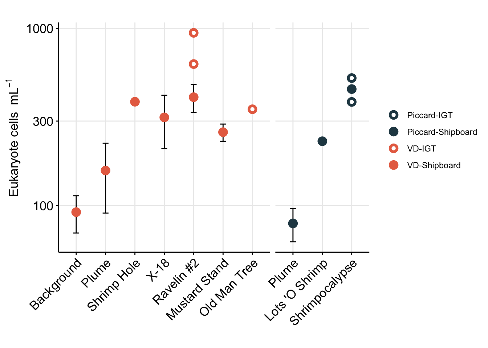
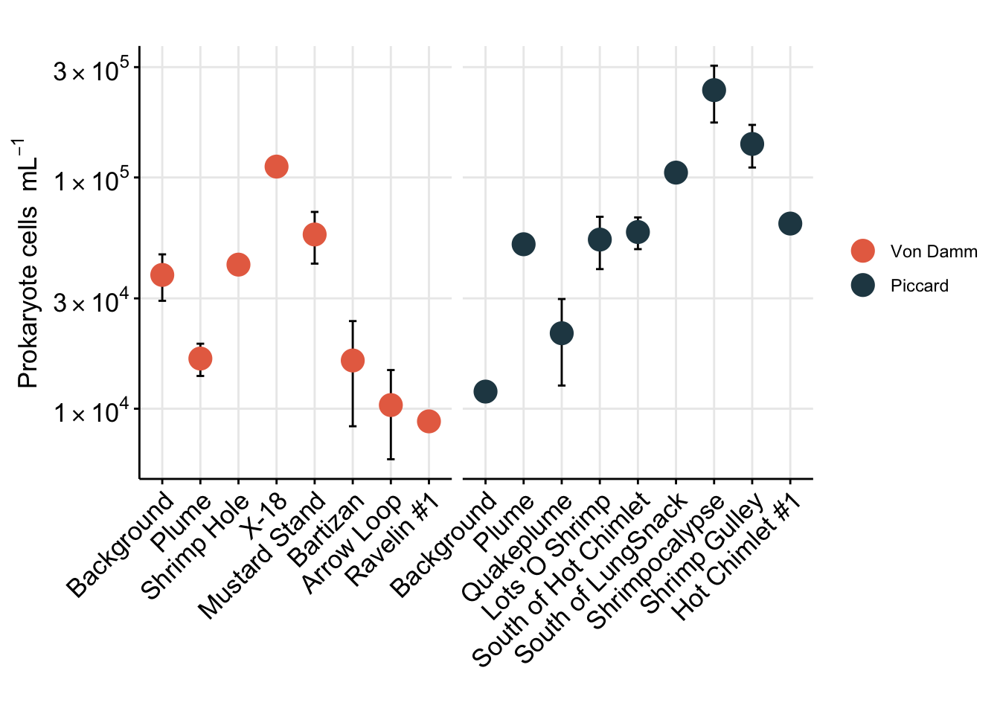
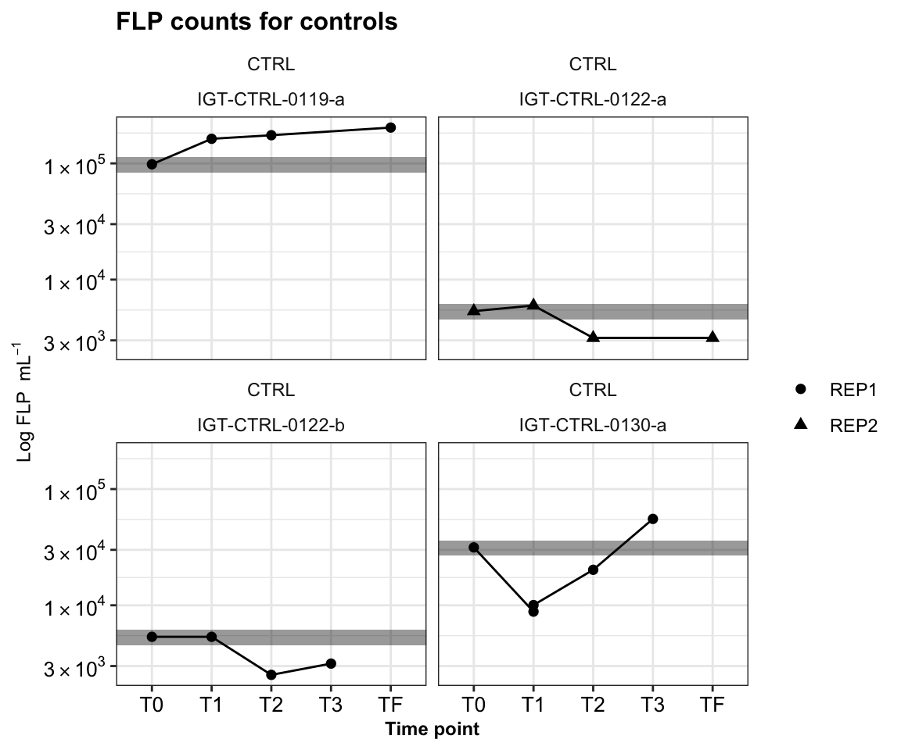
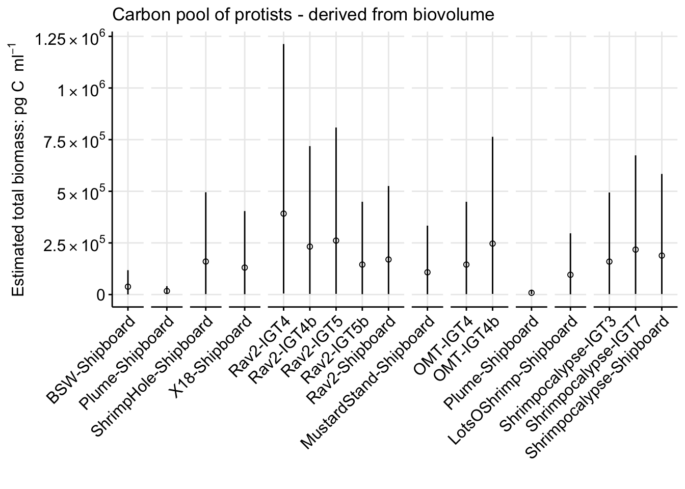
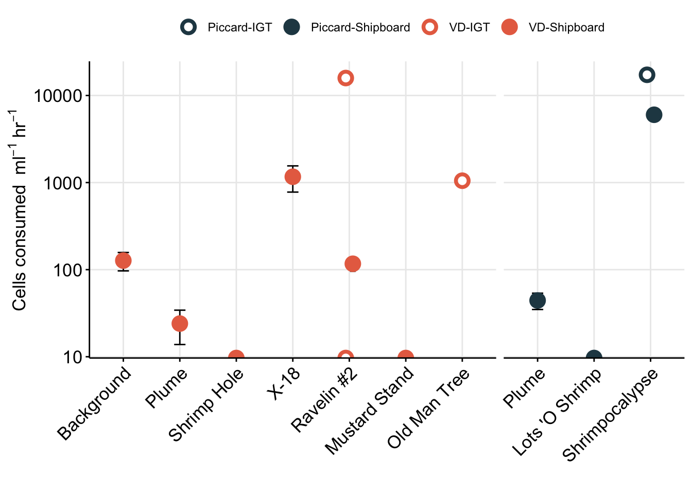
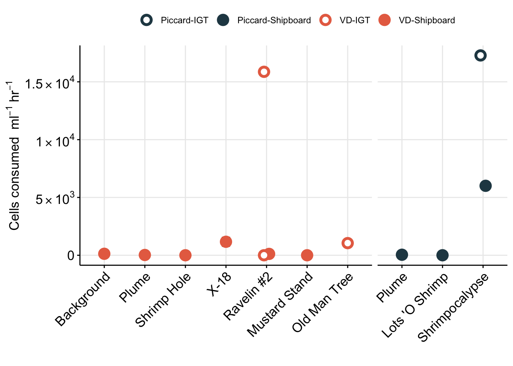
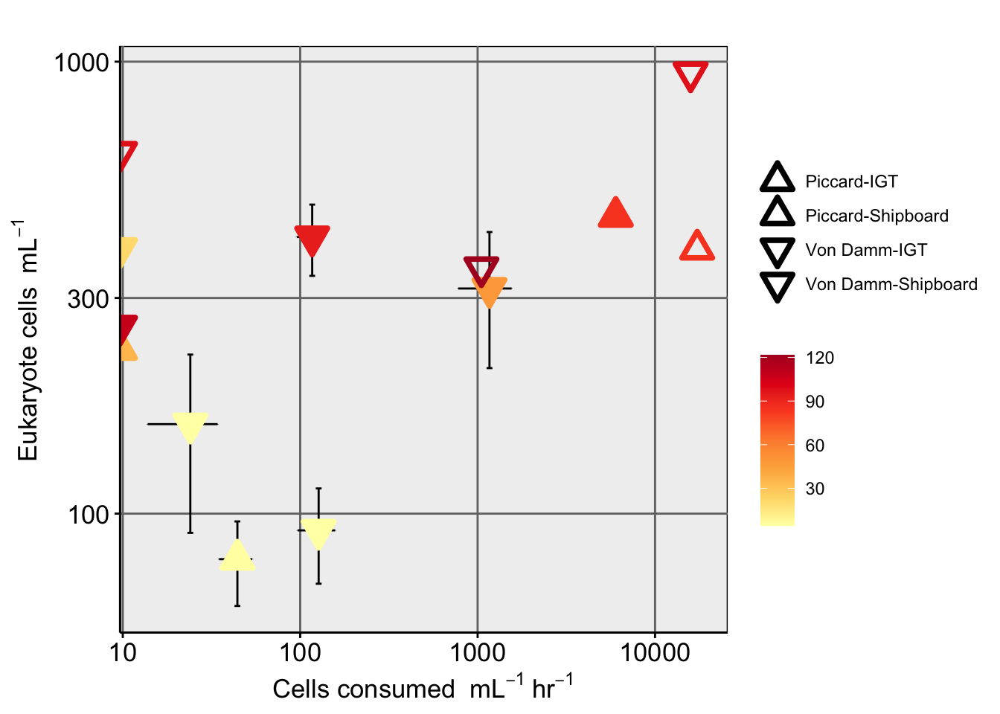
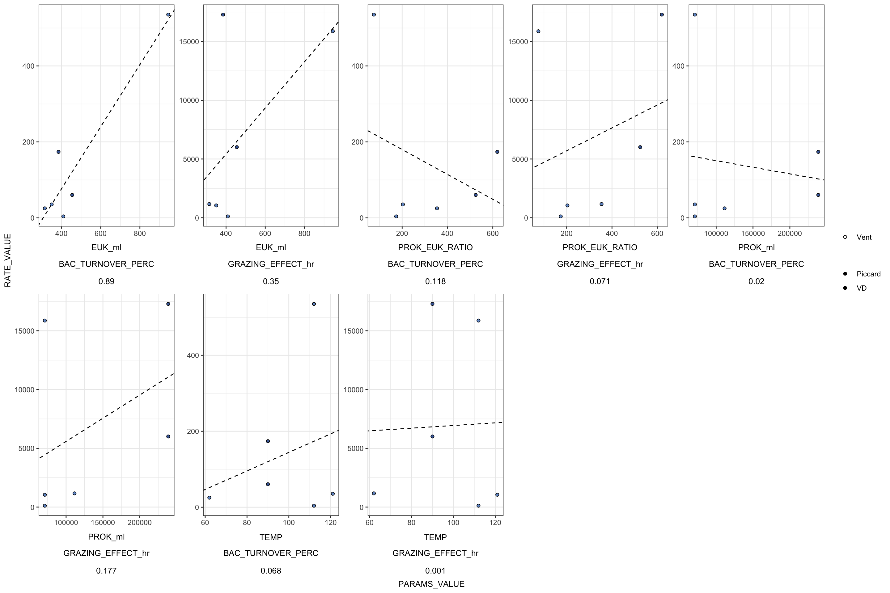

Code
library(tidyverse); library(cowplot); library(broom)
library(patchwork)Code below details how to import cell count (FLP count) information from Mid-Cayman Rise protistan grazing incubations, calculate cell abundances, estimate grazing rate, and cell biomass. This accompanies paper in review: Hu, S. K., Anderson, R. E., Pachiadaki, M. G., Edgcomb, V. P., Serres, M. H., Sylva, S. P., German, C. R., Seewald, J. S., Lang, S. Q., & Huber, J. A. (2023). Microbial eukaryotic predation pressure and biomass at deep-sea hydrothermal vents: Implications for deep-sea carbon cycling. In bioRxiv (p. 2023.08.11.552852). https://doi.org/10.1101/2023.08.11.552852
Load relevant libraries. A few libraries are loaded below in the code, but these are essential.
library(tidyverse); library(cowplot); library(broom)
library(patchwork)Set color schematic for the entire dataset. This is set so that all figures will be uniform for publication.
vent_ids <- c("BSW","Plume", "LotsOShrimp", "Shrimpocalypse",
"ShrimpHole", "X18", "Rav2", "MustardStand", "OMT")
vent_fullname <- c("Background","Plume", "Lots 'O Shrimp", "Shrimpocalypse",
"Shrimp Hole", "X-18", "Ravelin #2", "Mustard Stand", "Old Man Tree")
site_ids <- c("VD", "Piccard")
site_fullname <- c("Von Damm", "Piccard")
site_color <- c("#264653", "#E76F51")
names(site_color) <- site_fullname
whole_pal <- c("#264653", "#2A9D8F", "#E9C46A","#F4A261", "#E76F51")
extra <- c("#eae2b7", "#5f0f40", "#90be6d", "#941b0c", "#577590")Import eukaryotic cell count data from grazing experiments. In this section, we will calculate cells per ml from raw counts (Field of view, etc.) and use to estimate protist cell concentration. These will be used below in grazing experiment calculations.
counts <- read.delim("input-data/euk-counts-compiled.txt",
blank.lines.skip = FALSE,
na.strings = c("", "NA"),
stringsAsFactors = FALSE) # Import
counts[is.na(counts)] <- 0 # Change blanks to zeroesRaw data table collected during microscopy count process. Below code reviews the structure of this raw data and updates column headers to be more ‘R’ friendly.
# Reset column headers
colnames(counts) <- c("DATE", "SAMPLE", "EXPID", "VOL", "MAG", "FOV", "nanoNoFLP", "microNoFLP", "nanoFLP", "microFLP", "NOTES", "DateCompiled")
# View new column headers
colnames(counts) [1] "DATE" "SAMPLE" "EXPID" "VOL" "MAG"
[6] "FOV" "nanoNoFLP" "microNoFLP" "nanoFLP" "microFLP"
[11] "NOTES" "DateCompiled"First we need to count the occurrence and total number of FLP ingested by eukaryotic cells. At the microscope, the number of FLPs ingested was tallied and comma separated for multiple eukaryotic cells with FLP. These values need to separated and counted as 1 eukaryotic cell each, but we also need to retain the number of FLP per cell.
At deep-sea hydrothermal vents, sometimes particulate material can form when we fixed vent fluid. Unfortunately, when we go to do microscopy counts the samples are uncountable because too much precipiate lands on top of the slide. These are labeled as Note countable in my raw count sheets and are removed below.
In a single field of view, if the nanoFLP entry is 2, nanoFLP_occur will be set to 1. And if the nanoFLP entry is 2,1 (which means a euk cell had 2 FLP, and a second cell had 1 FLP), nanoFLP_occur will be set to 2.
counts_occur <- counts %>%
# remove incomplete
filter(NOTES != "Not countable") %>%
# Count number of euk cells observed with FLPs (ex. if "1,2", 'occur' will = 2)
mutate(nanoFLP_occur = as.numeric(str_count(nanoFLP, "[1-9]\\d*")),
microFLP_occur = as.numeric(str_count(microFLP, "[1-9]\\d*")),
# Add number of euk cells with FLPs to those without for total number of euk cells
nanoTOTAL = as.numeric(nanoNoFLP) + nanoFLP_occur,
microTOTAL = as.numeric(microNoFLP) + microFLP_occur,
euksTOTAL = nanoTOTAL + microTOTAL) %>%
data.frameCalculations below determine the cells/ml based on the occurrence of eukaryotic cells in each FOV. Variance and standard deviation are also calculated. Eukaryotic cells were also classified by size, where micro equates to >20um and nano is <20um. All counts were done at 100x magnification, which can be confirmed with this cmd: unique(counts_occur$MAG).
Calculate cell concentration (cells/ml).
counts_cellsml_all <- counts_occur %>%
group_by(SAMPLE, EXPID, VOL) %>% #Calculate averages by sample
summarise(totalFOV = n(), # Count total FOV counted
nanoAvg = sum(nanoTOTAL)/totalFOV, #Average per FOV
nanoVar = var(nanoTOTAL), #Variance
nanoSd = (2*(sqrt(nanoVar))), #Standard deviation
microAvg = sum(microTOTAL)/totalFOV, ## Repeat for microeuks
microVar = var(microTOTAL),
microSd = (2*(sqrt(microVar))),
euksAvg = sum(euksTOTAL)/totalFOV, ## Repeat for total cell count
euksVar = var(euksTOTAL),
euksSd = (2*(sqrt(euksVar))),
.groups = 'drop_last') %>%
# Calculate cells/ml based on magnification (at x100, 0.01 is vol of grid), volume filtered (VOL), dilution factor (0.9), and area of counting grid (for Huber lab scope, it is 283.385):
mutate(nanoCONC = ((nanoAvg * 283.385)/(VOL * 0.01 * 0.9)),
microCONC = ((microAvg * 283.385)/(VOL * 0.01 * 0.9)),
eukCONC = ((euksAvg * 283.385)/(VOL * 0.01 * 0.9))
) %>%
# left_join(expmeta) %>%
separate(SAMPLE, c("Site", "Name"), sep = "-", remove = FALSE) %>%
separate(EXPID, c("TimePoint", "Replicate"), sep = "-", remove = FALSE) %>%
data.frameReplicates belong to the same experiment for either Bag (shipboard or ambient pressure) or IGT (in situ pressure) incubation. Below, modify these names and label new column with Bag or IGT and create an average across replicates.
Average cells/ml across replicates, pivot to long format
counts_cellsml_avg <- counts_cellsml_all %>%
select(Site, Name, TimePoint, Replicate, nanoCONC, microCONC, eukCONC) %>%
mutate(EXP_TYPE = case_when(
grepl("IGT", Replicate) ~ "IGT",
grepl("Rep", Replicate) ~ "Bag"
)) %>%
mutate(IGT_REP = case_when(
EXP_TYPE == "IGT" ~ Replicate,
EXP_TYPE == "Bag" ~ "Bag")) %>%
select(-Replicate) %>% #remove replicates
pivot_longer(cols = ends_with("CONC"), names_to = "VARIABLE", values_to = "CONCENTRATION") %>%
group_by(Site, Name, TimePoint, EXP_TYPE, IGT_REP, VARIABLE) %>%
# Calculate mean, variance, SD, min, and max
summarise(MEAN = mean(CONCENTRATION),
VAR = var(CONCENTRATION),
SD = sd(CONCENTRATION),
SEM =(sd(CONCENTRATION)/sqrt(length(CONCENTRATION))),
MIN = min(CONCENTRATION),
MAX = max(CONCENTRATION),
.groups = 'drop_last') %>%
data.frameNOTES on calculations:
VAR = takes the sum of the squares of each value’s deviation from the mean and divides by the number of such values minus one. This differs from the calculation of variance across an entire population in that the latter divides by the size of the dataset without subtracting one.
SD = standard deviation of all values
SEM = standard deviation of sampling distribution; standard deviation divided by the square root of the sample size.
Save output file.
# save(counts_cellsml_all, counts_cellsml_avg, file = "input-data/raw-avg-eukcount.RData")The average eukaryotic cells per ml value was taken when TRUE replicates were conducted and we observed a cell count.
As a Supplementary figure, plot eukaryote cells/ml for all time points to show that the protistan community wasn’t compromised during the experiments.
# Order the vent sites by temperature
vent_ids <- c("BSW","Plume", "LotsOShrimp", "Shrimpocalypse",
"ShrimpHole", "X18", "Rav2", "MustardStand", "OMT")
vent_fullname <- c("Background","Plume", "Lots 'O Shrimp", "Shrimpocalypse",
"Shrimp Hole", "X-18", "Ravelin #2", "Mustard Stand", "Old Man Tree")
site_ids <- c("VD", "Piccard")
site_fullname <- c("Von Damm", "Piccard")
# head(counts_cellsml_avg)# svg(filename = "../../../Manuscripts_presentations_reviews/MCR-grazing-2023/svg-files-figures/figS2.svg")
counts_cellsml_avg %>%
mutate(EXP_CATEGORY = case_when(
EXP_TYPE == "Bag" ~ "Shipboard",
TRUE ~ "IGT"
)) %>%
mutate(VARIABLE_FIX = case_when(
VARIABLE == "microCONC" ~ "microeukaryote",
VARIABLE == "nanoCONC" ~ "nanoeukaryote",
VARIABLE == "eukCONC" ~ "Total eukaryote"
)) %>%
# Factor name order and label
mutate(SiteOrder = factor(Site, levels = site_ids, labels = site_fullname)) %>%
mutate(NameOrder = factor(Name, levels = vent_ids, labels = vent_fullname)) %>%
# Plot with outline vs. solid circle
ggplot(aes(x = NameOrder, y = MEAN, group = NameOrder,
fill = VARIABLE_FIX,
color = VARIABLE_FIX,
shape = EXP_CATEGORY)) +
geom_jitter(size = 2, stroke = 2, aes(fill = VARIABLE_FIX, color = VARIABLE_FIX,
shape = EXP_CATEGORY)) +
geom_boxplot(alpha = 0.1) +
scale_shape_manual(values = c(1, 21)) +
scale_fill_manual(values = c("#e7298a", "#fcbba1", "#c6dbef")) +
scale_color_manual(values = c("#e7298a", "#fcbba1", "#c6dbef")) +
coord_flip() +
scale_y_log10() +
facet_grid(SiteOrder ~ EXP_CATEGORY, space = "free", scale = "free") +
theme_bw() +
theme(axis.text.x = element_text(angle = 0, h = 1, vjust = 1),
strip.background = element_blank(),
legend.position = "right",
legend.title = element_blank()) +
labs(x = "", y = bquote("Eukaryote cells "~mL^-1),
title = "Distribution of all eukaryotic cell counts")
# dev.off()Eukaryote cell concentration (cells/ml) are lower in the background and plume samples compared to vent sites. ~10s-100 cells/ml in background and plume compared to ~300-1000 cells per ml at the vent sites. These values are also consistent between each vent site (Von Damm and Piccard) and between Bag and IGT samples.
Boxplot represents the median (line in box) and the 1st and 3rd quartiles in the lower and upper hinges, respectively (25th and 75th percentiles). Black data points are outliers from the boxplot. Upper and lower whiskers represent the 1.5 * interquartile ranges. Pink data points are the values contributing to the boxplot (individial counts across replicates and time points.)
eukCONC is the sum of micro and nano. Because there was a discrepency between the micro and nano cell counts, we plan to combine for most of the analysis. Here we show that the cell concentration across replicate samples was similar throughout experiments. And that the bag versus IGT experiment results were within range of one another.
Include plot over time.
# Plot trend line of euk cell count for all experiments
# svg(filename = "../../../Manuscripts_presentations_reviews/MCR-grazing-2023/svg-files-figures/figS4.svg")
counts_cellsml_avg %>%
mutate(EXP_CATEGORY = case_when(
EXP_TYPE == "Bag" ~ "Shipboard",
TRUE ~ "IGT"
)) %>%
mutate(EXP_CATEGORY_WREP = case_when(
EXP_TYPE == "Bag" ~ "Shipboard",
TRUE ~ IGT_REP
)) %>%
# Factor name order and label
mutate(SiteOrder = factor(Site, levels = site_ids, labels = site_fullname)) %>%
mutate(NameOrder = factor(Name, levels = vent_ids, labels = vent_fullname)) %>%
filter(VARIABLE == "eukCONC") %>%
unite("Experiment", NameOrder, EXP_CATEGORY, sep = "-", remove = FALSE) %>%
unite("Experiment_rep", NameOrder, EXP_CATEGORY_WREP, sep = "-", remove = FALSE) %>%
ggplot(aes(x = TimePoint, y = MEAN, shape = EXP_CATEGORY, fill = NameOrder,
color = NameOrder)) +
geom_path(aes(group = Experiment_rep), color = "black") +
geom_errorbar(aes(ymax = (MEAN + SEM), ymin = (MEAN - SEM)), width = 0.2) +
geom_point(stat = "identity", size = 2, stroke = 2, aes(shape = EXP_CATEGORY,
fill = NameOrder,
color = NameOrder)) +
scale_shape_manual(values = c(1, 21)) +
scale_fill_brewer(palette = "Paired") +
scale_color_brewer(palette = "Paired") +
scale_y_log10() +
facet_wrap(SiteOrder ~ EXP_CATEGORY, scales = "free") +
theme_classic() + theme(strip.background = element_blank(),
legend.title = element_blank(),
title = element_text(size = 7, face = "bold"),
axis.title = element_text(size = 9)) +
labs(title = "Total euk cell counts for each experiment", y = bquote("Average eukaryote cells "~mL^-1), x = "Time point")
# dev.off()There is an overall drop in euk cells/ml in the final time point. This is especially true among the IGT samples. We take this into consideration in the manuscript, where the T3 (or final time point) for the IGT experiments is removed.
For Figure 1, we want to show eukaryote cell abundances. For this value, we will use the total eukaryote cell values (micro + nano) from the initial time points (T0).
# Plot trend line of euk cell count for all experiments
euk_plot <- counts_cellsml_avg %>%
mutate(EXP_CATEGORY = case_when(
EXP_TYPE == "Bag" ~ "Shipboard",
TRUE ~ "IGT"
)) %>%
mutate(EXP_CATEGORY_WREP = case_when(
EXP_TYPE == "Bag" ~ "Shipboard",
TRUE ~ IGT_REP
)) %>%
# Factor name order and label
mutate(SiteOrder = factor(Site, levels = site_ids, labels = site_fullname)) %>%
mutate(NameOrder = factor(Name, levels = vent_ids, labels = vent_fullname)) %>%
filter(VARIABLE == "eukCONC") %>%
filter(TimePoint == "T0") %>%
filter(!(grepl("b", IGT_REP))) %>%
unite("SITE_TYPE", Site, EXP_CATEGORY, sep = "-", remove = FALSE) %>%
unite("Experiment", Name, EXP_CATEGORY, sep = "-", remove = FALSE) %>%
unite("Experiment_rep", Name, EXP_CATEGORY_WREP, sep = "-", remove = FALSE) %>%
ggplot(aes(x = NameOrder, y = MEAN, shape = SITE_TYPE, fill = SITE_TYPE,
color = SITE_TYPE)) +
geom_errorbar(aes(ymax = (MEAN + SEM), ymin = (MEAN - SEM)), width = 0.2, color = "black") +
geom_point(stat = "identity", size = 2, stroke = 2, aes(shape = SITE_TYPE,
fill = SITE_TYPE,
color = SITE_TYPE)) +
scale_shape_manual(values = c(21, 21, 21, 21)) +
scale_fill_manual(values = c("white", "#264653", "white", "#E76F51")) +
scale_color_manual(values = c("#264653", "#264653", "#E76F51", "#E76F51")) +
scale_y_log10() +
# cfacet_grid(. ~ SiteOrder, scales = "free") +
facet_grid(.~SiteOrder, space = "free", scales = "free") +
theme_minimal() +
theme(panel.grid.major = element_line(), panel.grid.minor = element_blank(),
panel.background = element_blank(),
axis.line = element_line(colour = "black"),
axis.text.x = element_text(color="black", size = 13,
angle = 45, hjust = 1, vjust = 1),
axis.text.y = element_text(color="black", size = 13),
axis.title =element_text(color="black", size = 13),
axis.ticks = element_line(),
strip.text =element_blank(), legend.title = element_blank()) +
labs(x = "", y = bquote("Eukaryote cells "~mL^-1),
title = "")
euk_plot
Above Figure shows the eukaryote cell abundances separated by vent site (x-axis).
To better show comparison across vent fields (Von Damm vs. Piccard), habitat type (vent fluid vs. background or non-vent), and experiment type (shipboard vs. IGT), cell abundances are better shown as a box plot.
# Plot trend line of euk cell count for all experiments
boxplot_eukcell_site <- counts_cellsml_avg %>%
mutate(LOCATION_BIN = case_when(
(Name == "Plume") ~ "Non-vent",
(Name == "BSW") ~ "Non-vent",
TRUE ~ "Vent"
)) %>%
# Factor name order and label
mutate(SiteOrder = factor(Site, levels = site_ids, labels = site_fullname)) %>%
filter(VARIABLE == "eukCONC") %>%
filter(TimePoint == "T0") %>%
filter(!(grepl("b", IGT_REP))) %>%
ggplot(aes(x = LOCATION_BIN, y = MEAN)) +
geom_boxplot(aes(color = SiteOrder)) +
geom_jitter(stat = "identity", size = 2, width = 0.3, stroke = 2, shape = 21, aes(fill = SiteOrder,
color = SiteOrder)) +
scale_fill_manual(values = c("#264653", "#E76F51")) +
scale_color_manual(values = c("#264653", "#E76F51")) +
scale_y_log10(position = "right") +
coord_flip() +
facet_grid(.~SiteOrder) +
theme_minimal() +
theme(panel.grid.major = element_line(), panel.grid.minor = element_blank(),
panel.background = element_blank(),
axis.line = element_line(colour = "black"),
axis.text.x = element_text(color="black", size = 10,
angle = 0, hjust = 0.5, vjust = 0),
axis.text.y = element_text(color="black", size = 12),
axis.title =element_text(color="black", size = 12),
axis.ticks = element_line(),
strip.text =element_blank(), legend.title = element_blank()) +
labs(x = "", y = bquote("Eukaryote cells "~mL^-1),
title = "")
boxplot_eukcell_site
Repeat, but subset vent sites only and group by experiment approach.
# Plot trend line of euk cell count for all experiments
boxplot_eukcell_exp <-counts_cellsml_avg %>%
mutate(EXP_CATEGORY = case_when(
EXP_TYPE == "Bag" ~ "Shipboard",
TRUE ~ "IGT"
)) %>%
mutate(EXP_CATEGORY_WREP = case_when(
EXP_TYPE == "Bag" ~ "Shipboard",
TRUE ~ IGT_REP
)) %>%
mutate(LOCATION_BIN = case_when(
(Name == "Plume") ~ "Non-vent",
(Name == "BSW") ~ "Non-vent",
TRUE ~ "Vent"
)) %>%
# Factor name order and label
mutate(SiteOrder = factor(Site, levels = site_ids, labels = site_fullname)) %>%
filter(VARIABLE == "eukCONC") %>%
filter(LOCATION_BIN == "Vent") %>%
filter(TimePoint == "T0") %>%
filter(!(grepl("b", IGT_REP))) %>%
ggplot(aes(x = EXP_CATEGORY, y = MEAN)) +
geom_boxplot() +
geom_jitter(stat = "identity", size = 2, width = 0.3, stroke = 2, aes(shape = EXP_CATEGORY)) +
scale_shape_manual(values = c(21, 19)) +
# scale_fill_manual(values = c("#264653", "#E76F51")) +
# scale_color_manual(values = c("#264653", "#E76F51")) +
scale_y_log10(position = "right") +
coord_flip() +
# facet_grid(.~SiteOrder) +
theme_minimal() +
theme(panel.grid.major = element_line(), panel.grid.minor = element_blank(),
panel.background = element_blank(),
axis.line = element_line(colour = "black"),
axis.text.x = element_text(color="black", size = 10,
angle = 0, hjust = 0.5, vjust = 0),
axis.text.y = element_text(color="black", size = 12),
axis.title =element_text(color="black", size = 12),
axis.ticks = element_line(),
strip.text =element_blank(), legend.title = element_blank()) +
labs(x = "", y = bquote("Eukaryote cells "~mL^-1),
title = "")
boxplot_eukcell_expOption to show eukaryote cell abundances without a log scale.
counts_cellsml_all %>%
filter(TimePoint == "T0") %>%
mutate(EXP_CATEGORY = case_when(
grepl("IGT", EXPID) ~ "IGT",
TRUE ~ "Shipboard"
)) %>%
mutate(TYPE_BIN = case_when(
Name == "Plume" ~ "Non-vent",
Name == "Background" ~ "Non-vent",
TRUE ~ "Vent"
)) %>%
mutate(SITE_TYPE = case_when(
grepl("IGT", EXPID) ~ paste(Site, "IGT"),
TRUE ~ paste(Site, "Shipboard"),
)) %>%
# unite("SITE_TYPE", Site, EXP_CATEGORY, sep = "-", remove = FALSE) %>%
# Factor name order and label
mutate(SiteOrder = factor(Site, levels = site_ids, labels = site_fullname)) %>%
mutate(NameOrder = factor(Name, levels = vent_ids, labels = vent_fullname)) %>%
filter(!(grepl("b", EXPID))) %>%
ggplot(aes(y = eukCONC, x = TYPE_BIN)) +
geom_boxplot() +
geom_jitter(stat = "identity", size = 2, stroke = 2, aes(shape = SITE_TYPE,
fill = SITE_TYPE,
color = SITE_TYPE)) +
scale_shape_manual(values = c(21, 21, 21, 21)) +
scale_fill_manual(values = c("white", "#264653", "white", "#E76F51")) +
scale_color_manual(values = c("#264653", "#264653", "#E76F51", "#E76F51")) +
theme_minimal() +
theme(panel.grid.major = element_line(), panel.grid.minor = element_blank(),
panel.background = element_blank(),
axis.line = element_line(colour = "black"),
axis.text.x = element_text(color="black", size = 13,
angle = 45, hjust = 1, vjust = 1),
axis.text.y = element_text(color="black", size = 13),
axis.title =element_text(color="black", size = 13),
axis.ticks = element_line(),
strip.text =element_blank(), legend.title = element_blank()) +
labs(x = "", y = bquote("Eukaryote cells "~mL^-1),
title = "")# save(counts_cellsml_all, counts_cellsml_avg, counts_occur, file = "output-data/MCR-cellcount-dfs.RData")DAPI slide counts from prokaryotes from same sites. Import and compare.
prok <- read.delim("input-data/prokINSITU-counts-compiled.txt")
insitu_proks <- prok %>%
filter(CELLML != "not countable") %>%
separate(SAMPLE, c("Site", "Name"), sep = "-", remove = FALSE) %>%
group_by(SAMPLE, Site, Name) %>%
summarise(MEAN = mean(as.numeric(CELLML)),
SD = sd(CELLML),
SEM = (sd(CELLML)/sqrt(length(CELLML))),
MIN = min(CELLML),
MAX = max(CELLML),
.groups = "rowwise") %>%
data.frameVisualize counts from proks. Get summary of prok counts, and incorporate into plot. Throughout dataset, sample called “Quakeplume” did not work. This was an opportunistic sample that can be removed.
insitu_proks %>% filter(Name != "Quakeplume") %>%
mutate(type = case_when(
Name == "BSW" ~ "non-vent",
Name == "Plume" ~ "non-vent",
TRUE ~ "vent"
)) %>%
group_by(type, Site) %>%
summarize(mean = mean(MEAN),
min = min(MEAN),
max = max(MEAN))`summarise()` has grouped output by 'type'. You can override using the
`.groups` argument.# A tibble: 4 × 5
# Groups: type [2]
type Site mean min max
<chr> <chr> <dbl> <dbl> <dbl>
1 non-vent Piccard 31645. 11860. 51429.
2 non-vent VD 27184. 16478. 37890.
3 vent Piccard 109713. 53878. 238586.
4 vent VD 40907. 8816. 111430.Factor site names, so order can be uniform with other figures.
# Ordered by temperature
insitu_proks$Name_order <- factor(insitu_proks$Name, levels = c("BSW", "Plume",
"ShrimpHole", "X18", "MustardStand",
"Rav2", "OMT","Bartizan","ArrowLoop", "Rav1",
"Quakeplume", "LotsOShrimp", "SouthofHotChimlet",
"SouthofLungSnack", "Shrimpocalypse", "ShrimpGulley",
"HotChimlet1"),
labels = c("Background","Plume",
"Shrimp Hole", "X-18","Mustard Stand",
"Ravelin #2", "Old Man Tree", "Bartizan", "Arrow Loop", "Ravelin #1",
"Quakeplume", "Lots 'O Shrimp", "South of Hot Chimlet",
"South of LungSnack", "Shrimpocalypse", "Shrimp Gulley", "Hot Chimlet #1"))
site_ids <- c("VD", "Piccard")
site_fullname <- c("Von Damm", "Piccard")
insitu_proks$Site_order <- factor(insitu_proks$Site, levels = site_ids, labels = site_fullname)
site_color <- c("#E76F51", "#264653")
site_fill <- c("#E76F51", "#264653")
# names(site_color) <- site_fullnameWrite function to output scientific notation in the plot with x 10^a
library(scales)Warning: package 'scales' was built under R version 4.2.3
Attaching package: 'scales'The following object is masked from 'package:purrr':
discardThe following object is masked from 'package:readr':
col_factorscientific_10 = function(x) {
ifelse(
x==0, "0",
parse(text = sub("e[+]?", " %*% 10^", scales::scientific_format()(x)))
)
} prok_plot <- ggplot(insitu_proks, aes(x = Name_order, y = MEAN)) +
geom_errorbar(aes(ymax = (MEAN + SEM), ymin = (MEAN - SEM)), width = 0.2) +
geom_point(stat = "identity", shape = 21, stroke = 2, aes(fill = Site_order,
color = Site_order), size = 3) +
facet_grid(.~ Site_order, space = "free", scales = "free") +
scale_fill_manual(values = c("#E76F51", "#264653")) +
scale_color_manual(values = c("#E76F51", "#264653")) +
labs(y = bquote("Prokaryote cells "~mL^-1), x = "", title = "") +
scale_y_log10(label = scientific_10) +
# scale_y_log10(label=trans_format("log10",math_format(10^.x))) +
# scale_y_continuous(label = scientific_10) +
theme_minimal() +
theme(panel.grid.major = element_line(), panel.grid.minor = element_blank(),
panel.background = element_blank(),
axis.line = element_line(colour = "black"),
axis.text.x = element_text(color="black", size = 13,
angle = 45, hjust = 1, vjust = 1),
axis.text.y = element_text(color="black", size = 13),
axis.title =element_text(color="black", size = 13),
axis.ticks = element_line(),
strip.text =element_blank(), legend.title = element_blank())
prok_plot
Show prokaryote cell abundance as boxplot.
insitu_proks %>%
mutate(TYPE_BIN = case_when(
Name == "BSW" ~ "Non-vent",
Name == "Plume" ~ "Non-vent",
TRUE ~ "Vent"
)) %>%
ggplot(aes(x = TYPE_BIN, y = MEAN)) +
# geom_errorbar(aes(ymax = (MEAN + SEM), ymin = (MEAN - SEM)), width = 0.2) +
geom_boxplot() +
geom_jitter(stat = "identity", shape = 21, stroke = 2, aes(fill = Site_order,
color = Site_order), size = 3) +
scale_fill_manual(values = c("#E76F51", "#264653")) +
scale_color_manual(values = c("#E76F51", "#264653")) +
labs(y = bquote("Prokaryote cells "~mL^-1), x = "", title = "") +
scale_y_log10(label = scientific_10) +
# scale_y_log10(label=trans_format("log10",math_format(10^.x))) +
# scale_y_continuous(label = scientific_10) +
theme_minimal() +
theme(panel.grid.major = element_line(), panel.grid.minor = element_blank(),
panel.background = element_blank(),
axis.line = element_line(colour = "black"),
axis.text.x = element_text(color="black", size = 13,
angle = 45, hjust = 1, vjust = 1),
axis.text.y = element_text(color="black", size = 13),
axis.title =element_text(color="black", size = 13),
axis.ticks = element_line(),
strip.text =element_blank(), legend.title = element_blank())Combined eukaryote and prokaryote cell counts.
euk_prok_ab <- (euk_plot + theme(legend.position = "top")) + (prok_plot + theme(legend.position = "top")) + patchwork::plot_layout(ncol = 2) + patchwork::plot_annotation(tag_levels = "a")
euk_prok_ab
Compare in situ prokaryote cell counts from 2020 to previous years
prok_prev <- read.csv("input-data/cellcount_previousyr.csv")
prok_prev_formatted <- prok_prev %>%
mutate(VENTSITE = case_when(
grepl("Piccard", Site) ~ "Piccard",
grepl("Von Damm", Site) ~ "VD"
)) %>%
filter(!is.na(YEAR)) %>% #QC of
# filter(cells_ml != "NC") %>%
# filter(cells_ml != "") %>%
# filter(cells_ml != "no data") %>%
type.convert(as.is = TRUE, numerals = "no.loss") %>%
select(YEAR, VENTSITE, NAME = Name, REP=Replicate, CELLML = cells_ml, ORIGSAMPLE = Orig_vent_site_ID, ID_number, Origin)Re-import 2020 data to compare.
# Re-import 2020
prok <- read.delim("input-data/prokINSITU-counts-compiled.txt")
proks_allyrs <- prok %>%
separate(SAMPLE, c("VENTSITE", "NAME"), sep = "-", remove = FALSE) %>%
mutate(YEAR = 2020) %>%
select(YEAR, VENTSITE, NAME, REP, CELLML, ORIGSAMPLE = BAC) %>%
bind_rows(prok_prev_formatted %>% select(-ID_number, -Origin)) %>%
type.convert(as.is = TRUE) %>%
# Remove not countable or not data samples:
filter(CELLML != "NC") %>%
filter(CELLML != "") %>%
filter(CELLML != "no data") %>%
filter(CELLML != "not countable") %>%
data.frame
vent_order <- c("BSW","Plume","Quakeplume","NearsummitBeebee","MainOrifice","NearMainOrifice","Rav1","HotChimlet1","HotChimlet","SouthofHotChimlet","NearHotChimlet","HotCracks1","HotCracks2","ShrimpHole","ShrimpHole(X18)","X18","X19","SouthofLungSnack","TwinPeaks","OMT","WhiteCastle","GingerCastle","ArrowLoop","Bartizan","LotsOShrimp","MustardStand","ShrimpButtery","ShrimpCanyon","ShrimpGulley","Shrimpocalypse","ShrimpVegas")
vent_names <- c("Background","Plume","Quakeplume","Near summit Beebee Vents Mound","Main Orifice","Near Main Orifice","Ravelin #1","Hot Chimlet #1","Hot Chimlet","South of Hot Chimlet","Near Hot Chimlet","Hot Cracks #1","Hot Cracks #2","Shrimp Hole","Shrimp Hole (X-18)","X-18","X-19","South of Lung Snack","Twin Peaks","Old Man Tree","White Castle","Ginger Castle","Arrow Loop","Bartizan","Lots O Shrimp","Mustard Stand","Shrimp Buttery","Shrimp Canyon","Shrimp Gulley","Shrimpocalypse","Shrimp Vegas")
proks_allyrs$NAME_ORDER <- factor(proks_allyrs$NAME, levels = vent_order, labels = vent_names)
proks_allyrs$VENTSITE_ORDER <- factor(proks_allyrs$VENTSITE, levels = c("Piccard", "VD"), labels = c("Piccard", "Von Damm"))Plot by year.
# pdf("compare-across-yr-cellcount-04052021.pdf", h = 8, w = 7)
ggplot(proks_allyrs, aes(x = NAME_ORDER, y = as.numeric(CELLML), fill = factor(YEAR), shape = VENTSITE_ORDER)) +
geom_point(stat = "identity", aes(fill = factor(YEAR)), size = 3) +
scale_shape_manual(values = c(21,23)) +
coord_flip() +
facet_grid(VENTSITE_ORDER ~ ., space = "free", scales = "free") +
scale_y_log10() +
scale_fill_manual(values = c("#1c9099", "#ffeda0", "#fc4e2a")) +
theme_linedraw() +
theme(axis.text = element_text(color = "black", size = 10),
strip.background = element_blank(),
strip.text.y = element_text(color = "black", size = 11, hjust = 0, vjust = 1),
legend.title = element_blank(),
legend.position = "bottom",
panel.grid.minor = element_blank(),
panel.grid.major = element_line(color = "grey")) +
labs(y = bquote("Cells "~mL^-1), x = "") +
guides(fill=guide_legend(override.aes=list(shape=22)))# dev.off()# head(insitu_proks)
# names(counts_cellsml_avg)
prok_tojoin <- insitu_proks %>%
mutate(MEAN_SIG = signif(as.numeric(MEAN), digits = 5),
MIN_sig = signif(as.numeric(MIN), digits = 4),
MAX_sig = signif(as.numeric(MAX), digits = 4)) %>%
unite("PROK_MinMax", MIN_sig, MAX_sig, sep = " / ") %>%
select(Site, Name, PROK_ml = MEAN_SIG, PROK_MinMax, PROK_sem = SEM)
# prok_tojoinPart of Table 1.
euk_prok_counts <- counts_cellsml_avg %>%
mutate(EXP_CATEGORY = case_when(
EXP_TYPE == "Bag" ~ "Shipboard",
TRUE ~ "IGT"
)) %>%
mutate(EXP_CATEGORY_WREP = case_when(
EXP_TYPE == "Bag" ~ "Shipboard",
TRUE ~ IGT_REP
)) %>%
# Factor name order and label
mutate(SiteOrder = factor(Site, levels = site_ids, labels = site_fullname)) %>%
mutate(NameOrder = factor(Name, levels = vent_ids, labels = vent_fullname)) %>%
filter(VARIABLE == "eukCONC") %>%
filter(TimePoint == "T0") %>%
filter(!(grepl("b", IGT_REP))) %>%
unite("SITE_TYPE", Site, EXP_CATEGORY, sep = "-", remove = FALSE) %>%
unite("Experiment", Name, EXP_CATEGORY, sep = "-", remove = FALSE) %>%
unite("Experiment_rep", Name, EXP_CATEGORY_WREP, sep = "-", remove = FALSE) %>%
mutate(MEAN_SIG = signif(MEAN, digits = 5),
MIN_sig = signif(MIN, digits = 4),
MAX_sig = signif(MAX, digits = 4)) %>%
unite("EUK_MinMax", MIN_sig, MAX_sig, sep = " / ") %>%
select(Site, Name, SITE_TYPE, Experiment, Experiment_rep, VARIABLE, EUK_ml = MEAN_SIG, EUK_MinMax, EUK_sem = SEM) %>%
left_join(prok_tojoin)Joining with `by = join_by(Site, Name)`euk_prok_counts # add to this later for Table 1 Site Name SITE_TYPE Experiment
1 Piccard LotsOShrimp Piccard-Shipboard LotsOShrimp-Shipboard
2 Piccard Plume Piccard-Shipboard Plume-Shipboard
3 Piccard Shrimpocalypse Piccard-Shipboard Shrimpocalypse-Shipboard
4 Piccard Shrimpocalypse Piccard-IGT Shrimpocalypse-IGT
5 Piccard Shrimpocalypse Piccard-IGT Shrimpocalypse-IGT
6 VD BSW VD-Shipboard BSW-Shipboard
7 VD MustardStand VD-Shipboard MustardStand-Shipboard
8 VD OMT VD-IGT OMT-IGT
9 VD Plume VD-Shipboard Plume-Shipboard
10 VD Rav2 VD-Shipboard Rav2-Shipboard
11 VD Rav2 VD-IGT Rav2-IGT
12 VD Rav2 VD-IGT Rav2-IGT
13 VD ShrimpHole VD-Shipboard ShrimpHole-Shipboard
14 VD X18 VD-Shipboard X18-Shipboard
Experiment_rep VARIABLE EUK_ml EUK_MinMax EUK_sem PROK_ml
1 LotsOShrimp-Shipboard eukCONC 230.910 230.9 / 230.9 NA 53878
2 Plume-Shipboard eukCONC 79.301 55.98 / 112 16.819081 51429
3 Shrimpocalypse-Shipboard eukCONC 454.820 454.8 / 454.8 NA 238590
4 Shrimpocalypse-IGT3 eukCONC 384.840 384.8 / 384.8 NA 238590
5 Shrimpocalypse-IGT7 eukCONC 524.790 524.8 / 524.8 NA 238590
6 BSW-Shipboard eukCONC 91.838 69.97 / 113.7 21.866127 37890
7 MustardStand-Shipboard eukCONC 259.770 230.9 / 288.6 28.863287 56677
8 OMT-IGT4 eukCONC 349.860 349.9 / 349.9 NA NA
9 Plume-Shipboard eukCONC 157.770 55.98 / 284.4 67.098589 16478
10 Rav2-Shipboard eukCONC 409.330 335.9 / 482.8 73.470185 NA
11 Rav2-IGT4 eukCONC 944.620 944.6 / 944.6 NA NA
12 Rav2-IGT5 eukCONC 629.740 629.7 / 629.7 NA NA
13 ShrimpHole-Shipboard eukCONC 385.720 377.8 / 393.6 7.871806 41983
14 X18-Shipboard eukCONC 314.870 209.9 / 419.8 104.957407 111430
PROK_MinMax PROK_sem
1 26240 / 90260 13727.191
2 46810 / 56050 4618.126
3 108700 / 322000 65792.588
4 108700 / 322000 65792.588
5 108700 / 322000 65792.588
6 18470 / 56470 8608.427
7 42400 / 70950 14274.207
8 <NA> NA
9 13850 / 19100 2623.935
10 <NA> NA
11 <NA> NA
12 <NA> NA
13 38830 / 45130 3148.722
14 108500 / 114400 2973.793Calculate FLP per eukaryotic cell over time. Goal is to make these calculations and then determine best fit line. Slope of best fit line is the grazing rate. Need to take into account euk cells with FLPs and then the euk cells withOUT FLPs, these will be zeroes to take into account for FLPs/euk averages.
load("output-data/MCR-cellcount-dfs.RData", verbose = TRUE)Loading objects:
counts_cellsml_all
counts_cellsml_avg
counts_occurIsolate euk cell counts with FLPs (comma separated for counts). These need to be separated into rows, use counts_occur data frame from above. We can use the command separate_rows() to do this.
# Select nano and micro counts with FLPs
counts_sepflp <- counts_occur %>%
filter(!NOTES == "Discard") %>% # uncountable
filter(!(NOTES == "DTAF stain prevented counts of FLP, Euks only")) %>% # uncountable
select(DATE, SAMPLE, EXPID, VOL, MAG, FOV, nanoFLP, microFLP) %>%
# Inputs that are comma separated will be split into a new row
separate_rows(microFLP, sep = ",", convert = TRUE) %>%
separate_rows(nanoFLP, sep = ",", convert = TRUE) %>%
# Replace NAs with zeroes
replace_na(list(microFLP = 0, nanoFLP = 0)) %>%
data.frameoptional gut check of data table modification
# See FOV 23, where nanoFLP is 4,5
# View(counts_occur %>%
# filter(SAMPLE == "VD-Rav2" & EXPID == "T10-Rep1"))
## Check FOV 23. It is separated into 2 rows, 4 and then 5.
# View(counts_sepflp %>%
# filter(SAMPLE == "VD-Rav2" & EXPID == "T10-Rep1"))Isolate counts that are >0, so only eukaryote cells that were observed to have FLPs are included. Then calculate FLP per euk cell by dividing by 1. Each row is a euk cell, based on data transformation above.
counts_flp <- counts_sepflp %>%
select(SAMPLE, EXPID, nano_size = nanoFLP, micro_size = microFLP) %>%
pivot_longer(cols = ends_with("_size"), names_to = "SizeFrac", values_to = "num_of_FLP") %>%
filter(num_of_FLP > 0) %>%
separate(SAMPLE, c("Site", "Name"), sep = "-", remove = FALSE) %>%
separate(EXPID, c("TimePoint", "Replicate"), sep = "-", remove = FALSE) %>%
mutate(EXP_TYPE = case_when(
grepl("IGT", Replicate) ~ "IGT",
grepl("Rep", Replicate) ~ "Bag"
)) %>%
mutate(IGT_REP = case_when(
EXP_TYPE == "IGT" ~ Replicate,
EXP_TYPE == "Bag" ~ "Bag")) %>%
group_by(SAMPLE, EXPID, EXP_TYPE, IGT_REP, SizeFrac) %>%
summarise(total_FLP = sum(num_of_FLP),
total_euks_wflp = n(),
.groups = "rowwise") %>%
data.frame
glimpse(counts_flp)Rows: 157
Columns: 7
$ SAMPLE <chr> "Piccard-LotsOShrimp", "Piccard-LotsOShrimp", "Piccard…
$ EXPID <chr> "T0-Rep3", "T15-Rep3", "T15-Rep3", "T20-Rep3", "T0-Rep…
$ EXP_TYPE <chr> "Bag", "Bag", "Bag", "Bag", "Bag", "Bag", "Bag", "Bag"…
$ IGT_REP <chr> "Bag", "Bag", "Bag", "Bag", "Bag", "Bag", "Bag", "Bag"…
$ SizeFrac <chr> "nano_size", "micro_size", "nano_size", "nano_size", "…
$ total_FLP <int> 3, 1, 3, 2, 2, 4, 3, 2, 8, 6, 3, 3, 9, 1, 7, 4, 7, 8, …
$ total_euks_wflp <int> 2, 1, 2, 1, 1, 3, 2, 1, 5, 5, 2, 1, 4, 1, 3, 1, 4, 2, …OUTPUT COLUMNS: (1) total_FLP = sum of FLPs found inside a euk cell (2) total_euks_wflp = number of euks counted with ingested FLP
Repeat above operation for euk cells without any FLP. Here, subset total number of observations where there was a euk cell without FLP. These need to be counted as euk cell without an FLP.
Below code repeats process and compiles with other FLP/euk cell data.
Repeat above process for euk cells without FLPs (0 FLP per euk cell needs to be included in overall average).
counts_flp_compiled <- counts_occur %>%
filter(!(NOTES == "Discard")) %>% #Discard bad counts
filter(!(NOTES == "DTAF stain prevented counts of FLP, Euks only")) %>%
type.convert(as.is = TRUE) %>% #modify str() for columns
select(SAMPLE, EXPID, nano_size = nanoNoFLP, micro_size = microNoFLP) %>% #select non flp
pivot_longer(cols = ends_with("_size"), names_to = "SizeFrac", values_to = "num_of_euks") %>%
separate(SAMPLE, c("Site", "Name"), sep = "-", remove = FALSE) %>%
separate(EXPID, c("TimePoint", "Replicate"), sep = "-", remove = FALSE) %>%
mutate(EXP_TYPE = case_when(
grepl("IGT", Replicate) ~ "IGT",
grepl("Rep", Replicate) ~ "Bag"
)) %>%
mutate(IGT_REP = case_when(
EXP_TYPE == "IGT" ~ Replicate,
EXP_TYPE == "Bag" ~ "Bag")) %>%
# filter(num_of_euks > 0) %>% # Remove observed zero counts
group_by(SAMPLE, EXPID, EXP_TYPE, IGT_REP, SizeFrac) %>%
summarise(total_euks_noFLP = sum(num_of_euks),
.groups = "rowwise") %>%
# Join with FLP count information
## SAMPLE, EXPID, EXPTYPE, IGTREP, and SizeFrac variables should match
left_join(counts_flp) %>% # Join with the counts of FLP per euk cell
replace_na(list(total_FLP = 0, total_euks_wflp = 0)) %>% #Replace NAs with zero
data.frameJoining with `by = join_by(SAMPLE, EXPID, EXP_TYPE, IGT_REP, SizeFrac)`counts_flp_compiled_all <- counts_flp_compiled %>%
# Exclude size fraction:
group_by(SAMPLE, EXPID, EXP_TYPE, IGT_REP) %>%
summarise(total_euks_noFLP = sum(total_euks_noFLP),
total_FLP = sum(total_FLP),
total_euks_wflp = sum(total_euks_wflp),
.groups = "rowwise") %>%
add_column(SizeFrac = "total_euks") %>% #Add SizeFrac column
bind_rows(counts_flp_compiled) %>% # Combine back with flp compiled list
data.frame
glimpse(counts_flp_compiled_all)Rows: 336
Columns: 8
$ SAMPLE <chr> "Piccard-LotsOShrimp", "Piccard-LotsOShrimp", "Piccar…
$ EXPID <chr> "T0-Rep3", "T15-Rep3", "T20-Rep3", "T40-Rep3", "T0-Re…
$ EXP_TYPE <chr> "Bag", "Bag", "Bag", "Bag", "Bag", "Bag", "Bag", "Bag…
$ IGT_REP <chr> "Bag", "Bag", "Bag", "Bag", "Bag", "Bag", "Bag", "Bag…
$ total_euks_noFLP <int> 9, 8, 9, 5, 6, 5, 11, 8, 2, 9, 10, 1, 5, 5, 3, 7, 5, …
$ total_FLP <int> 3, 4, 2, 0, 6, 5, 8, 6, 3, 12, 8, 11, 19, 5, 4, 9, 11…
$ total_euks_wflp <int> 2, 3, 1, 0, 4, 3, 5, 5, 2, 5, 4, 5, 6, 4, 3, 5, 4, 1,…
$ SizeFrac <chr> "total_euks", "total_euks", "total_euks", "total_euks…The code above takes the processed microscopy counts, and estimates the total number of FLP and the total number of eukaryotes counted (with or without FLP inside). To calculate the rate that FLP were ingested, we need the slope of the line when we plot the number of ingested FLP per eukaryote cell by experiment time.
We will use this equation below: FLPperEuk = total_FLP/(sum(total_euks_noFLP, total_euks_wflp)).
First need to import and compile with metadata to get exact timing of experiments.
metadata <- read.delim("input-data/flp-exp-metadata-compiled.txt")
exp_metadata <- read.csv("input-data/flp_exp_metadata.csv")IGT_#_ denotes a separate IGT experiment. Due to bottle effects and the need to look at how replicate experiments compared, lets keep these separate. For IGT experiments labeled “b”, this means the OTHER HALF of the filter was counted or re-counted as a way to confirm my eukaryote cell counting was precise (explored in manuscript supplement).
counts_flp_calcs_all <- counts_flp_compiled_all %>%
# Add in metadata
# IGTXb are replicate counts, use this to include them as replicates
separate(EXPID, c("TimePoint", "REP"), sep = "-", remove = FALSE) %>%
mutate(
REP = ifelse(grepl("IGT5b", REP), "IGT5", REP),
REP = ifelse(grepl("IGT4b", REP), "IGT4", REP),
REP = ifelse(grepl("Bag", EXP_TYPE), "Bag", REP)) %>%
left_join(metadata, by = c("SAMPLE" = "SAMPLE", "TimePoint" = "TimePoint", "REP" = "REP")) %>%
left_join(exp_metadata, by = c("SAMPLE" = "SAMPLE", "REP" = "REP")) %>%
separate(SAMPLE, c("Site", "Name"), sep = "-", remove = FALSE) %>%
separate(EXPID, c("TimePoint", "Replicate_ID"), sep = "-", remove = FALSE) %>%
## Treat repeated IGT counts completely separate
group_by(SAMPLE, Site, Name, EXPID, TimePoint, Replicate_ID, EXP_TYPE, IGT_REP, SizeFrac) %>%
## Treat repeated IGT counts as replicates (e.g., IGT4b and IGT4 == IGT4)
# group_by(SAMPLE, Site, Name, EXPID, TimePoint, Replicate_ID, EXP_TYPE, REP, SizeFrac) %>%
# FLPperEuk is the total FLP divided by the total number of euk cells counted
mutate(FLPperEuk = total_FLP/(sum(total_euks_noFLP, total_euks_wflp))) %>%
unite("Experiment", Name, REP, sep = "-", remove = FALSE) %>%
data.frame
glimpse(counts_flp_calcs_all)Rows: 336
Columns: 23
$ SAMPLE <chr> "Piccard-LotsOShrimp", "Piccard-LotsOShrimp", "Piccar…
$ Site <chr> "Piccard", "Piccard", "Piccard", "Piccard", "Piccard"…
$ Experiment <chr> "LotsOShrimp-Bag", "LotsOShrimp-Bag", "LotsOShrimp-Ba…
$ Name <chr> "LotsOShrimp", "LotsOShrimp", "LotsOShrimp", "LotsOSh…
$ EXPID <chr> "T0-Rep3", "T15-Rep3", "T20-Rep3", "T40-Rep3", "T0-Re…
$ TimePoint <chr> "T0", "T15", "T20", "T40", "T0", "T0", "T0", "T10", "…
$ Replicate_ID <chr> "Rep3", "Rep3", "Rep3", "Rep3", "Rep1", "Rep2", "Rep3…
$ REP <chr> "Bag", "Bag", "Bag", "Bag", "Bag", "Bag", "Bag", "Bag…
$ EXP_TYPE <chr> "Bag", "Bag", "Bag", "Bag", "Bag", "Bag", "Bag", "Bag…
$ IGT_REP <chr> "Bag", "Bag", "Bag", "Bag", "Bag", "Bag", "Bag", "Bag…
$ total_euks_noFLP <int> 9, 8, 9, 5, 6, 5, 11, 8, 2, 9, 10, 1, 5, 5, 3, 7, 5, …
$ total_FLP <int> 3, 4, 2, 0, 6, 5, 8, 6, 3, 12, 8, 11, 19, 5, 4, 9, 11…
$ total_euks_wflp <int> 2, 3, 1, 0, 4, 3, 5, 5, 2, 5, 4, 5, 6, 4, 3, 5, 4, 1,…
$ SizeFrac <chr> "total_euks", "total_euks", "total_euks", "total_euks…
$ Minutes <int> 0, 15, 20, 40, 0, 0, 0, 10, 10, 10, 15, 15, 15, 20, 2…
$ SiteOrigin <chr> "Vent", "Vent", "Vent", "Vent", "Plume", "Plume", "Pl…
$ FLUID_ORIGIN <chr> "J2-1241", "J2-1241", "J2-1241", "J2-1241", "CTD004",…
$ CRUISE_SAMPLE <chr> "LV24", "LV24", "LV24", "LV24", "Niskin 10", "Niskin …
$ EXP_REPS <int> 3, 3, 3, 3, 3, 3, 3, 3, 3, 3, 3, 3, 3, 3, 3, 3, 3, 3,…
$ EXP_VOL <dbl> 1.50, 1.50, 1.50, 1.50, 2.00, 2.00, 2.00, 2.00, 2.00,…
$ CTRL_REPS <int> 2, 2, 2, 2, 2, 2, 2, 2, 2, 2, 2, 2, 2, 2, 2, 2, 2, 2,…
$ CTRL_VOL <dbl> 0.2, 0.2, 0.2, 0.2, 0.5, 0.5, 0.5, 0.5, 0.5, 0.5, 0.5…
$ FLPperEuk <dbl> 0.27272727, 0.36363636, 0.20000000, 0.00000000, 0.600…Explanation of main columns:
Timepoint shows the time point for the experiment, while Minutes = reports the actual minutes at incubation.Replicate_ID, REP, and IGT_REP = full replicate identified for IGTs and Bags, designation of biological replicates, and designation of technical replicates for IGT experiments
An example of the Ravelin #2 site, where we have two IGT experiments and 1 ambient/bag/shipboard experiment. Below, we have plotted the FLP per EUK cell by the time of the experiment. This is showing the total number of counts done, so replicates 1-3 are shown for the Bag experiment.
counts_flp_calcs_all %>%
filter(Name == "Rav2") %>%
ggplot(aes(x = Minutes, y = FLPperEuk, fill = Experiment, group = Replicate_ID)) +
geom_point(stat = "identity", shape = 21, color = "black") +
facet_grid(cols = vars(Experiment)) +
theme_bw()Warning: Removed 13 rows containing missing values (`geom_point()`).
Use lm() function in R to calculate linear regression for each experiment. Slope equates to grazing rate. Function inputs the FLP per euk cell data, performs regression and then adds a column for slope and r-squared values.
Function to estimate slope. Uses broom and tidymodels, then extracts slope.
calculate_lm <- function(df){
regression_1 <- df %>%
type.convert(as.is = TRUE) %>%
## Keep technical replicates separate for IGTs
group_by(SAMPLE, Site, Experiment, Name, IGT_REP, SizeFrac) %>%
nest(-SAMPLE, -Site, -Experiment, -Name, -IGT_REP, -SizeFrac) %>%
## Combine technical replicates for IGTs
# group_by(SAMPLE, Site, Experiment, Name, REP, SizeFrac) %>%
# nest(-SAMPLE, -Site, -Experiment, -Name, -REP, -SizeFrac) %>%
mutate(lm_fit = map(data, ~lm(FLPperEuk ~ Minutes, data = .)),
tidied = map(lm_fit, tidy)) %>%
unnest(tidied) %>%
select(SAMPLE, Site, Experiment, Name, IGT_REP, SizeFrac, term, estimate) %>%
# select(SAMPLE, Site, Experiment, Name, REP, SizeFrac, term, estimate) %>%
pivot_wider(names_from = term, values_from = estimate) %>%
data.frame
# Reset column names
colnames(regression_1) <- c("SAMPLE", "Site",
"Experiment", "Name", "IGT_REP",
"SizeFrac", "INTERCEPT", "SLOPE")
# Repeat broom model to get R2
out_regression <- df %>%
## Keep technical replicates separate for IGTs
group_by(SAMPLE, Site, Experiment, Name, IGT_REP, SizeFrac) %>%
nest(-SAMPLE, -Site, -Experiment, -Name, -IGT_REP, -SizeFrac) %>%
# group_by(SAMPLE, Site, Experiment, Name, REP, SizeFrac) %>%
# nest(-SAMPLE, -Site, -Experiment, -Name, -REP, -SizeFrac) %>%
mutate(lm_fit = map(data, ~lm(FLPperEuk ~ Minutes, data = .)),
glanced = map(lm_fit, glance)) %>%
unnest(glanced) %>%
select(SAMPLE, Site, Experiment, Name, IGT_REP, SizeFrac, r.squared) %>%
# select(SAMPLE, Site, Experiment, Name, REP, SizeFrac, r.squared) %>%
right_join(regression_1) %>%
right_join(df) %>%
data.frame
out_regression$SITE <- factor(out_regression$Site, levels = c("VD", "Piccard"))
out_regression$TYPE <- factor(out_regression$EXP_TYPE, levels = c("Bag", "IGT"))
return(out_regression)
}Note that an error may occur when running the below function. This is due to the fact that some experiments did not have replicates.
Apply to all data to obtain slope.
calcs_wslope_regression <- calculate_lm(counts_flp_calcs_all)Warning: Supplying `...` without names was deprecated in tidyr 1.0.0.
ℹ Please specify a name for each selection.
ℹ Did you want `data = c(-SAMPLE, -Site, -Experiment, -Name, -IGT_REP,
-SizeFrac)`?Warning: Supplying `...` without names was deprecated in tidyr 1.0.0.
ℹ Please specify a name for each selection.
ℹ Did you want `data = c(-SAMPLE, -Site, -Experiment, -Name, -IGT_REP,
-SizeFrac)`?Joining with `by = join_by(SAMPLE, Site, Experiment, Name, IGT_REP, SizeFrac)`
Joining with `by = join_by(SAMPLE, Site, Experiment, Name, IGT_REP, SizeFrac)`gut check linear regression work. Use below commands out to recalculate one linear regression. Above function uses the nest() capability of tidyverse. Below, one experiment is subset to check the value.
# Extract only plume-bag experiment from VD
# tmp_plume <- filter(counts_flp_calcs_all, Experiment == "Plume-Bag") %>% filter(Site == "VD") %>% filter(SizeFrac == "total_euks")
# # tmp_plume # View
# # Perform linear regression
# lm_out <- lm(FLPperEuk ~ Minutes, data = tmp_plume)
# # # Check output
# summary(lm_out)
# lm_out$coefficients #Intercept=intercept #Minutes = SLOPE
# # # Compare with nested function output
# filter(calcs_wslope_regression, Experiment == "Plume-Bag") %>% filter(Site == "VD") %>% filter(SizeFrac == "total_euks") %>% headPlot all shipboard experiments with estimated slope.
# | fig-width: 7
# | fig-height: 8
shipboardregression <- calcs_wslope_regression %>%
mutate(EXP_CATEGORY = case_when(
EXP_TYPE == "Bag" ~ "Shipboard",
TRUE ~ "IGT"
)) %>%
mutate(EXP_CATEGORY_WREP = case_when(
EXP_TYPE == "Bag" ~ "Shipboard",
TRUE ~ IGT_REP
)) %>%
# Factor name order and label
mutate(SiteOrder = factor(Site, levels = site_ids, labels = site_fullname)) %>%
mutate(NameOrder = factor(Name, levels = vent_ids, labels = vent_fullname)) %>%
filter(SizeFrac == "total_euks") %>%
## Filter out IGT samples for now
filter(TYPE != "IGT") %>%
unite(EXPERIMENT, NameOrder, EXP_CATEGORY, sep = " ", remove = FALSE) %>%
ggplot(aes(x = Minutes, y = FLPperEuk,
fill = SiteOrder, color = SiteOrder, shape = EXP_CATEGORY)) +
geom_abline(aes(slope = SLOPE, intercept = INTERCEPT), color = "black", linetype = "dashed", linewidth = 1) +
geom_point(stat = "identity",
size = 2, aes(shape = EXP_CATEGORY,
fill = SiteOrder, color = SiteOrder)) +
scale_shape_manual(values = c(21, 21)) +
scale_fill_manual(values = c("#E76F51", "#264653")) +
scale_color_manual(values = c("#E76F51", "#264653")) +
# scale_shape_manual(values = c(21, 21, 21, 21)) +
# scale_fill_manual(values = c("white", "#264653", "white", "#E76F51")) +
# scale_color_manual(values = c("#264653", "#264653", "#E76F51", "#E76F51")) +
labs(x = "Minutes", y = bquote("FLP"~eukaryote^-1), title = "") +
facet_wrap(SiteOrder ~ EXPERIMENT) +
# Report r.squared
geom_text(aes(x = 42, y = max(FLPperEuk), label = paste(round(SLOPE, 4))),
vjust = 1, hjust = 0, size = 3, color = "black") +
theme_bw() +
theme(strip.background = element_blank(),
strip.text = element_text(color = "black", size = 7),
legend.title = element_blank(),
legend.position = "right")
shipboardregression
Data points represent the FLP per euk cells (based on total eukaryote cells counts). Y-axis represents the duration of incubation (in minutes). The dashed purple line reprents the slope and intercept of the experiment.
IGT experiment results appear to have bottle effect, especially in the final time point. Additionally, due to the lack of biological replicates in the IGT experiments, technical replicates are treated as biological replicates in the regression below.
IGT_lm_woTf <- counts_flp_calcs_all %>%
# Select only IGT experiments with total eukaryotes, remove Tf (T3)
filter(SizeFrac == "total_euks") %>%
filter(EXP_TYPE == "IGT" & !(TimePoint == "T3")) %>%
# Remove repeated counts. Use this in supplement
filter(!grepl("b", Replicate_ID)) %>%
add_column(IGT_cor = "rm Tf") %>%
data.frame
# Recalculate lm(), keep replicates separate
igt_regression_noTf <- calculate_lm(IGT_lm_woTf) # RecalculateWarning: Supplying `...` without names was deprecated in tidyr 1.0.0.
ℹ Please specify a name for each selection.
ℹ Did you want `data = c(-SAMPLE, -Site, -Experiment, -Name, -IGT_REP,
-SizeFrac)`?Warning: Supplying `...` without names was deprecated in tidyr 1.0.0.
ℹ Please specify a name for each selection.
ℹ Did you want `data = c(-SAMPLE, -Site, -Experiment, -Name, -IGT_REP,
-SizeFrac)`?Joining with `by = join_by(SAMPLE, Site, Experiment, Name, IGT_REP, SizeFrac)`
Joining with `by = join_by(SAMPLE, Site, Experiment, Name, IGT_REP, SizeFrac)`Plot IGT grazing experiments with newly calculated grazing effect.
igtregression <- igt_regression_noTf %>%
# filter(SizeFrac == "total_euks") %>%
# filter(TYPE != "IGT") %>%
mutate(SITE_ORDER = factor(SITE, levels = site_ids, labels = site_fullname)) %>%
unite(EXPERIMENT, SITE, Experiment, sep = " ", remove = FALSE) %>%
ggplot(aes(x = Minutes, y = FLPperEuk, fill = SITE_ORDER, shape = TYPE, group = Experiment)) +
geom_abline(aes(slope = SLOPE, intercept = INTERCEPT), color = "black", linetype = "dashed", size = 1) +
geom_point(stat = "identity", fill = "white",
size = 3, stroke = 2, aes(shape = TYPE, color = SITE_ORDER)) +
scale_shape_manual(values = c(21, 21)) +
scale_color_manual(values = site_color) +
labs(x = "Minutes", y = bquote("FLP"~eukaryote^-1), title = "") +
facet_wrap(. ~ EXPERIMENT) +
# Report r.squared
geom_text(aes(x = 5, y = max(FLPperEuk), label = paste(round(SLOPE, 4))),
vjust = 1, hjust = 0, size = 3) +
theme_bw() +
theme(strip.background = element_blank(),
strip.text = element_text(color = "black", size = 7),
legend.title = element_blank(),
legend.position = "right")Warning: Using `size` aesthetic for lines was deprecated in ggplot2 3.4.0.
ℹ Please use `linewidth` instead.igtregression
Results are more consistent across experiments when we remove Tf from the IGT experiments
# svg("../../../Manuscripts_presentations_reviews/MCR-grazing-2023/svg-files-figures/figS3.svg", h = 12, w = 7)
shipboardregression + igtregression +
patchwork::plot_layout(ncol = 1, heights = c(1, 0.7)) + patchwork::plot_annotation(tag_levels = "a")
# dev.off()Assess technical replicates for supplemental.
IGT_lm_woTf_wb <- counts_flp_calcs_all %>%
# Select only IGT experiments with total eukaryotes, remove Tf (T3)
filter(SizeFrac == "total_euks") %>%
filter(EXP_TYPE == "IGT" & !(TimePoint == "T3")) %>%
# Remove repeated counts. Use this in supplement
# filter(!grepl("b", Replicate_ID)) %>%
add_column(IGT_cor = "rm Tf") %>%
# mutate(EXP_TYPE = IGT_REP) %>%
mutate(IGT_REP = Replicate_ID) %>%
unite("Experiment", Name, Replicate_ID, sep = "-", remove = FALSE) %>%
select(-REP, everything()) %>%
data.frame
# Recalculate lm(), keep replicates separate
igt_regression_noTf_wb <- calculate_lm(IGT_lm_woTf_wb) # RecalculateWarning: Supplying `...` without names was deprecated in tidyr 1.0.0.
ℹ Please specify a name for each selection.
ℹ Did you want `data = c(-SAMPLE, -Site, -Experiment, -Name, -IGT_REP,
-SizeFrac)`?Warning: Supplying `...` without names was deprecated in tidyr 1.0.0.
ℹ Please specify a name for each selection.
ℹ Did you want `data = c(-SAMPLE, -Site, -Experiment, -Name, -IGT_REP,
-SizeFrac)`?Joining with `by = join_by(SAMPLE, Site, Experiment, Name, IGT_REP, SizeFrac)`
Joining with `by = join_by(SAMPLE, Site, Experiment, Name, IGT_REP, SizeFrac)`Plot IGT grazing experiments with newly calculated slope.
# svg("../../../Manuscripts_presentations_reviews/MCR-grazing-2023/svg-files-figures/figS9_new.svg")
igt_regression_noTf_wb %>%
# filter(SizeFrac == "total_euks") %>%
# filter(TYPE != "IGT") %>%
# Only isolate IGT 4s, where the technical replicates were done
filter(grepl("IGT4", IGT_REP)) %>%
mutate(SITE_ORDER = factor(SITE, levels = site_ids, labels = site_fullname)) %>%
unite(EXPERIMENT, SITE, Name, IGT_REP, sep = " ", remove = FALSE) %>%
ggplot(aes(x = Minutes, y = FLPperEuk, fill = SITE_ORDER, shape = TYPE, group = Experiment)) +
geom_abline(aes(slope = SLOPE, intercept = INTERCEPT), color = "black", linetype = "dashed", size = 1) +
geom_point(stat = "identity", fill = "white",
size = 3, stroke = 2, aes(shape = TYPE, color = SITE_ORDER)) +
scale_shape_manual(values = c(21, 21)) +
scale_color_manual(values = site_color) +
labs(x = "Minutes", y = bquote("FLP"~eukaryote^-1), title = "Grazing experiment regression") +
facet_wrap(. ~ EXPERIMENT) +
# Report r.squared
geom_text(aes(x = 5, y = max(FLPperEuk), label = paste(round(SLOPE, 4))),
vjust = 1, hjust = 0, size = 3) +
theme_bw() +
theme(strip.background = element_blank(),
strip.text = element_text(color = "black", size = 7),
legend.title = element_blank(),
legend.position = "right")# dev.off()calcs_wslope_regression_update <- calcs_wslope_regression %>%
filter(TYPE != "IGT") %>%
bind_rows(igt_regression_noTf %>% select(-IGT_cor)) %>%
data.frame
# Factor
vent_ids <- c("BSW","Plume", "LotsOShrimp", "Shrimpocalypse",
"ShrimpHole", "X18", "Rav2", "MustardStand", "OMT")
vent_fullname <- c("Background","Plume", "Lots 'O Shrimp", "Shrimpocalypse",
"Shrimp Hole", "X-18", "Ravelin #2", "Mustard Stand", "Old Man Tree")
site_ids <- c("VD", "Piccard")
site_fullname <- c("Von Damm", "Piccard")
# Factor for shipboard
calcs_wslope_regression_update$SiteOrder <- factor(calcs_wslope_regression_update$Site, levels = site_ids, labels = site_fullname)
calcs_wslope_regression_update$NameOrder <- factor(calcs_wslope_regression_update$Name, levels = vent_ids, labels = vent_fullname)
# View(calcs_wslope_regression_update)
calcs_wslope_regression_update %>%
select(SiteOrigin, SiteOrder, NameOrder, Experiment, SizeFrac, r.squared, INTERCEPT, SLOPE) %>% distinct() SiteOrigin SiteOrder NameOrder Experiment SizeFrac
1 Vent Piccard Lots 'O Shrimp LotsOShrimp-Bag total_euks
2 Plume Piccard Plume Plume-Bag total_euks
3 Vent Piccard Shrimpocalypse Shrimpocalypse-Bag total_euks
4 Background Von Damm Background BSW-Bag total_euks
5 Vent Von Damm Mustard Stand MustardStand-Bag total_euks
6 Plume Von Damm Plume Plume-Bag total_euks
7 Vent Von Damm Ravelin #2 Rav2-Bag total_euks
8 Vent Von Damm Shrimp Hole ShrimpHole-Bag total_euks
9 Vent Von Damm X-18 X18-Bag total_euks
10 Vent Piccard Lots 'O Shrimp LotsOShrimp-Bag micro_size
11 Vent Piccard Lots 'O Shrimp LotsOShrimp-Bag nano_size
12 Plume Piccard Plume Plume-Bag micro_size
13 Plume Piccard Plume Plume-Bag nano_size
14 Vent Piccard Shrimpocalypse Shrimpocalypse-Bag micro_size
15 Vent Piccard Shrimpocalypse Shrimpocalypse-Bag nano_size
16 Background Von Damm Background BSW-Bag micro_size
17 Background Von Damm Background BSW-Bag nano_size
18 Vent Von Damm Mustard Stand MustardStand-Bag micro_size
19 Vent Von Damm Mustard Stand MustardStand-Bag nano_size
20 Plume Von Damm Plume Plume-Bag micro_size
21 Plume Von Damm Plume Plume-Bag nano_size
22 Vent Von Damm Ravelin #2 Rav2-Bag micro_size
23 Vent Von Damm Ravelin #2 Rav2-Bag nano_size
24 Vent Von Damm Shrimp Hole ShrimpHole-Bag micro_size
25 Vent Von Damm Shrimp Hole ShrimpHole-Bag nano_size
26 Vent Von Damm X-18 X18-Bag micro_size
27 Vent Von Damm X-18 X18-Bag nano_size
28 Vent Piccard Shrimpocalypse Shrimpocalypse-IGT3 total_euks
29 Vent Von Damm Old Man Tree OMT-IGT4 total_euks
30 Vent Von Damm Ravelin #2 Rav2-IGT4 total_euks
31 Vent Von Damm Ravelin #2 Rav2-IGT5 total_euks
r.squared INTERCEPT SLOPE
1 0.660252577 0.35170021 -0.007605829
2 0.028109981 0.74350881 0.005362856
3 0.134500775 0.74142021 0.015686872
4 0.016339803 0.33810711 0.002958889
5 0.679501856 0.53165317 -0.005445545
6 0.152459998 0.45659816 0.005274231
7 0.003588551 0.96801815 0.003470217
8 0.002436342 0.89841555 -0.001967253
9 0.007917377 0.39372646 0.001744429
10 0.000000000 0.50000000 NA
11 0.723950257 0.34152209 -0.007467037
12 0.031027392 1.84477124 -0.021241830
13 0.134388231 0.56572102 0.009146535
14 0.016488447 1.89710611 -0.016881029
15 0.219942841 0.57936763 0.022967165
16 0.289513467 1.45183824 -0.027181373
17 0.015152403 0.29347056 0.002856863
18 0.000000000 0.00000000 NA
19 0.679997859 0.52917792 -0.004985856
20 0.098467998 0.78410898 0.019766939
21 0.019373495 0.45137023 0.002263909
22 0.696359782 -1.71474878 0.394651540
23 0.001444937 0.93924980 0.002011385
24 0.233424455 2.28754579 -0.092124542
25 0.002819273 0.93709575 0.002424242
26 0.302757291 0.67091295 0.036093418
27 0.018916716 0.30417816 0.002196051
28 0.661389551 0.02153110 0.016794258
29 0.294853437 0.23949718 0.003764672
30 0.990856592 0.06472882 0.021062665
31 0.550820859 0.43701267 -0.002850877# write.csv(calcs_wslope_regression_update, file = "output-data/estimated-slopes-grazingexp.csv")All incubations had control experiments run alongside them. This was to ensure added FLP did not decrease or change in concentration over time.
bac_ctrl <- read.delim("input-data/bac-counts-compiled.txt")
# dim(bac_ctrl)
dtaf <- bac_ctrl %>%
mutate(ORIG_ID = Site) %>%
separate(SampleID, c("exp", "Replicate", "TimePoint"), sep = "-", remove = FALSE) %>%
separate(Site, c("Site", "Name"), sep = "-", remove = FALSE) %>%
filter(Stain == "DTAF") %>%
filter(!(Name == "Rav2" & Cells.ml > 90000)) %>% # remove inconsistent replicate from Ravelin #2
filter(!(Name == "Rav2" & Replicate == "REP1")) %>% # remove inconsistent replicate from Ravelin #2
data.frameWarning: Expected 2 pieces. Additional pieces discarded in 17 rows [33, 34, 35, 36, 37,
38, 39, 40, 41, 42, 43, 44, 45, 46, 47, 48, 49].#
dtaf_avg <- dtaf %>%
group_by(TimePoint, Stain, Site, Name) %>%
summarise(Avg_cellsperml = mean(Cells.ml),
MIN = min(Cells.ml),
MAX = max(Cells.ml)) %>%
data.frame`summarise()` has grouped output by 'TimePoint', 'Stain', 'Site'. You can
override using the `.groups` argument.# dtaf_avgOption to plot averages. However, consistency between Replicate 1 and 2 was not always great. So plotting individually is best to show that the FLP do not disappear due to anomalous reasons.
# bag_ctrls <- dtaf_avg %>%
# filter(Site != "IGT") %>%
# ggplot(aes(x = TimePoint, y = Avg_cellsperml, fill = Name, shape = Site)) +
# geom_errorbar(aes(ymin = MIN, ymax = MAX), width = 0.1) +
# geom_rect(data = filter(dtaf_avg, TimePoint == "T0", Site != "IGT"), aes(
# ymin = (Avg_cellsperml-(0.15*Avg_cellsperml)),
# ymax = (Avg_cellsperml+(0.15*Avg_cellsperml))), color = NA, alpha = 0.4, xmin = 0, xmax = 6, fill = "black") +
# geom_line(aes(group = Name)) +
# geom_point(stat = "identity", aes(shape = Site, fill = Name), size = 2) +
# # scale_fill_manual(values = c("black","#9970ab", "#5aae61")) +
# facet_wrap(Name ~ Site) +
# scale_y_log10(labels = scientific_10) +
# theme_bw() + theme(strip.background = element_blank(),
# legend.title = element_blank(),
# axis.text = element_text(size = 10, color = "black"),
# title = element_text(size = 10, face = "bold"),
# axis.title = element_text(size = 9)) +
# labs(title = "FLP counts for controls", y = bquote("Log FLP "~mL^-1), x = "Time point")
# bag_ctrls# View(dtaf)
ship_ctrls_reps <- dtaf %>%
filter(Site != "IGT") %>%
ggplot(aes(x = TimePoint, y = Cells.ml, fill = Name, shape = Replicate)) +
geom_rect(data = filter(dtaf, TimePoint == "T0", Site != "IGT"), aes(
ymin = (Cells.ml-(0.15*Cells.ml)),
ymax = (Cells.ml+(0.15*Cells.ml))), color = NA, alpha = 0.4, xmin = 0, xmax = 6, fill = "black") +
geom_line(aes(group = Replicate)) +
geom_point(stat = "identity", aes(shape = Replicate), size = 2) +
# scale_fill_manual(values = c("black","#9970ab", "#5aae61")) +
facet_wrap(Name ~ Site) +
scale_y_log10(labels = scientific_10) +
theme_bw() + theme(strip.background = element_blank(),
legend.title = element_blank(),
axis.text = element_text(size = 10, color = "black"),
title = element_text(size = 10, face = "bold"),
axis.title = element_text(size = 9)) +
labs(title = "FLP counts for controls", y = bquote("Log FLP "~mL^-1), x = "Time point")
ship_ctrls_repsRepeat for IGT experiments.
igt_ctrl_reps <- dtaf %>%
filter(Site == "IGT") %>%
ggplot(aes(x = TimePoint, y = Cells.ml, shape = Replicate)) +
geom_rect(data = filter(dtaf, TimePoint == "T0", Site == "IGT"), aes(
ymin = (Cells.ml-(0.15*Cells.ml)),
ymax = (Cells.ml+(0.15*Cells.ml))), color = NA, alpha = 0.4, xmin = 0, xmax = 6, fill = "black") +
geom_line(aes(group = Replicate)) +
geom_point(stat = "identity", aes(shape = Replicate), size = 2) +
facet_wrap(Name ~ ORIG_ID) +
scale_y_log10(labels = scientific_10) +
theme_bw() + theme(strip.background = element_blank(),
legend.title = element_blank(),
axis.text = element_text(size = 10, color = "black"),
title = element_text(size = 10, face = "bold"),
axis.title = element_text(size = 9)) +
labs(title = "FLP counts for controls", y = bquote("Log FLP "~mL^-1), x = "Time point")
igt_ctrl_reps
# svg("../../../Manuscripts_presentations_reviews/MCR-grazing-2023/svg-files-figures/figS6_1.svg", w = 9, h = 7)
ship_ctrls_reps# dev.off()
# svg("../../../Manuscripts_presentations_reviews/MCR-grazing-2023/svg-files-figures/figS6_2.svg", w = 7, h = 5)
igt_ctrl_reps
# dev.off()# head(calcs_wslope_regression_update)
# View(calcs_wslope_regression_update)
# Generate final table
bsw <- c("Plume", "Background")
table_grazerate <- calcs_wslope_regression_update %>%
filter(SizeFrac == "total_euks") %>%
select(SAMPLE, FLUID_ORIGIN, CRUISE_SAMPLE, SiteOrder, NameOrder, SLOPE, EXP_TYPE, EXP_REPS, EXP_VOL, CTRL_REPS, CTRL_VOL, IGT_REP, Site, Name, RATE = SLOPE, Minutes) %>%
distinct() %>%
group_by(SAMPLE, FLUID_ORIGIN, CRUISE_SAMPLE, IGT_REP, EXP_TYPE, EXP_REPS, EXP_VOL, CTRL_REPS, CTRL_VOL, Site, Name, SiteOrder, NameOrder, RATE) %>%
summarise(TimePoints = str_c(Minutes, collapse = ", ")) %>%
ungroup() %>%
mutate(GRAZE_RATE = case_when(
RATE < 0 ~ 0,
TRUE ~ RATE
),
type = case_when(
Name == "Plume" ~ "Plume-Shipboard",
Name == "Background" ~ "Background-Shipboard",
EXP_TYPE == "IGT" ~ "Vent-IGT",
EXP_TYPE == "Bag" ~ "Vent-Shipboard"
),
LABEL_REPS = case_when(
IGT_REP == "Bag" ~ "Shipboard",
TRUE ~ IGT_REP
)) %>%
unite("Experiment_rep", Name, LABEL_REPS, sep = "-", remove = FALSE) %>%
data.frame`summarise()` has grouped output by 'SAMPLE', 'FLUID_ORIGIN', 'CRUISE_SAMPLE',
'IGT_REP', 'EXP_TYPE', 'EXP_REPS', 'EXP_VOL', 'CTRL_REPS', 'CTRL_VOL', 'Site',
'Name', 'SiteOrder', 'NameOrder'. You can override using the `.groups`
argument.table_grazerate # view complete table of grazing rate results SAMPLE FLUID_ORIGIN CRUISE_SAMPLE IGT_REP EXP_TYPE EXP_REPS
1 Piccard-LotsOShrimp J2-1241 LV24 Bag Bag 3
2 Piccard-Plume CTD004 Niskin 10 Bag Bag 3
3 Piccard-Shrimpocalypse J2-1240 IGT3 IGT3 IGT 1
4 Piccard-Shrimpocalypse J2-1240 LV13 Bag Bag 3
5 VD-BSW CTD002 Niskins 8-10 Bag Bag 3
6 VD-MustardStand J2-1243 LV17 Bag Bag 2
7 VD-OMT J2-1238 IGT4 IGT4 IGT 1
8 VD-Plume CTD001 Niskin 2 Bag Bag 3
9 VD-Rav2 J2-1238 LV13a Bag Bag 3
10 VD-Rav2 J2-1244 IGT4 IGT4 IGT 1
11 VD-Rav2 J2-1244 IGT5 IGT5 IGT 1
12 VD-ShrimpHole J2-1244 LV13 Bag Bag 2
13 VD-X18 J2-1235 LV23 & Bio5 Bag Bag 2
EXP_VOL CTRL_REPS CTRL_VOL Site Experiment_rep Name
1 1.50 2 0.2 Piccard LotsOShrimp-Shipboard LotsOShrimp
2 2.00 2 0.5 Piccard Plume-Shipboard Plume
3 0.15 NA NA Piccard Shrimpocalypse-IGT3 Shrimpocalypse
4 1.50 2 0.2 Piccard Shrimpocalypse-Shipboard Shrimpocalypse
5 2.00 2 0.5 VD BSW-Shipboard BSW
6 1.50 2 0.2 VD MustardStand-Shipboard MustardStand
7 0.15 NA NA VD OMT-IGT4 OMT
8 2.00 2 1.0 VD Plume-Shipboard Plume
9 1.50 2 0.5 VD Rav2-Shipboard Rav2
10 0.15 NA NA VD Rav2-IGT4 Rav2
11 0.15 NA NA VD Rav2-IGT5 Rav2
12 1.50 2 0.2 VD ShrimpHole-Shipboard ShrimpHole
13 1.50 2 0.5 VD X18-Shipboard X18
SiteOrder NameOrder RATE TimePoints GRAZE_RATE
1 Piccard Lots 'O Shrimp -0.007605829 0, 15, 20, 40 0.000000000
2 Piccard Plume 0.005362856 0, 10, 15, 20, 40 0.005362856
3 Piccard Shrimpocalypse 0.016794258 0, 15, 25 0.016794258
4 Piccard Shrimpocalypse 0.015686872 0, 10, 14, 22, 42 0.015686872
5 Von Damm Background 0.002958889 0, 10, 15, 20, 40 0.002958889
6 Von Damm Mustard Stand -0.005445545 0, 10, 20, 40 0.000000000
7 Von Damm Old Man Tree 0.003764672 0, 7, 25 0.003764672
8 Von Damm Plume 0.005274231 0, 10, 15, 25, 57 0.005274231
9 Von Damm Ravelin #2 0.003470217 0, 10, 15, 21, 40 0.003470217
10 Von Damm Ravelin #2 0.021062665 0, 12, 20 0.021062665
11 Von Damm Ravelin #2 -0.002850877 0, 35, 40 0.000000000
12 Von Damm Shrimp Hole -0.001967253 0, 10, 15, 20, 40 0.000000000
13 Von Damm X-18 0.001744429 0, 15, 20, 40 0.001744429
type LABEL_REPS
1 Vent-Shipboard Shipboard
2 Plume-Shipboard Shipboard
3 Vent-IGT IGT3
4 Vent-Shipboard Shipboard
5 Vent-Shipboard Shipboard
6 Vent-Shipboard Shipboard
7 Vent-IGT IGT4
8 Plume-Shipboard Shipboard
9 Vent-Shipboard Shipboard
10 Vent-IGT IGT4
11 Vent-IGT IGT5
12 Vent-Shipboard Shipboard
13 Vent-Shipboard Shipboardtable_grazerate %>%
group_by(Experiment_rep, Site) %>%
summarise(mean_rate = mean(GRAZE_RATE),
min_rate = min(GRAZE_RATE),
max = max(GRAZE_RATE))`summarise()` has grouped output by 'Experiment_rep'. You can override using
the `.groups` argument.# A tibble: 13 × 5
# Groups: Experiment_rep [12]
Experiment_rep Site mean_rate min_rate max
<chr> <chr> <dbl> <dbl> <dbl>
1 BSW-Shipboard VD 0.00296 0.00296 0.00296
2 LotsOShrimp-Shipboard Piccard 0 0 0
3 MustardStand-Shipboard VD 0 0 0
4 OMT-IGT4 VD 0.00376 0.00376 0.00376
5 Plume-Shipboard Piccard 0.00536 0.00536 0.00536
6 Plume-Shipboard VD 0.00527 0.00527 0.00527
7 Rav2-IGT4 VD 0.0211 0.0211 0.0211
8 Rav2-IGT5 VD 0 0 0
9 Rav2-Shipboard VD 0.00347 0.00347 0.00347
10 ShrimpHole-Shipboard VD 0 0 0
11 Shrimpocalypse-IGT3 Piccard 0.0168 0.0168 0.0168
12 Shrimpocalypse-Shipboard Piccard 0.0157 0.0157 0.0157
13 X18-Shipboard VD 0.00174 0.00174 0.00174table_grazerate %>%
mutate(TYPE = case_when(
Name == "Plume" ~ "non-vent",
Name == "Background" ~ "non-vent",
TRUE ~ "vent"
)) %>%
# group_by(Site, TYPE) %>%
# group_by(TYPE) %>%
group_by(TYPE, EXP_TYPE) %>%
summarise(mean_rate = mean(GRAZE_RATE),
min_rate = min(GRAZE_RATE),
max = max(GRAZE_RATE))`summarise()` has grouped output by 'TYPE'. You can override using the
`.groups` argument.# A tibble: 3 × 5
# Groups: TYPE [2]
TYPE EXP_TYPE mean_rate min_rate max
<chr> <chr> <dbl> <dbl> <dbl>
1 non-vent Bag 0.00532 0.00527 0.00536
2 vent Bag 0.00341 0 0.0157
3 vent IGT 0.0104 0 0.0211 Amend table with estimated FLP concentration
# head(table_grazerate)
dtaf_igt <- 5352.8278 # Manually insert FLP concentration for IGT experiments; this value is estimated from how IGT FLP spike-ins were calculated
#
table_grazerate_wflp <- bac_ctrl %>%
filter(FLP_t0 == "use") %>%
add_column(EXP_TYPE = "Bag") %>%
group_by(Site, EXP_TYPE) %>%
summarise(FLP_conc = mean(Cells.ml)) %>%
right_join(table_grazerate, by = c("Site" = "SAMPLE", "EXP_TYPE" = "EXP_TYPE")) %>%
mutate(FLP_ml = ifelse(EXP_TYPE == "IGT", dtaf_igt, FLP_conc)) %>%
select(everything(), FIELD = `Site.y`, -FLP_conc) %>%
data.frame`summarise()` has grouped output by 'Site'. You can override using the
`.groups` argument.Introduce factors in table for visualizations
type_order <- c("Vent-Bag", "Vent-IGT", "Plume", "Background")
table_grazerate_wflp$TYPE <- factor(table_grazerate_wflp$type, levels = type_order)
vent_ids <- c("BSW","Plume", "LotsOShrimp", "Shrimpocalypse",
"ShrimpHole", "X18", "Rav2", "MustardStand", "OMT")
vent_fullname <- c("Background","Plume", "Lots 'O Shrimp", "Shrimpocalypse",
"Shrimp Hole", "X-18", "Ravelin #2", "Mustard Stand", "Old Man Tree")
site_ids <- c("VD", "Piccard")
site_fullname <- c("Von Damm", "Piccard")
site_color <- c("#E76F51", "#264653")
names(site_color) <- site_fullname
table_grazerate_wflp$FIELDORDER <- factor(table_grazerate_wflp$FIELD, levels = site_ids, labels = site_fullname)
table_grazerate_wflp$VENTORDER <- factor(table_grazerate_wflp$Name, levels = vent_ids, labels = vent_fullname)
# table_grazerate_wflp# svg("", h =, w = )
grazing_min_plot <- table_grazerate_wflp %>%
mutate(EXP_CATEGORY = case_when(
EXP_TYPE == "Bag" ~ "Shipboard",
TRUE ~ "IGT"
)) %>%
mutate(EXP_CATEGORY_WREP = case_when(
EXP_TYPE == "Bag" ~ "Shipboard",
TRUE ~ IGT_REP
)) %>%
unite("SITE_TYPE", FIELD, EXP_CATEGORY, sep = "-", remove = FALSE) %>%
ggplot(aes(y = GRAZE_RATE, x = VENTORDER, shape = SITE_TYPE,
fill = SITE_TYPE, color = SITE_TYPE)) +
geom_jitter(stat = "identity", aes(shape = SITE_TYPE,
fill = SITE_TYPE, color = SITE_TYPE),
stroke = 2, size = 3, width = 0.25) +
scale_shape_manual(values = c(21, 21, 21, 21)) +
scale_fill_manual(values = c("white", "#264653", "white", "#E76F51")) +
scale_color_manual(values = c("#264653", "#264653", "#E76F51", "#E76F51")) +
facet_grid(.~FIELDORDER, space = "free", scales = "free") +
# coord_flip() +
theme_minimal() +
theme(panel.grid.major = element_line(), panel.grid.minor = element_blank(),
panel.background = element_blank(),
axis.line = element_line(colour = "black"),
axis.text.x = element_text(color="black", size = 13,
angle = 45, hjust = 1, vjust = 1),
axis.text.y = element_text(color="black", size = 13),
axis.title =element_text(color="black", size = 13),
axis.ticks = element_line(),
strip.text =element_blank(), legend.title = element_blank(),
legend.position = "top") +
labs(x = "", y = bquote("Average FLP " ~grazer^-1 ~min^-1))
# dev.off()
grazing_min_plotCreate table with all base experiment results. Including, grazing rate derived from slope (and corrected), number of experiments, replicates, and prok and euk counts.
For IGT experiments, or experiments where in situ prok counts were not obtained, the average in situ prok count was used.
# Subset the average in situ prok cells/ml for non-background samples
tmp <- filter(insitu_proks, Name != "BSW", Name != "Plume") %>% select(MEAN)
avg_insitu <- mean(tmp$MEAN)
# View(table_grazerate_wflp)
# View(euk_prok_counts)
table_grazerate_wflp_wprok_weuk <- table_grazerate_wflp %>%
select(Experiment_rep, FIELD, Name, SiteOrder, NameOrder, FLUID_ORIGIN, CRUISE_SAMPLE, RATE, RATE_minute = GRAZE_RATE, FLP_ml, TimePoints, EXP_REPS, EXP_VOL, CTRL_REPS, CTRL_VOL) %>%
full_join(euk_prok_counts, join_by(Experiment_rep == Experiment_rep, Name == Name, FIELD == Site)) %>%
mutate(PROK_ml = ifelse(is.na(PROK_ml), avg_insitu, PROK_ml))
# table_grazerate_wflp_wprok_weuk
# names(table_grazerate_wflp_wprok_weuk)Description of variables above:
Based on Unrein et al. 2007, we use the estimated grazing rate, in situ prok abundance, in situ euk abundance, and the concentration of FLP to make additional estimates.
# head(table_grazerate_wflp_wprok_weuk)
table_wcalcs <- table_grazerate_wflp_wprok_weuk %>%
# Ingestion rate per hour
mutate(RATE_hr = (RATE_minute * 60),
RATE_day = (RATE_hr * 24), #Compare to GR?
# FLP concentration per L
FLP_L = (FLP_ml * 1000),
# mL per grazer per hr
CLEARANCE_RATE_ml = (RATE_hr/FLP_ml),
# nL per grazer per hour
CLEARANCE_RATE_nL = ((RATE_hr/FLP_ml)/1.00E+6),
# proks per grazer per hr
SPEC_GRAZE_RATE_hr = (CLEARANCE_RATE_ml * PROK_ml),
# proks per grazer per day
GRAZE_RATE_DAY = (24 * SPEC_GRAZE_RATE_hr),
# proks per ml per hr
GRAZING_EFFECT_hr = (SPEC_GRAZE_RATE_hr * EUK_ml),
GRAZING_EFFECT_hr_min = (SPEC_GRAZE_RATE_hr * (EUK_ml - EUK_sem)),
GRAZING_EFFECT_hr_max = (SPEC_GRAZE_RATE_hr * (EUK_ml + EUK_sem)),
# cells per ml per day
GRAZING_EFFECT_day = ((SPEC_GRAZE_RATE_hr * 24) * EUK_ml),
# Percentage per day
BAC_TURNOVER_PERC = 100*(GRAZING_EFFECT_day / PROK_ml),
BAC_TURNOVER_PERC_min = 100*(GRAZING_EFFECT_day / (PROK_ml - PROK_sem)),
BAC_TURNOVER_PERC_max = 100*(GRAZING_EFFECT_day / (PROK_ml + PROK_sem))) %>%
data.frame
# View(table_wcalcs)
# write_delim(table_wcalcs, file = "output-data/table-wcalc.txt", delim = "\t")Explanation of units for table with calculated values.
RATE_min & RATE_hr = Grazing rate as ‘FLPs per grazer per minute’ and per hour
CLEARANCE_RATE = ml or nL per grazer per hour
SPEC_GRAZE_RATE (Specific grazing rate) = Prokaryotes per grazer per hour
GRAZING EFFECT = bacteria per ml per hour
Bacterial turnover rate = % per day
Table 1 and S1 - grazing experiment information only
# ## Table 1
# write_delim(table_wcalcs %>%
# select(SiteOrder, NameOrder, FLUID_ORIGIN, CRUISE_SAMPLE, EUK_ml, EUK_MinMax, PROK_ml, PROK_MinMax, GRAZING_EFFECT_hr, RATE_minute, CLEARANCE_RATE_ml, BAC_TURNOVER_PERC),
# file = "output-data/table1-grazing-exp-list.txt", delim = "\t")
# #
# # ## Table S2
# write_delim(table_wcalcs %>%
# select(SiteOrder, NameOrder, FLUID_ORIGIN, CRUISE_SAMPLE,
# TimePoints, starts_with("EXP"), starts_with("CTRL"), EUK_ml, EUK_MinMax, EUK_sem, PROK_ml, PROK_MinMax, PROK_sem, FLP_ml, GRAZE_RATE_DAY, Slope = RATE, RATE_minute, GRAZING_EFFECT_hr, CLEARANCE_RATE_ml, BAC_TURNOVER_PERC),
# file = "output-data/tableS2-grazing-exp-list.txt", delim = "\t")References for estimating biovolume Pernice, M.C., Forn, I., Gomes, A., Lara, E., Alonso-Sáez, L., Arrieta, J.M., et al. (2015) Global abundance of planktonic heterotrophic protists in the deep ocean. ISME J 9: 782–792.
# Import manual biovolume measurements
biov <- read.delim("input-data/biovol-euk-12-10-2020.txt")
# head(biov)# Calculate biovolume, then apply carbon by biomass estimate for protists derived from biovolume.
# h = largest cell dimension "height"
# d = largest cross-section of h
biov_calc <- biov %>%
mutate(BIOVOLUME = ((pi/6) * (d^2) * h)) %>% # Calculate volume (um cubed) # Hillebrand et al. 1999
mutate(pgC_cell_MD_dino = (0.760 * (BIOVOLUME^0.819))) %>% # Menden-Deuer and Lessard 2000
mutate(pgC_cell_MD_nodiatom = (0.216 * (BIOVOLUME^0.939))) # Menden-Deuer and Lessard 2000
# head(biov_calc)
# biov_calc
# mean(c(80, 360))
# no diatom is what Pernice used.Use pgC_cell_MD_nodiatom moving forward.
c_factor_biov <-
biov_calc %>% select(-EXP, -h, -d) %>%
pivot_longer(cols = c(BIOVOLUME, starts_with("pgC_")), names_to = "VARIABLES", values_to = "VALUES") %>%
group_by(VENT_BSW, VARIABLES) %>%
summarise(mean = mean(VALUES),
max = max(VALUES),
min = min(VALUES)) %>%
pivot_wider(names_from = VENT_BSW, values_from = c(mean, max,min), names_sort = FALSE)`summarise()` has grouped output by 'VENT_BSW'. You can override using the
`.groups` argument.# View(c_factor_biov)# pg C per cell (pgC_cell)
pgC_cell_BSW <- subset(c_factor_biov, VARIABLES == "pgC_cell_MD_nodiatom")$mean_BSW
pgC_cell_vent <- subset(c_factor_biov, VARIABLES == "pgC_cell_MD_nodiatom")$mean_vent
pgC_cell_BSW_min <- subset(c_factor_biov, VARIABLES == "pgC_cell_MD_nodiatom")$min_BSW
pgC_cell_vent_min <- subset(c_factor_biov, VARIABLES == "pgC_cell_MD_nodiatom")$min_vent
pgC_cell_BSW_max <- subset(c_factor_biov, VARIABLES == "pgC_cell_MD_nodiatom")$max_BSW
pgC_cell_vent_max <- subset(c_factor_biov, VARIABLES == "pgC_cell_MD_nodiatom")$max_vent
pgC_cell_BSW[1] 109.1574pgC_cell_vent[1] 414.8068Isolate at T0 all the euk cells per ml counts. Then add in the mean, min/max for the pg C per cell, based on the vent vs non-vent.
# counts_cellsml_avg
pgC_ml_biov_bysample <- counts_cellsml_avg %>%
filter(TimePoint == "T0") %>%
filter(VARIABLE == "eukCONC") %>%
mutate(SAMPLE_TYPE_BIN = case_when(
Name == "Background" ~ "Non-vent",
Name == "Plume" ~ "Non-vent",
TRUE ~ "Vent"
)) %>%
# pg C per ml = (cells per ml)*(pg C per)
## Apply the non-vent and vent pg C per cell value to total cells per ml
mutate(pgC_ml_mean = case_when(
SAMPLE_TYPE_BIN == "Non-vent" ~ MEAN * pgC_cell_BSW,
SAMPLE_TYPE_BIN == "Vent" ~ MEAN * pgC_cell_vent,
)) %>%
mutate(pgC_ml_min = case_when(
SAMPLE_TYPE_BIN == "Non-vent" ~ MEAN * pgC_cell_BSW_min,
SAMPLE_TYPE_BIN == "Vent" ~ MEAN * pgC_cell_vent_min
)) %>%
mutate(pgC_ml_max = case_when(
SAMPLE_TYPE_BIN == "Non-vent" ~ MEAN * pgC_cell_BSW_max,
SAMPLE_TYPE_BIN == "Vent" ~ MEAN * pgC_cell_vent_max
)) %>%
mutate(IGT_REP = case_when(
IGT_REP == "Bag" ~ "Shipboard",
TRUE ~ IGT_REP
)) %>%
unite("Experiment_rep", Name, IGT_REP, sep = "-", remove = FALSE)
pgC_ml_biov_bysample Site Experiment_rep Name TimePoint EXP_TYPE IGT_REP
1 Piccard LotsOShrimp-Shipboard LotsOShrimp T0 Bag Shipboard
2 Piccard Plume-Shipboard Plume T0 Bag Shipboard
3 Piccard Shrimpocalypse-Shipboard Shrimpocalypse T0 Bag Shipboard
4 Piccard Shrimpocalypse-IGT3 Shrimpocalypse T0 IGT IGT3
5 Piccard Shrimpocalypse-IGT7 Shrimpocalypse T0 IGT IGT7
6 VD BSW-Shipboard BSW T0 Bag Shipboard
7 VD MustardStand-Shipboard MustardStand T0 Bag Shipboard
8 VD OMT-IGT4 OMT T0 IGT IGT4
9 VD OMT-IGT4b OMT T0 IGT IGT4b
10 VD Plume-Shipboard Plume T0 Bag Shipboard
11 VD Rav2-Shipboard Rav2 T0 Bag Shipboard
12 VD Rav2-IGT4 Rav2 T0 IGT IGT4
13 VD Rav2-IGT4b Rav2 T0 IGT IGT4b
14 VD Rav2-IGT5 Rav2 T0 IGT IGT5
15 VD Rav2-IGT5b Rav2 T0 IGT IGT5b
16 VD ShrimpHole-Shipboard ShrimpHole T0 Bag Shipboard
17 VD X18-Shipboard X18 T0 Bag Shipboard
VARIABLE MEAN VAR SD SEM MIN MAX
1 eukCONC 230.90630 NA NA NA 230.90630 230.9063
2 eukCONC 79.30115 848.6444 29.13150 16.819081 55.97728 111.9546
3 eukCONC 454.81543 NA NA NA 454.81543 454.8154
4 eukCONC 384.84383 NA NA NA 384.84383 384.8438
5 eukCONC 524.78704 NA NA NA 524.78704 524.7870
6 eukCONC 91.83773 956.2550 30.92337 21.866127 69.97160 113.7039
7 eukCONC 259.76958 1666.1787 40.81885 28.863287 230.90630 288.6329
8 eukCONC 349.85802 NA NA NA 349.85802 349.8580
9 eukCONC 594.75864 NA NA NA 594.75864 594.7586
10 eukCONC 157.77468 13506.6620 116.21817 67.098589 55.97728 284.4007
11 eukCONC 409.33389 10795.7362 103.90253 73.470185 335.86370 482.8041
12 eukCONC 944.61667 NA NA NA 944.61667 944.6167
13 eukCONC 559.77284 NA NA NA 559.77284 559.7728
14 eukCONC 629.74444 NA NA NA 629.74444 629.7444
15 eukCONC 349.85802 NA NA NA 349.85802 349.8580
16 eukCONC 385.71847 123.9306 11.13241 7.871806 377.84667 393.5903
17 eukCONC 314.87222 22032.1147 148.43219 104.957407 209.91481 419.8296
SAMPLE_TYPE_BIN pgC_ml_mean pgC_ml_min pgC_ml_max
1 Vent 95781.500 1216.6456 296465.66
2 Non-vent 8656.305 2241.3730 20432.20
3 Vent 188660.531 2396.4232 583947.52
4 Vent 159635.834 2027.7427 494109.44
5 Vent 217685.228 2765.1037 673785.60
6 Vent 38094.915 483.8932 117912.48
7 Vent 107754.188 1368.7263 333523.87
8 Vent 145123.485 1843.4025 449190.40
9 Vent 246709.925 3133.7842 763623.68
10 Non-vent 17222.270 4459.3540 40651.15
11 Vent 169794.478 2156.7809 525552.77
12 Vent 391833.410 4977.1867 1212814.08
13 Vent 232197.576 2949.4440 718704.64
14 Vent 261222.273 3318.1245 808542.72
15 Vent 145123.485 1843.4025 449190.40
16 Vent 159998.642 2032.3512 495232.42
17 Vent 130611.137 1659.0622 404271.36Table reports the total pg of carbon per ml when we consider the whole eukaryote community (based on cell count).
Report in pg of C per ml.
vent_ids <- c("BSW","Plume", "LotsOShrimp", "Shrimpocalypse",
"ShrimpHole", "X18", "Rav2", "MustardStand", "OMT")
vent_fullname <- c("Background","Plume", "Lots 'O Shrimp", "Shrimpocalypse",
"Shrimp Hole", "X-18", "Ravelin #2", "Mustard Stand", "Old Man Tree")
site_ids <- c("VD", "Piccard")
site_fullname <- c("Von Damm", "Piccard")
by_biovol_plot <- pgC_ml_biov_bysample %>%
mutate(NameOrder = factor(Name, levels = vent_ids, labels = vent_fullname)) %>%
mutate(SiteOrder = factor(Site, levels = site_ids, labels = site_fullname)) %>%
ggplot(aes(x = Experiment_rep, y = (pgC_ml_mean))) +
geom_point(shape = 21, color = "black") +
geom_linerange(aes(ymin = (pgC_ml_min), ymax = (pgC_ml_max))) +
facet_grid(.~SiteOrder + NameOrder, space = "free", scales = "free") +
scale_y_continuous(labels = scientific_10) +
theme_minimal() +
theme(panel.grid.major = element_line(), panel.grid.minor = element_blank(),
panel.background = element_blank(),
axis.line = element_line(colour = "black"),
axis.text.x = element_text(color="black", size = 12,
angle = 45, hjust = 1, vjust = 1),
axis.text.y = element_text(color="black", size = 12),
axis.title =element_text(color="black", size = 12),
axis.ticks = element_line(),
strip.text =element_blank(), legend.title = element_blank())+
guides(fill = guide_legend(override.aes = list(shape = c(21))),
shape = guide_legend(override.aes = list(fill = "black"))) +
labs(x = "", y = bquote("Estimated total biomass: pg C " ~ml^-1),
title = "Carbon pool of protists - derived from biovolume")
by_biovol_plot
Derived from Caron et al. 1995
Assuming conversion factor is 183 fg C per um.
For nanoplankton <20um, picoplankton are included for now. We are assuming the size range of nanoplankton are 3um.
vol_nano <- (4/3) * pi * (3^3)
vol_nano # units are um^3[1] 113.0973fg_nano_c <- 183 * vol_nano #units are now fg per C
c_n <- (fg_nano_c)/1000
c_n[1] 20.69681For microplankton, we are assuming the cell diameter is 50 um.
vol_micr <- (4/3) * pi * (50^3)
vol_micr # units are um^3[1] 523598.8fg_micr_c <- 183 * vol_micr #units are now fg per C
c_m <- (fg_micr_c)/1000
c_m[1] 95818.58c_n[1] 20.69681c_m * (1e-6)[1] 0.09581858# 1pg to 1e-6ugpgC_ml_sizefrac_bysample_tmp <- counts_cellsml_avg %>%
mutate(IGT_REP = case_when(
IGT_REP == "Bag" ~ "Shipboard",
TRUE ~ IGT_REP
)) %>%
unite("Experiment_rep", Name, IGT_REP, sep = "-", remove = FALSE) %>%
filter(TimePoint == "T0") %>%
filter(VARIABLE != "eukCONC") %>% # isolate micro vs. nano
mutate(SAMPLE_TYPE_BIN = case_when(
Name == "Background" ~ "Non-vent",
Name == "Plume" ~ "Non-vent",
TRUE ~ "Vent"
)) %>%
mutate(pg_C_cell = case_when(
VARIABLE == "microCONC" ~ c_m,
VARIABLE == "nanoCONC" ~ c_n
)) %>%
# multiply mean cells per ml of micro and nano by pg C for each size fraction:
mutate(pg_C_ml_TMP = MEAN * pg_C_cell) %>%
group_by(Experiment_rep, Site, Name, TimePoint, EXP_TYPE, IGT_REP, SAMPLE_TYPE_BIN, VARIABLE) %>%
# Take the average of the micro and nano for each experiment.
summarise(pg_C_ml = mean(pg_C_ml_TMP))`summarise()` has grouped output by 'Experiment_rep', 'Site', 'Name',
'TimePoint', 'EXP_TYPE', 'IGT_REP', 'SAMPLE_TYPE_BIN'. You can override using
the `.groups` argument.# Isolate total euk for each experiment by adding.
tmp2 <- pgC_ml_sizefrac_bysample_tmp %>%
group_by(Experiment_rep, Site, Name, TimePoint, EXP_TYPE, IGT_REP, SAMPLE_TYPE_BIN) %>%
# Add across micro and nano to get total
summarize(pg_C_ml = sum(pg_C_ml)) %>%
add_column(VARIABLE = "totaleuk")`summarise()` has grouped output by 'Experiment_rep', 'Site', 'Name',
'TimePoint', 'EXP_TYPE', 'IGT_REP'. You can override using the `.groups`
argument.pgC_ml_sizefrac_bysample <- rbind(tmp2, pgC_ml_sizefrac_bysample_tmp)
pgC_ml_sizefrac_bysample# A tibble: 51 × 9
# Groups: Experiment_rep, Site, Name, TimePoint, EXP_TYPE, IGT_REP [17]
Experiment_rep Site Name TimePoint EXP_TYPE IGT_REP SAMPLE_TYPE_BIN pg_C_ml
<chr> <chr> <chr> <chr> <chr> <chr> <chr> <dbl>
1 BSW-Shipboard VD BSW T0 Bag Shipbo… Vent 1.90e3
2 LotsOShrimp-S… Picc… Lots… T0 Bag Shipbo… Vent 4.78e3
3 MustardStand-… VD Must… T0 Bag Shipbo… Vent 5.38e3
4 OMT-IGT4 VD OMT T0 IGT IGT4 Vent 6.71e6
5 OMT-IGT4b VD OMT T0 IGT IGT4b Vent 1.34e7
6 Plume-Shipboa… Picc… Plume T0 Bag Shipbo… Non-vent 8.95e5
7 Plume-Shipboa… VD Plume T0 Bag Shipbo… Non-vent 2.19e6
8 Rav2-IGT4 VD Rav2 T0 IGT IGT4 Vent 1.96e4
9 Rav2-IGT4b VD Rav2 T0 IGT IGT4b Vent 3.36e6
10 Rav2-IGT5 VD Rav2 T0 IGT IGT5 Vent 6.72e6
# ℹ 41 more rows
# ℹ 1 more variable: VARIABLE <chr>pgC_ml_sizefrac_bysample %>%
group_by(SAMPLE_TYPE_BIN, VARIABLE) %>%
summarise(MEAN_pg_C_ml = mean(pg_C_ml),
MAX_pg_C_ml = max(pg_C_ml),
MIN_pg_C_ml = min(pg_C_ml))`summarise()` has grouped output by 'SAMPLE_TYPE_BIN'. You can override using
the `.groups` argument.# A tibble: 6 × 5
# Groups: SAMPLE_TYPE_BIN [2]
SAMPLE_TYPE_BIN VARIABLE MEAN_pg_C_ml MAX_pg_C_ml MIN_pg_C_ml
<chr> <chr> <dbl> <dbl> <dbl>
1 Non-vent microCONC 1542774. 2191604. 893944.
2 Non-vent nanoCONC 2120. 2792. 1448.
3 Non-vent totaleuk 1544894. 2194397. 895392.
4 Vent microCONC 3559014. 13409159. 0
5 Vent nanoCONC 8180. 19551. 1901.
6 Vent totaleuk 3567194. 13418572. 1901.by_sizefrac_plot <- pgC_ml_sizefrac_bysample %>%
mutate(NameOrder = factor(Name, levels = vent_ids, labels = vent_fullname)) %>%
mutate(SiteOrder = factor(Site, levels = site_ids, labels = site_fullname)) %>%
ggplot(aes(x = Experiment_rep, y = (pg_C_ml))) +
geom_point(color = "black", aes(shape = VARIABLE)) +
# geom_linerange(aes(ymin = (pgC_ml_min/1000), ymax = (pgC_ml_max/1000))) +
facet_grid(.~SiteOrder + NameOrder, space = "free", scales = "free") +
scale_y_continuous(labels = scientific_10) +
theme_minimal() +
theme(panel.grid.major = element_line(), panel.grid.minor = element_blank(),
panel.background = element_blank(),
axis.line = element_line(colour = "black"),
axis.text.x = element_text(color="black", size = 12,
angle = 45, hjust = 1, vjust = 1),
axis.text.y = element_text(color="black", size = 12),
axis.title =element_text(color="black", size = 12),
axis.ticks = element_line(),
strip.text =element_blank(), legend.title = element_blank())+
guides(fill = guide_legend(override.aes = list(shape = c(21))),
shape = guide_legend(override.aes = list(fill = "black"))) +
labs(x = "", y = bquote("Estimated total biomass: pg C " ~ml^-1),
title = "Carbon pool of protists - based on size fraction")Combined supplementary plot showing two routes of determining total biomass.
# svg("../../../Manuscripts_presentations_reviews/MCR-grazing-2023/svg-files-figures/figS3_new.svg", h = 8, w = 7)
by_biovol_plot + by_sizefrac_plot + patchwork::plot_layout(ncol = 1) +
plot_annotation(tag_levels = "a")# dev.off()Compilation table of carbon biomass values for microeukaryotes by sample type and vent field
## Carbon biomass derived from biovolume, by vent field (vent only)
table4_cbiomass_total <- pgC_ml_biov_bysample %>%
group_by(VARIABLE, Site, EXP_TYPE, SAMPLE_TYPE_BIN) %>%
summarise(MEAN_pg_C_ml = mean(pgC_ml_mean),
MAX_pg_C_ml = max(pgC_ml_mean),
MIN_pg_C_ml = min(pgC_ml_mean)) %>%
add_column(ORIGIN = "bybiovolume") %>%
rbind(pgC_ml_sizefrac_bysample %>%
group_by(VARIABLE, Site, SAMPLE_TYPE_BIN, EXP_TYPE) %>%
summarise(MEAN_pg_C_ml = mean(pg_C_ml),
MAX_pg_C_ml = max(pg_C_ml),
MIN_pg_C_ml = min(pg_C_ml)) %>%
add_column(ORIGIN = "sizefrac")
)`summarise()` has grouped output by 'VARIABLE', 'Site', 'EXP_TYPE'. You can
override using the `.groups` argument.
`summarise()` has grouped output by 'VARIABLE', 'Site', 'SAMPLE_TYPE_BIN'. You
can override using the `.groups` argument.# table4_cbiomass_total
write.csv(table4_cbiomass_total, file = "output-data/tableS4-cbiomass.csv")Compare with Menden-Deuer and Lessard 2000, Table 2 - using only the heterotrophic species measured. Based on Table 2, the min volume was 4745 and the maximum was 1.2 x10^7 µm^3. Carbon content was measured at pg per cell, this was 469.48-35,339 pg per cell.
Import the heterotroph species volume and carbon content to compare to my measured values. Compare to md-lessard (Supplementary)
c_prev <- read.delim("input-data/md-lessard-2000.txt") # Table 2, heterotrophs only
# c_prev
# biov
# combine and plot
carbon_compare <- c_prev %>%
add_column(source = "Menden-Deuer Lessard") %>%
select(source, Volume = vol, pgC_cell) %>%
rbind(biov_calc %>% add_column(source = "MCR") %>% select(source, Volume = BIOVOLUME, pgC_cell = pgC_cell_MD_nodiatom)) %>%
ggplot(aes(x = Volume, y = pgC_cell, fill = source)) +
geom_point(aes(fill = source), shape = 23, color = "black", size = 3) +
scale_y_log10() + scale_x_log10() +
labs(title = "Compare literature to measured cell volume & C content",
x = bquote("Volume" ~µm^3),
y = bquote("pg C" ~cell^-1)) +
theme_bw() + theme(legend.title = element_blank(),
axis.title = element_text(size = 14),
axis.text = element_text(size = 14),
legend.text = element_text(size = 14))
carbon_compare
Upon comparison, the measured carbon content was much lower from the grazing experiments. This makes sense, as I am looking at preserved specimen and a smaller total number of cells. AND the deep-sea protist cell sizes may be smaller overall.
# head(pgC_ml_biov_bysample)
# unique(pgC_ml_biov_bysample)
pgC_ml_biov_bysample %>%
unite("SITE_TYPE", Site, EXP_TYPE, sep = "-", remove = FALSE) %>%
ggplot(aes(y = pgC_ml_mean, x = SAMPLE_TYPE_BIN, shape = SITE_TYPE,
fill = SITE_TYPE, color = SITE_TYPE)) +
geom_boxplot() +
geom_jitter(stat = "identity", aes(shape = SITE_TYPE,
fill = SITE_TYPE, color = SITE_TYPE),
stroke = 2, size = 3, width = 0.25) +
scale_shape_manual(values = c(21, 21, 21, 21)) +
scale_fill_manual(values = c("white", "#264653", "white", "#E76F51")) +
scale_color_manual(values = c("#264653", "#264653", "#E76F51", "#E76F51")) +
# facet_grid(.~FIELDORDER, space = "free", scales = "free") +
# coord_flip() +
theme_minimal() +
theme(panel.grid.major = element_line(), panel.grid.minor = element_blank(),
panel.background = element_blank(),
axis.line = element_line(colour = "black"),
axis.text.x = element_text(color="black", size = 13,
angle = 45, hjust = 1, vjust = 1),
axis.text.y = element_text(color="black", size = 13),
axis.title =element_text(color="black", size = 13),
axis.ticks = element_line(),
strip.text =element_blank(), legend.title = element_blank(),
legend.position = "top") +
labs(x = "", y = bquote("pg C " ~ml^-1))Now, report estimated carbon per cell for bacteria.
Units: fg C per cell.
bac_carbon_Mor_fg <- (86)
#From Derived from Morono et al. 2011
bac_carbon_Lof_fg <- (173)
# Derived from McNichol et al. 2018; LOFERER-KROBACHER, J. KLIMA & R. PSENNER 1998
# fg C per cell
bac_carbon_mean <- 15
bac_carbon_min <- 10
bac_carbon_max <- 20Import main table with all estimates of cells
# table_wcalcs <- read_delim(file = "output-data/table1-grazing-exp-list.txt", delim = "\t")
# head(table_wcalcs)RATE_min units = FLPs per grazer per minute Clearance rate _ml = ml per grazer per hour
##
est_prok_carbon <- table_wcalcs %>%
select(SiteOrder, NameOrder, SiteOrder, FLUID_ORIGIN, CRUISE_SAMPLE, starts_with("PROK_"), GRAZING_EFFECT_hr, CLEARANCE_RATE_ml, RATE_minute) %>%
# Add in calcs by fg C per cell.
## Estimates of carbon pool of microbes per ml.
mutate(MOR_fgC_ml = bac_carbon_Mor_fg * PROK_ml,
LOF_fgC_ml = bac_carbon_Lof_fg * PROK_ml,
MEAN_fgC_ml = bac_carbon_mean * PROK_ml,
MAX_fgC_ml = bac_carbon_max * PROK_ml,
MIN_fgC_ml = bac_carbon_min * PROK_ml) %>%
pivot_longer(cols = ends_with("fgC_ml"), names_to = "prokC_category", values_to = "fgC_ml")
# head(est_prok_carbon)Get summary of prokaryotic biomass
est_prok_carbon %>%
mutate(SAMPLE_TYPE_BIN = case_when(
NameOrder == "Background" ~ "Non-vent",
NameOrder == "Plume" ~ "Non-vent",
TRUE ~ "Vent"
)) %>%
group_by(SAMPLE_TYPE_BIN, prokC_category) %>%
# 1 fg == 0.001 pg
# Convert to pg C per ml
summarise(mean_pgC_ml = mean((fgC_ml)*(0.001)),
min_pgC_ml = min((fgC_ml)*(0.001)),
max_pgC_ml = max((fgC_ml)*(0.001))) `summarise()` has grouped output by 'SAMPLE_TYPE_BIN'. You can override using
the `.groups` argument.# A tibble: 10 × 5
# Groups: SAMPLE_TYPE_BIN [2]
SAMPLE_TYPE_BIN prokC_category mean_pgC_ml min_pgC_ml max_pgC_ml
<chr> <chr> <dbl> <dbl> <dbl>
1 Non-vent LOF_fgC_ml 6101. 2851. 8897.
2 Non-vent MAX_fgC_ml 705. 330. 1029.
3 Non-vent MEAN_fgC_ml 529. 247. 771.
4 Non-vent MIN_fgC_ml 353. 165. 514.
5 Non-vent MOR_fgC_ml 3033. 1417. 4423.
6 Vent LOF_fgC_ml 19884. 7263. 41276.
7 Vent MAX_fgC_ml 2299. 840. 4772.
8 Vent MEAN_fgC_ml 1724. 630. 3579.
9 Vent MIN_fgC_ml 1149. 420. 2386.
10 Vent MOR_fgC_ml 9885. 3611. 20519.# head(est_prok_carbon)Clearance rate is mL per grazer per hour (Table S3). Grazing effect is prokaryotes ml-1 hr-1 (Table S3).
## Carbon consumed based on clearance rate
carbon_consumed <- est_prok_carbon %>%
#use only value from Morono et al., convert to pg C per cell.
filter(prokC_category == "MOR_fgC_ml") %>%
add_column(bac_carbon_Mor_pg = (bac_carbon_Mor_fg * 0.001)) %>%
select(SiteOrder, NameOrder, SiteOrder, FLUID_ORIGIN, CRUISE_SAMPLE, PROK_ml, GRAZING_EFFECT_hr, CLEARANCE_RATE_ml, bac_carbon_Mor_pg, fgC_ml) %>%
# Clearance rate * fg of prok == pg C per grazer per hr
# bac_carbon_Mor_pg * grazing effect == pg C per ml per hr
mutate(pgC_pergrazer_CLEARANCE = (fgC_ml*0.001) * CLEARANCE_RATE_ml,
pgC_perml_perhr = bac_carbon_Mor_pg * GRAZING_EFFECT_hr)
carbon_consumed# A tibble: 14 × 11
SiteOrder NameOrder FLUID_ORIGIN CRUISE_SAMPLE PROK_ml GRAZING_EFFECT_hr
<fct> <fct> <chr> <chr> <dbl> <dbl>
1 Piccard Lots 'O Shrimp J2-1241 LV24 53878 0
2 Piccard Plume CTD004 Niskin 10 51429 44.3
3 Piccard Shrimpocalypse J2-1240 LV13 238590 6007.
4 Von Damm Background CTD002 Niskins 8-10 37890 127.
5 Von Damm Mustard Stand J2-1243 LV17 56677 0
6 Von Damm Plume CTD001 Niskin 2 16478 24.0
7 Von Damm Ravelin #2 J2-1238 LV13a 71147. 117.
8 Von Damm Shrimp Hole J2-1244 LV13 41983 0
9 Von Damm X-18 J2-1235 LV23 & Bio5 111430 1166.
10 Piccard Shrimpocalypse J2-1240 IGT3 238590 17285.
11 Von Damm Old Man Tree J2-1238 IGT4 71147. 1050.
12 Von Damm Ravelin #2 J2-1244 IGT4 71147. 15867.
13 Von Damm Ravelin #2 J2-1244 IGT5 71147. 0
14 <NA> <NA> <NA> <NA> 238590 NA
# ℹ 5 more variables: CLEARANCE_RATE_ml <dbl>, bac_carbon_Mor_pg <dbl>,
# fgC_ml <dbl>, pgC_pergrazer_CLEARANCE <dbl>, pgC_perml_perhr <dbl>Import from Hu et al. (Molecular Ecology).
env_tmp <- read.delim("../../microeuks_deepbiosphere_datamine/microeuk-amplicon-survey/data-input/samplelist-metadata.txt")
# head(env_tmp)
mcr_metadata <- env_tmp %>%
filter(SITE == "VonDamm" | SITE == "Piccard") %>%
mutate(FIELD = case_when(
SITE == "VonDamm" ~ "Von Damm",
SITE == "Piccard" ~ "Piccard")) %>%
filter(SAMPLETYPE != "Incubation") %>%
separate(SAMPLE, into = c("num", "loc", "loc2", "fluid_origin", "name", "FLUID_ORIGIN", "else"), remove = FALSE) %>%
select(-Sample_or_Control, -SAMPLEID, -ref_num, -SITE, SEQ_SAMPLE = SAMPLE,FLUID_ORIGIN, everything(), -num, -loc, -loc2, -fluid_origin, -name, -`else`)Warning: Expected 7 pieces. Additional pieces discarded in 16 rows [2, 3, 4, 5, 6, 7, 8,
9, 10, 11, 12, 13, 14, 15, 16, 17].Warning: Expected 7 pieces. Missing pieces filled with `NA` in 1 rows [1].# View(mcr_metadata)Generate supplementary table.
supp_table_env_mcr <- mcr_metadata %>%
select(FIELD, VENT, SAMPLETYPE, DEPTH, TEMP = temp, PH = pH, PERCSEA = percseawater, MG = mg, H2 = h2, H2S = h2s, CH4 = ch4, MICROBIAL = ProkConc, everything())
# Save supplementary metadata table:
# write.csv(supp_table_env_mcr, file = "output-data/supp_table_MCR_metadata.csv")Re-import table from output table with all grazing values
Format and factor values to plot, and prioritize these values:
Report grazing rates
# head(table_wcalcs)
# head(table_grazerate_wflp_wprok_weuk)
# head(pgC_ml_biov_bysample)
# head(pgC_ml_sizefrac_bysample)
# save(table_grazerate_wflp_wprok_weuk, table_wcalcs, pgC_ml_biov_bysample, pgC_ml_sizefrac_bysample, carbon_consumed, file = "output-data/processed-dfs-mcr-grazing.RData")
# load("output-data/processed-dfs-mcr-grazing.RData")Plot grazing rates
grazing_rate <- table_wcalcs %>%
mutate(SAMPLE_TYPE_BIN = case_when(
NameOrder == "Background" ~ "Non-vent",
NameOrder == "Plume" ~ "Non-vent",
TRUE ~ "Vent"
)) %>%
mutate(NameOrder = factor(Name, levels = vent_ids, labels = vent_fullname)) %>%
mutate(SiteOrder = factor(FIELD, levels = site_ids, labels = site_fullname)) %>%
# group_by(SAMPLE_TYPE_BIN) %>%
separate(Experiment_rep, into = c("name", "exptype_rep"), remove = FALSE) %>%
mutate(exptype = case_when(exptype_rep == "Shipboard" ~ "Shipboard",
TRUE ~ "IGT")) %>%
ggplot(aes(x = NameOrder, y = GRAZING_EFFECT_hr, shape = SITE_TYPE,
fill = SITE_TYPE, color = SITE_TYPE)) +
geom_errorbar(aes(ymax = (GRAZING_EFFECT_hr_max), ymin = (GRAZING_EFFECT_hr_min)),
width = 0.2, color = "black", position = position_dodge(width = 0.25)) +
geom_point(stat = "identity", aes(shape = SITE_TYPE,
fill = SITE_TYPE, color = SITE_TYPE),
stroke = 2, size = 3, position = position_dodge(width = 0.25)) +
scale_shape_manual(values = c(21, 21, 21, 21)) +
scale_fill_manual(values = c("white", "#264653", "white", "#E76F51")) +
scale_color_manual(values = c("#264653", "#264653", "#E76F51", "#E76F51")) +
facet_grid(.~SiteOrder, space = "free", scales = "free") +
theme_minimal() +
theme(panel.grid.major = element_line(), panel.grid.minor = element_blank(),
panel.background = element_blank(),
axis.line = element_line(colour = "black"),
axis.text.x = element_text(color="black", size = 13,
angle = 45, hjust = 1, vjust = 1),
axis.text.y = element_text(color="black", size = 13),
axis.title =element_text(color="black", size = 13),
axis.ticks = element_line(),
strip.text =element_blank(), legend.title = element_blank(),
legend.position = "top") +
labs(x = "", y = bquote("Cells consumed " ~ml^-1 ~hr^-1))
grazing_rate + scale_y_log10()Warning: Transformation introduced infinite values in continuous y-axis
Transformation introduced infinite values in continuous y-axis
Transformation introduced infinite values in continuous y-axis
Transformation introduced infinite values in continuous y-axisWarning: Removed 1 rows containing missing values (`geom_point()`).
grazing_rate + scale_y_continuous(labels = scientific_10)Warning: Removed 1 rows containing missing values (`geom_point()`).
grazing_rate + scale_y_log10(labels = scientific_10, limits = c(1,1e5))Warning: Transformation introduced infinite values in continuous y-axis
Transformation introduced infinite values in continuous y-axis
Transformation introduced infinite values in continuous y-axis
Transformation introduced infinite values in continuous y-axisWarning: Removed 1 rows containing missing values (`geom_point()`).
boxplot_rate_site <- table_wcalcs %>%
mutate(SAMPLE_TYPE_BIN = case_when(
NameOrder == "Background" ~ "Non-vent",
NameOrder == "Plume" ~ "Non-vent",
TRUE ~ "Vent"
)) %>%
mutate(NameOrder = factor(Name, levels = vent_ids, labels = vent_fullname)) %>%
mutate(SiteOrder = factor(FIELD, levels = site_ids, labels = site_fullname)) %>%
# group_by(SAMPLE_TYPE_BIN) %>%
separate(Experiment_rep, into = c("name", "exptype_rep"), remove = FALSE) %>%
mutate(exptype = case_when(exptype_rep == "Shipboard" ~ "Shipboard",
TRUE ~ "IGT")) %>%
ggplot(aes(x = SAMPLE_TYPE_BIN, y = GRAZING_EFFECT_hr, color = SiteOrder)) +
geom_boxplot(aes(color = SiteOrder)) +
geom_jitter(stat = "identity", size = 2, width = 0.3, stroke = 2, shape = 21, aes(color = SiteOrder, fill = SiteOrder)) +
scale_fill_manual(values = c("#264653", "#E76F51")) +
scale_color_manual(values = c("#264653", "#E76F51")) +
coord_flip() +
facet_grid(.~SiteOrder) +
theme_minimal() +
scale_y_log10(position = "right") +
theme(panel.grid.major = element_line(), panel.grid.minor = element_blank(),
panel.background = element_blank(),
axis.line = element_line(colour = "black"),
axis.text.x = element_text(color="black", size = 10,
angle = 0, hjust = 0.5, vjust = 0),
axis.text.y = element_text(color="black", size = 12),
axis.title =element_text(color="black", size = 12),
axis.ticks = element_line(),
strip.text =element_blank(), legend.title = element_blank()) +
labs(x = "", y = bquote("Cells consumed " ~ml^-1 ~hr^-1))boxplot_rate_exp <- table_wcalcs %>%
mutate(SAMPLE_TYPE_BIN = case_when(
NameOrder == "Background" ~ "Non-vent",
NameOrder == "Plume" ~ "Non-vent",
TRUE ~ "Vent"
)) %>%
mutate(NameOrder = factor(Name, levels = vent_ids, labels = vent_fullname)) %>%
mutate(SiteOrder = factor(FIELD, levels = site_ids, labels = site_fullname)) %>%
separate(Experiment_rep, into = c("name", "exptype_rep"), remove = FALSE) %>%
mutate(exptype = case_when(exptype_rep == "Shipboard" ~ "Shipboard",
TRUE ~ "IGT")) %>%
filter(SAMPLE_TYPE_BIN == "Vent") %>%
ggplot(aes(x = exptype, y = GRAZING_EFFECT_hr)) +
geom_boxplot() +
geom_jitter(stat = "identity", size = 2, width = 0.3, stroke = 2, aes(shape = exptype)) +
scale_shape_manual(values = c(21, 19)) +
coord_flip() +
# facet_grid(.~SiteOrder) +
theme_minimal() +
scale_y_log10(position = "right") +
theme(panel.grid.major = element_line(), panel.grid.minor = element_blank(),
panel.background = element_blank(),
axis.line = element_line(colour = "black"),
axis.text.x = element_text(color="black", size = 10,
angle = 0, hjust = 0.5, vjust = 0),
axis.text.y = element_text(color="black", size = 12),
axis.title =element_text(color="black", size = 12),
axis.ticks = element_line(),
strip.text =element_blank(), legend.title = element_blank()) +
labs(x = "", y = bquote("Cells consumed " ~ml^-1 ~hr^-1))# svg("../../../Manuscripts_presentations_reviews/MCR-grazing-2023/svg-files-figures/fig1.svg", w = 10, h = 8)
(euk_plot + theme(legend.position = "none")) +
(prok_plot + theme(legend.position = "none")) +
grazing_min_plot + theme(legend.position = "none") +
# (grazing_min_plot + theme(legend.position = "none") + scale_y_continuous(limits = c(0, 0.02))) +
(grazing_rate + scale_y_log10(labels = scientific_10, limits = c(1,1e5)) + theme(legend.position = "none")) + patchwork::plot_layout(ncol = 2) +
patchwork::plot_annotation(tag_levels = "a")Warning: Transformation introduced infinite values in continuous y-axis
Transformation introduced infinite values in continuous y-axis
Transformation introduced infinite values in continuous y-axis
Transformation introduced infinite values in continuous y-axisWarning: Removed 1 rows containing missing values (`geom_point()`).
# dev.off()# svg("../../../Manuscripts_presentations_reviews/MCR-grazing-2023/svg-files-figures/fig1-revisions.svg", w = 11, h = 6)
(boxplot_eukcell_site + theme(legend.position = "none")) +
(boxplot_rate_site + theme(legend.position = "none", axis.text.y = element_blank())) +
(boxplot_eukcell_exp + theme(legend.position = "none")) +
(boxplot_rate_exp + theme(legend.position = "none", axis.text.y = element_blank())) +
patchwork::plot_layout(ncol = 2) +
patchwork::plot_annotation(tag_levels = "a") & theme(plot.tag = element_text(size = 16))Warning: Transformation introduced infinite values in continuous y-axis
Transformation introduced infinite values in continuous y-axisWarning: Removed 5 rows containing non-finite values (`stat_boxplot()`).Warning: Removed 1 rows containing missing values (`geom_point()`).Warning: Transformation introduced infinite values in continuous y-axis
Transformation introduced infinite values in continuous y-axisWarning: Removed 5 rows containing non-finite values (`stat_boxplot()`).Warning: Removed 1 rows containing missing values (`geom_point()`).
# dev.off()Combine metadata from environment with grazing rate results.
# head(table_wcalcs)
# View(mcr_metadata)
# Modify fluid origin to match metadata and results
mod_metadata <- mcr_metadata %>%
filter(SAMPLETYPE != "Incubation") %>%
filter(VENT != "Quakeplume") %>%
separate(FLUID_ORIGIN, into = c("FLUID", "HOG"), sep = "HOG", remove = FALSE) %>%
separate(FLUID_ORIGIN, into = c("FLUID2", "excess"), sep = "J2", remove = FALSE) %>%
separate(excess, into = c("FLUID3", "hogexcess"), sep = "HOG", remove = FALSE) %>%
mutate(FLUID_ORIGIN = case_when(
FLUID2 == "CTD003" ~ "CTD001", #Correction for plume VD
is.na(FLUID3) ~ FLUID2,
TRUE ~ paste("J2-", FLUID3, sep = "")
)) %>%
select(-FLUID, -FLUID2, -FLUID3, -HOG, -excess, -hogexcess) %>%
mutate(Name = case_when(
VENT == "OldManTree" ~ "OMT",
TRUE ~ VENT
))Warning: Expected 2 pieces. Missing pieces filled with `NA` in 4 rows [1, 2, 6, 7].
Expected 2 pieces. Missing pieces filled with `NA` in 4 rows [1, 2, 6, 7].# unique(table_wcalcs$Name)
# mod_metadata
# setdiff(mod_metadata$FLUID_ORIGIN, table_wcalcs$FLUID_ORIGIN)
grazing_wenv <- table_wcalcs %>%
select(SiteOrder, Name, Experiment_rep, FLUID_ORIGIN, RATE_minute, starts_with("EUK_"), starts_with("PROK_"), starts_with("GRAZING_EFFECT"), CLEARANCE_RATE_ml, SPEC_GRAZE_RATE_hr, BAC_TURNOVER_PERC) %>%
left_join(mod_metadata, join_by(Name == Name, FLUID_ORIGIN == FLUID_ORIGIN))
# View(grazing_wenv)# View(plot_metadata)
euk_temp <- grazing_wenv %>%
mutate(TEMP = as.numeric(temp)) %>%
mutate(EXP_TYPE = case_when(
grepl("IGT", Experiment_rep) ~ "IGT",
TRUE ~ "Shipboard"
)) %>%
unite(SITE_TYPE, SiteOrder, EXP_TYPE, sep = "-", remove = FALSE) %>%
filter(!(SITE_TYPE == "NA-IGT")) %>%
ggplot(aes(x = GRAZING_EFFECT_hr, y = EUK_ml,
fill = TEMP, color = TEMP, shape = SITE_TYPE)) +
# geom_errorbar(aes(ymin = (log10(EUK_ml)-(EUK_sem)),ymax = (log10(EUK_ml)+(EUK_sem)))) +
# geom_errorbarh(aes(xmin = log10(GRAZING_EFFECT_hr_min),xmax = log10(GRAZING_EFFECT_hr_max))) +
geom_errorbar(aes(ymin = ((EUK_ml)-(EUK_sem)),ymax = ((EUK_ml)+(EUK_sem))), color = "black") +
geom_errorbarh(aes(xmin = (GRAZING_EFFECT_hr_min),xmax = (GRAZING_EFFECT_hr_max)), color = "black") +
# geom_point(aes(shape = EXP_TYPE), size = 4, stroke = 2) +
geom_point(aes(shape = SITE_TYPE), size = 4, stroke = 2) +
scale_y_log10() +
scale_x_log10() +
scale_shape_manual(values = c(2, 24, 6, 25)) +
scale_fill_distiller(palette = "YlOrRd", direction=2, na.value = "grey50") +
scale_color_distiller(palette = "YlOrRd", direction=2, na.value = "grey50") +
theme_minimal() +
theme(rect = element_rect(fill = "transparent"),
# panel.background = element_rect(fill = "transparent"),
panel.background = element_rect(fill = "#f0f0f0"),
plot.background = element_rect(fill = "transparent", color = NA),
panel.grid.major = element_line(color = "#737373"), panel.grid.minor = element_blank(),
axis.line = element_line(colour = "black"),
axis.text.x = element_text(color="black", size = 13),
axis.text.y = element_text(color="black", size = 13),
axis.title =element_text(color="black", size = 13),
axis.ticks = element_line(),
strip.text =element_blank(), legend.title = element_blank()) +
labs(x = bquote("Cells consumed "~mL^-1 ~hr^-1), y = bquote("Eukaryote cells "~mL^-1),
title = "")
euk_tempWarning: Transformation introduced infinite values in continuous x-axis
Transformation introduced infinite values in continuous x-axis
Transformation introduced infinite values in continuous x-axis
Transformation introduced infinite values in continuous x-axis
Transformation introduced infinite values in continuous x-axisWarning: Removed 6 rows containing missing values (`geom_errorbarh()`).
prok_temp <- grazing_wenv %>%
mutate(TEMP = as.numeric(temp)) %>%
mutate(EXP_TYPE = case_when(
grepl("IGT", Experiment_rep) ~ "IGT",
TRUE ~ "Shipboard"
)) %>%
unite(SITE_TYPE, SiteOrder, EXP_TYPE, sep = "-", remove = FALSE) %>%
filter(!(SITE_TYPE == "NA-IGT")) %>%
ggplot(aes(x = GRAZING_EFFECT_hr, y = PROK_ml,
fill = TEMP, color = TEMP, shape = SITE_TYPE)) +
geom_errorbar(aes(ymin = ((PROK_ml)-(PROK_sem)),ymax = ((PROK_ml)+(PROK_sem))), color = "black") +
geom_errorbarh(aes(xmin = (GRAZING_EFFECT_hr_min),xmax = (GRAZING_EFFECT_hr_max)), color = "black") +
geom_point(aes(shape = SITE_TYPE), size = 4, stroke = 2) +
scale_y_log10(labels = scientific_10) +
scale_x_log10() +
# scale_shape_manual(values = c(1, 19)) +
scale_shape_manual(values = c(2, 24, 6, 25)) +
scale_fill_distiller(palette = "YlOrRd", direction=2, na.value = "grey50") +
scale_color_distiller(palette = "YlOrRd", direction=2, na.value = "grey50") +
theme_minimal() +
theme(rect = element_rect(fill = "transparent"),
# panel.background = element_rect(fill = "transparent"),
panel.background = element_rect(fill = "#f0f0f0"),
plot.background = element_rect(fill = "transparent", color = NA),
panel.grid.major = element_line(color = "#737373"), panel.grid.minor = element_blank(),
axis.line = element_line(colour = "black"),
axis.text.x = element_text(color="black", size = 13),
axis.text.y = element_text(color="black", size = 13),
axis.title =element_text(color="black", size = 13),
axis.ticks = element_line(),
strip.text =element_blank(), legend.title = element_blank()) +
labs(x = bquote("Cells consumed "~mL^-1 ~hr^-1), y = bquote("Microbial prey cells "~mL^-1),
title = "")
prok_tempWarning: Transformation introduced infinite values in continuous x-axis
Transformation introduced infinite values in continuous x-axis
Transformation introduced infinite values in continuous x-axis
Transformation introduced infinite values in continuous x-axis
Transformation introduced infinite values in continuous x-axisWarning: Removed 6 rows containing missing values (`geom_errorbarh()`).# fig2 <- (euk_temp + labs(x = "") + theme(legend.position = "none")) + prok_temp + patchwork::plot_layout(ncol = 1) + patchwork::plot_annotation(tag_levels = "a")
#
# svg("../../../Manuscripts_presentations_reviews/MCR-grazing-2023/svg-files-figures/fig2.svg", h = 10, w = 7)
# fig2
# dev.off()
# #
# svg("../../../Manuscripts_presentations_reviews/MCR-grazing-2023/svg-files-figures/fig2-a.svg", h = 5, w = 7)
# euk_temp
# dev.off()
#
# svg("../../../Manuscripts_presentations_reviews/MCR-grazing-2023/svg-files-figures/fig2-b.svg", h = 5, w = 7)
# prok_temp
# dev.off()Import data from Gorda Ridge
gr <- read.delim("../../GordaRidgeCruise_2019/protist-gordaridge-2021/Grazing-at-GordaRidge-SKH-2021/data-input/Grazing-calc-wCarbon-results.txt")
temps <- read.delim("../../GordaRidgeCruise_2019/protist-gordaridge-2019-analysis/temperature-allvents.txt")
mcr_graze <- read.delim("output-data/table-wcalc.txt")
glimpse(mcr_graze)Rows: 14
Columns: 38
$ Experiment_rep <chr> "LotsOShrimp-Shipboard", "Plume-Shipboard", "Shr…
$ FIELD <chr> "Piccard", "Piccard", "Piccard", "VD", "VD", "VD…
$ Name <chr> "LotsOShrimp", "Plume", "Shrimpocalypse", "BSW",…
$ SiteOrder <chr> "Piccard", "Piccard", "Piccard", "Von Damm", "Vo…
$ NameOrder <chr> "Lots 'O Shrimp", "Plume", "Shrimpocalypse", "Ba…
$ FLUID_ORIGIN <chr> "J2-1241", "CTD004", "J2-1240", "CTD002", "J2-12…
$ CRUISE_SAMPLE <chr> "LV24", "Niskin 10", "LV13", "Niskins 8-10", "LV…
$ RATE <dbl> -0.007605829, 0.005362856, 0.015686872, 0.002958…
$ RATE_minute <dbl> 0.000000000, 0.005362856, 0.015686872, 0.0029588…
$ FLP_ml <dbl> 617.1496, 29650.4676, 17003.1000, 4861.8239, 660…
$ TimePoints <chr> "0, 15, 20, 40", "0, 10, 15, 20, 40", "0, 10, 14…
$ EXP_REPS <int> 3, 3, 3, 3, 2, 3, 3, 2, 2, 1, 1, 1, 1, NA
$ EXP_VOL <dbl> 1.50, 2.00, 1.50, 2.00, 1.50, 2.00, 1.50, 1.50, …
$ CTRL_REPS <int> 2, 2, 2, 2, 2, 2, 2, 2, 2, NA, NA, NA, NA, NA
$ CTRL_VOL <dbl> 0.2, 0.5, 0.2, 0.5, 0.2, 1.0, 0.5, 0.2, 0.5, NA,…
$ SITE_TYPE <chr> "Piccard-Shipboard", "Piccard-Shipboard", "Picca…
$ Experiment <chr> "LotsOShrimp-Shipboard", "Plume-Shipboard", "Shr…
$ VARIABLE <chr> "eukCONC", "eukCONC", "eukCONC", "eukCONC", "euk…
$ EUK_ml <dbl> 230.910, 79.301, 454.820, 91.838, 259.770, 157.7…
$ EUK_MinMax <chr> "230.9 / 230.9", "55.98 / 112", "454.8 / 454.8",…
$ EUK_sem <dbl> NA, 16.819081, NA, 21.866127, 28.863287, 67.0985…
$ PROK_ml <dbl> 53878.0, 51429.0, 238590.0, 37890.0, 56677.0, 16…
$ PROK_MinMax <chr> "26240 / 90260", "46810 / 56050", "108700 / 3220…
$ PROK_sem <dbl> 13727.191, 4618.126, 65792.588, 8608.427, 14274.…
$ RATE_hr <dbl> 0.0000000, 0.3217713, 0.9412123, 0.1775333, 0.00…
$ RATE_day <dbl> 0.000000, 7.722512, 22.589096, 4.260800, 0.00000…
$ FLP_L <dbl> 617149.6, 29650467.6, 17003100.0, 4861823.9, 660…
$ CLEARANCE_RATE_ml <dbl> 0.000000e+00, 1.085215e-05, 5.535534e-05, 3.6515…
$ CLEARANCE_RATE_nL <dbl> 0.000000e+00, 1.085215e-11, 5.535534e-11, 3.6515…
$ SPEC_GRAZE_RATE_hr <dbl> 0.0000000, 0.5581153, 13.2072298, 1.3835832, 0.0…
$ GRAZE_RATE_DAY <dbl> 0.000000, 13.394766, 316.973515, 33.205997, 0.00…
$ GRAZING_EFFECT_hr <dbl> 0.00000, 44.25910, 6006.91224, 127.06552, 0.0000…
$ GRAZING_EFFECT_hr_min <dbl> NA, 34.87211, NA, 96.81191, 0.00000, 13.80771, 9…
$ GRAZING_EFFECT_hr_max <dbl> NA, 53.64608, NA, 157.31912, 0.00000, 34.24365, …
$ GRAZING_EFFECT_day <dbl> 0.0000, 1062.2184, 144165.8939, 3049.5724, 0.000…
$ BAC_TURNOVER_PERC <dbl> 0.000000, 2.065407, 60.424114, 8.048489, 0.00000…
$ BAC_TURNOVER_PERC_min <dbl> 0.000000, 2.269170, 83.430586, 10.414647, 0.0000…
$ BAC_TURNOVER_PERC_max <dbl> 0.000000, 1.895224, 47.363384, 6.558442, 0.00000…glimpse(gr)Rows: 5
Columns: 42
$ SAMPLE <chr> "BW-Near vent BW", "Vent-Mt Edwards", "Vent-Vent…
$ SampleOrigin <chr> "BW", "Vent", "Vent", "Vent", "Vent"
$ Bottle <chr> "Exp", "Exp", "Exp", "Exp", "Exp"
$ Vent.name <chr> "Near vent BW", "Mt Edwards", "Venti latte", "Ca…
$ SAMPLE_ORDER <chr> "Near vent BW", "Mt. Edwards", "Venti latte", "C…
$ BOTTLE <chr> "Experimental", "Experimental", "Experimental", …
$ cellmL_T0 <dbl> 69818.95, 60381.13, 45154.57, 25622.60, 27985.33
$ cellmL_Tf <dbl> 57808.35, 40639.10, 32448.30, 14701.50, 10606.10
$ sem_T0 <dbl> 6594.5107, 4786.6367, 670.3404, 3964.4107, 5055.…
$ sem_Tf <dbl> 472.550, 4095.400, 5670.600, 3079.078, 4108.875
$ Hrs_Tf <int> 35, 24, 19, 26, 18
$ Sample.location <chr> "BW", "Vent", "Vent", "Vent", "Vent"
$ prok_avg <dbl> 51959.11, 51439.52, 111192.50, 55076.66, 52998.29
$ MORTALITY <dbl> 0.1294438, 0.3959460, 0.4174021, 0.5127925, 1.29…
$ MORTALITY_min <dbl> 0.06703935, 0.41957541, 0.64113500, 0.57456692, …
$ MORTALITY_max <dbl> 0.1857493, 0.3762200, 0.2325695, 0.4700572, 1.07…
$ G <dbl> 8938.263, 16818.511, 31289.007, 23475.280, 32912…
$ G_min <dbl> 4839.402, 17626.994, 44259.125, 25520.903, 37981…
$ G_max <dbl> 12329.66, 16128.80, 18698.35, 21977.85, 29395.13
$ GrazingRate_hr <dbl> 255.3789, 700.7713, 1646.7899, 902.8954, 1828.47…
$ GrazingRate_hr_min <dbl> 138.2686, 734.4581, 2329.4276, 981.5732, 2110.06…
$ GrazingRate_hr_max <dbl> 352.2759, 672.0331, 984.1237, 845.3019, 1633.0627
$ Prok_turnover <dbl> 17.20249, 32.69570, 28.13949, 42.62292, 62.10122
$ Prok_turnover_min <dbl> 9.313866, 34.267415, 39.804056, 46.337057, 71.66…
$ Prok_turnover_max <dbl> 23.72954, 31.35487, 16.81620, 39.90411, 55.46429
$ N_avg <dbl> 51959.11, 51439.52, 111192.50, 55076.66, 52998.29
$ F_avg <dbl> 63813.65, 50510.12, 38801.43, 20162.05, 19295.72
$ q <dbl> 0.1882137, 0.3908531, 0.3274690, 0.5416662, 0.90…
$ G_II_a <dbl> 9779.414, 20105.294, 36412.097, 29833.162, 47734…
$ G_II_b <dbl> 9779.414, 20105.294, 36412.097, 29833.162, 47734…
$ GrazingRate_hr_II <dbl> 279.4118, 837.7206, 1916.4262, 1147.4293, 2651.9…
$ fgC_cell_morono <int> 86, 86, 86, 86, 86
$ fgC_cell_mcnic <int> 173, 173, 173, 173, 173
$ cells_consumed_perday <dbl> 6129.094, 16818.511, 39522.957, 21669.489, 43883…
$ fgC_ml_perday_morono <dbl> 527102.1, 1446391.9, 3398974.3, 1863576.1, 37739…
$ fgC_ml_perday_mcnic <dbl> 1060333, 2909602, 6837471, 3748822, 7591837
$ ugC_L_perday_morono <dbl> 0.5271021, 1.4463919, 3.3989743, 1.8635761, 3.77…
$ ugC_L_perday_mcnic <dbl> 1.060333, 2.909602, 6.837471, 3.748822, 7.591837
$ lower_mcnichol_morono <dbl> 3.046833, 8.360647, 19.647250, 10.772116, 21.814…
$ upper_mcnichol_morono <dbl> 0.1640019, 0.4500286, 1.0575527, 0.5798308, 1.17…
$ lower_mcnichol_mcnic <dbl> 6.129094, 16.818511, 39.522957, 21.669489, 43.88…
$ upper_mcnichol_mcnic <dbl> 0.3299108, 0.9052901, 2.1274025, 1.1664037, 2.36…all_vents <- mcr_graze %>%
type.convert(as.is = TRUE) %>%
unite(SAMPLE, FIELD, Name, sep = "-", remove = FALSE) %>%
select(FIELD, NAME = NameOrder, SAMPLE, EXP = CRUISE_SAMPLE, PROK_ml, EUK_ml, GRAZING_EFFECT_hr, GRAZING_EFFECT_hr_min, GRAZING_EFFECT_hr_max, BAC_TURNOVER_PERC) %>%
rbind(gr %>%
add_column(FIELD = "Gorda Ridge") %>%
add_column(EUK_ml = NA) %>%
separate(SAMPLE, c("SAMPLE", "NAME"), sep = "-") %>%
select(FIELD, NAME, SAMPLE, EXP = Bottle, PROK_ml = prok_avg, EUK_ml, GRAZING_EFFECT_hr = GrazingRate_hr, GRAZING_EFFECT_hr_min = GrazingRate_hr_min, GRAZING_EFFECT_hr_max = GrazingRate_hr_max, BAC_TURNOVER_PERC = Prok_turnover)) %>%
left_join(temps) %>%
mutate(SAMPLE_TYPE = case_when(
grepl("BSW", NAME) ~ "Background",
grepl("Near vent BW", NAME) ~ "Background",
grepl("Background", NAME) ~ "Background",
grepl("Plume", NAME) ~ "Background",
TRUE ~ "Vent"
))Joining with `by = join_by(NAME, SAMPLE)`Warning in left_join(., temps): Detected an unexpected many-to-many relationship between `x` and `y`.
ℹ Row 1 of `x` matches multiple rows in `y`.
ℹ Row 5 of `y` matches multiple rows in `x`.
ℹ If a many-to-many relationship is expected, set `relationship =
"many-to-many"` to silence this warning.# View(all_vents)
# all_vents
# write_delim(all_vents, file = "output-data/grazing-cellcounts-GR_MCR.txt", delim = "\t")# head(all_vents)
allrates <- all_vents %>%
mutate(EXPERIMENTTYPE = case_when(
EXP == "IGT" ~ "IGT",
TRUE ~ "Shipboard"
)) %>%
select(EXPERIMENTTYPE, FIELD, NAME, SAMPLE, EXP, SAMPLE_TYPE, starts_with("GRAZING_EFFECT_")) %>%
distinct() %>%
ggplot(aes(y = GRAZING_EFFECT_hr, x = NAME, color = FIELD, shape = EXPERIMENTTYPE)) +
geom_errorbar(aes(ymax = (GRAZING_EFFECT_hr_max), ymin = (GRAZING_EFFECT_hr_min)),
width = 0.2, position = position_dodge(width = 0.4), color = "black") +
geom_point(stat = "identity", aes(color = FIELD, shape = EXPERIMENTTYPE),
size = 3, stroke = 2, position = position_dodge(width = 0.4)) +
scale_shape_manual(values = c(1, 19)) +
scale_color_manual(values = c("#addd8e", "#264653", "#E76F51")) +
facet_grid(. ~ SAMPLE_TYPE, scales = "free", space = "free") +
theme_minimal() +
theme(panel.grid.major = element_line(), panel.grid.minor = element_blank(),
panel.background = element_blank(),
axis.line = element_line(colour = "black"),
axis.text.x = element_text(color="black", size = 12,
angle = 45, hjust = 1, vjust = 1),
axis.text.y = element_text(color="black", size = 12),
axis.title =element_text(color="black", size = 12),
axis.ticks = element_line(),
legend.title = element_blank(),
strip.placement = "outside",
strip.text.y = element_text(color="black", size = 12),
strip.text.x = element_blank())+
guides(fill = guide_legend(override.aes = list(shape = c(21))),
shape = guide_legend(override.aes = list(fill = "black"))) +
labs(x = "", y = bquote("cells"~ml^-1~hr^-1))
#
# scale_fill_manual(values = c("#E76F51", "#264653")) +
# scale_color_manual(values = c("#E76F51", "#264653")) +Add Gorda Ridge comparison to supplementary?
# allrates
# svg("../../../Manuscripts_presentations_reviews/MCR-grazing-2023/svg-files-figures/figS7.svg", h = 4, w = 6)
allrates + scale_y_log10()Warning: Transformation introduced infinite values in continuous y-axis
Transformation introduced infinite values in continuous y-axis
Transformation introduced infinite values in continuous y-axis
Transformation introduced infinite values in continuous y-axisWarning: Removed 1 rows containing missing values (`geom_point()`).
# dev.off()
# allrates + scale_y_continuous(limits = c(0,1000))# allrates
# svg("../../../Manuscripts_presentations_reviews/MCR-grazing-2023/svg-files-figures/figS7.svg", h = 4, w = 6)
allrates + scale_y_continuous(limits = c(0, 8000))Warning: Removed 3 rows containing missing values (`geom_point()`).
# dev.off()
# allrates + scale_y_continuous(limits = c(0,1000))# head(all_vents)
all_vents %>%
mutate(EXPERIMENTTYPE = case_when(
EXP == "IGT" ~ "IGT",
TRUE ~ "Shipboard"
)) %>%
select(EXPERIMENTTYPE, FIELD, NAME, SAMPLE, EXP, SAMPLE_TYPE, starts_with("GRAZING_EFFECT_")) %>%
distinct() %>%
# filter(SAMPLE_TYPE == "Vent" ) %>%
ggplot(aes(y = GRAZING_EFFECT_hr, x = SAMPLE_TYPE)) +
geom_boxplot() +
# geom_errorbar(aes(ymax = (GRAZING_EFFECT_hr_max), ymin = (GRAZING_EFFECT_hr_min)),
# width = 0.2, position = position_dodge(width = 0.4), color = "black") +
geom_jitter(stat = "identity", aes(color = FIELD),
size = 3, stroke = 2, position = position_dodge(width = 0.4)) +
scale_shape_manual(values = c(1, 19)) +
scale_color_manual(values = c("#addd8e", "#264653", "#E76F51")) +
facet_grid(. ~ SAMPLE_TYPE, scales = "free", space = "free") +
theme_minimal() +
theme(panel.grid.major = element_line(), panel.grid.minor = element_blank(),
panel.background = element_blank(),
axis.line = element_line(colour = "black"),
axis.text.x = element_text(color="black", size = 12,
angle = 45, hjust = 1, vjust = 1),
axis.text.y = element_text(color="black", size = 12),
axis.title =element_text(color="black", size = 12),
axis.ticks = element_line(),
legend.title = element_blank(),
strip.placement = "outside",
strip.text.y = element_text(color="black", size = 12),
strip.text.x = element_blank())+
guides(fill = guide_legend(override.aes = list(shape = c(21))),
shape = guide_legend(override.aes = list(fill = "black"))) +
labs(x = "", y = bquote("cells"~ml^-1~hr^-1))Warning: Removed 1 rows containing non-finite values (`stat_boxplot()`).Warning: Removed 1 rows containing missing values (`geom_point()`).
#
# scale_fill_manual(values = c("#E76F51", "#264653")) +
# scale_color_manual(values = c("#E76F51", "#264653")) +Repeat grazing rate plot, but removed undetectable
# unique(all_vents$GRAZING_EFFECT_hr)
allrates_nonzero <- all_vents %>%
filter(GRAZING_EFFECT_hr > 0) %>%
select(FIELD, NAME, SAMPLE, EXP, SAMPLE_TYPE, starts_with("GRAZING_EFFECT_")) %>%
distinct() %>%
ggplot(aes(y = GRAZING_EFFECT_hr, x = NAME, fill = FIELD, shape = SAMPLE_TYPE)) +
geom_errorbar(aes(ymax = (GRAZING_EFFECT_hr_max), ymin = (GRAZING_EFFECT_hr_min)),
width = 0.2, position = position_dodge(width = 0.4)) +
geom_point(stat = "identity", aes(fill = FIELD, shape = SAMPLE_TYPE),
color = "black", size = 3, position = position_dodge(width = 0.4)) +
scale_shape_manual(values = c(21, 24)) +
scale_fill_manual(values = c("#de2d26", "#1c9099", "#addd8e")) +
facet_grid(. ~ SAMPLE_TYPE, scales = "free", space = "free") +
theme_minimal() +
theme(panel.grid.major = element_line(), panel.grid.minor = element_blank(),
panel.background = element_blank(),
axis.line = element_line(colour = "black"),
axis.text.x = element_text(color="black", size = 11,
angle = 45, hjust = 1, vjust = 1),
axis.text.y = element_text(color="black", size = 11),
axis.title =element_text(color="black", size = 11),
axis.ticks = element_line(),
legend.title = element_blank(),
strip.placement = "outside",
strip.text.y = element_text(color="black", size = 11),
strip.text.x = element_blank())+
guides(fill = guide_legend(override.aes = list(shape = c(21))),
shape = guide_legend(override.aes = list(fill = "black"))) +
labs(x = "", y = bquote("cells"~ml^-1~hr^-1))# svg("compare-all-rates-color-nonZero.svg", h = 4, w = 7)
allrates_nonzero + scale_y_log10()# dev.off()# svg("../../../Manuscripts_presentations_reviews/MCR-grazing-2023/svg-files-figures/figS6.svg", h = 8, w = 10)
grazing_wenv %>%
mutate(TEMP = as.numeric(temp)) %>%
mutate(EXP_TYPE = case_when(
grepl("IGT", Experiment_rep) ~ "IGT",
TRUE ~ "Shipboard"
)) %>%
unite(SITE_TYPE, SiteOrder, EXP_TYPE, sep = "-", remove = FALSE) %>%
filter(!(SITE_TYPE == "NA-IGT")) %>%
mutate(EUK_ml = as.character(EUK_ml)) %>%
mutate(PROK_ml = as.character(PROK_ml)) %>%
mutate(temp = as.character(temp),
pH = as.character(pH),
mg = as.character(mg),
h2 = as.character(h2),
ch4 = as.character(ch4),
percseawater = as.character(percseawater)) %>%
select(SITE_TYPE, SiteOrder, EXP_TYPE, Experiment_rep, GRAZING_EFFECT_hr, EUK_ml, PROK_ml, temp, DEPTH, pH, percseawater, mg, h2, ch4) %>%
pivot_longer(cols = EUK_ml:ch4, values_to = "VALUES", values_ptypes = list(VALUES = character())) %>%
mutate(VALUES = as.numeric(VALUES)) %>%
drop_na() %>%
ggplot(aes(x = GRAZING_EFFECT_hr, y = VALUES,
color = SITE_TYPE, fill = SITE_TYPE, shape = SITE_TYPE)) +
geom_point(aes(shape = SITE_TYPE), size = 4, stroke = 2) +
facet_wrap(~ name, scales = "free") +
scale_y_continuous() +
scale_x_log10() +
scale_shape_manual(values = c(21, 21, 21, 21)) +
scale_fill_manual(values = c("white", "#264653", "white", "#E76F51")) +
scale_color_manual(values = c("#264653", "#264653", "#E76F51", "#E76F51")) +
theme_minimal() +
theme(panel.grid.minor = element_blank(),
axis.line = element_line(colour = "black"),
axis.text.x = element_text(color="black", size = 13),
axis.text.y = element_text(color="black", size = 13),
axis.title = element_text(color="black", size = 13),
axis.ticks = element_line(),
strip.text = element_text(color="black", size = 13), legend.title = element_blank()) +
labs(x = bquote("Cells consumed "~mL^-1 ~hr^-1), y = bquote("Eukaryote cells "~mL^-1),
title = "")Warning: Transformation introduced infinite values in continuous x-axis
# dev.off()grazing_wenv_forLM <- grazing_wenv %>%
# filter(!(Name == "Shrimpocalypse" & grepl("IGT", Experiment_rep))) %>%
filter(GRAZING_EFFECT_hr > 0) %>%
mutate(TEMP = as.numeric(temp)) %>%
mutate(EXP_TYPE = case_when(
grepl("IGT", Experiment_rep) ~ "IGT",
TRUE ~ "Shipboard"
)) %>%
unite(SITE_TYPE, SiteOrder, EXP_TYPE, sep = "-", remove = FALSE) %>%
filter(!(SITE_TYPE == "NA-IGT")) %>%
mutate(EUK_ml = as.character(EUK_ml)) %>%
mutate(PROK_ml = as.character(PROK_ml),
PROK_EUK_RATIO = as.character(as.numeric(PROK_ml)/as.numeric(EUK_ml))) %>%
mutate(temp = as.character(temp),
pH = as.character(pH),
mg = as.character(mg),
h2 = as.character(h2),
ch4 = as.character(ch4),
percseawater = as.character(percseawater)) %>%
select(SITE_TYPE, SiteOrder, EXP_TYPE, Experiment_rep, GRAZING_EFFECT_hr, CLEARANCE_RATE_ml, SPEC_GRAZE_RATE_hr, BAC_TURNOVER_PERC, EUK_ml, PROK_ml, PROK_EUK_RATIO, temp, DEPTH, pH, percseawater, mg, h2, ch4) %>%
pivot_longer(cols = c(GRAZING_EFFECT_hr, CLEARANCE_RATE_ml, SPEC_GRAZE_RATE_hr, BAC_TURNOVER_PERC), names_to = "RATE", values_to = "RATE_VALUE") %>%
pivot_longer(cols = c(PROK_ml, EUK_ml, temp, DEPTH, pH, percseawater, mg, h2, ch4, PROK_EUK_RATIO), names_to = "PARAMS", values_to = "PARAMS_VALUE") %>%
data.framelibrary(broom)
regression_tmp <- grazing_wenv_forLM %>%
mutate(PARAMS_VALUE = as.numeric(PARAMS_VALUE)) %>%
# Set up the linear regression
group_by(RATE, PARAMS) %>%
nest(data = c(-RATE, -PARAMS)) %>%
mutate(lm_fit = map(data, ~lm(RATE_VALUE ~ PARAMS_VALUE, data = .)),
tidied = map(lm_fit, tidy)) %>%
unnest(tidied) %>%
select(RATE, PARAMS,
term, estimate) %>%
pivot_wider(names_from = term, values_from = estimate) %>%
select(everything(), SLOPE = PARAMS_VALUE) %>%
data.frame
regression_results_S8 <- grazing_wenv_forLM %>%
group_by(RATE, PARAMS) %>%
nest(data = c(-RATE, -PARAMS)) %>%
mutate(lm_fit = map(data, ~lm(RATE_VALUE ~ PARAMS_VALUE, data = .)),
glanced = map(lm_fit, glance)) %>%
unnest(glanced) %>%
select(RATE, PARAMS, r.squared, adj.r.squared) %>%
right_join(grazing_wenv_forLM) %>%
right_join(regression_tmp) %>%
data.frameJoining with `by = join_by(RATE, PARAMS)`
Joining with `by = join_by(RATE, PARAMS)`Supplementary Table
regression_results_TABLE <- regression_results_S8 %>%
select(RATE, PARAMS, r.squared, adj.r.squared, SLOPE) %>%
distinct()
# write.csv(regression_results_TABLE, file = "output-data/LM-results-table.csv")# svg("../../../Manuscripts_presentations_reviews/MCR-grazing-2023/svg-files-figures/figS6.svg", h = 8, w = 10)
grazing_for_supp <- regression_results_S8
# y = mx+b
# 0 = slope (x) + b
# solve for b
plot_r2 <- grazing_for_supp %>%
ggplot(aes(x = as.numeric(RATE_VALUE), y = as.numeric(PARAMS_VALUE),
color = SITE_TYPE, fill = SITE_TYPE, shape = SITE_TYPE)) +
geom_point(aes(shape = SITE_TYPE), size = 4, stroke = 2) +
facet_wrap(~ PARAMS + round(r.squared, 3), scales = "free", ncol = 5,
labeller = label_parsed) +
scale_y_continuous() +
scale_x_log10(labels = scientific_10) +
scale_shape_manual(values = c(21, 21, 21, 21)) +
scale_fill_manual(values = c("white", "#264653", "white", "#E76F51")) +
scale_color_manual(values = c("#264653", "#264653", "#E76F51", "#E76F51")) +
theme_minimal() +
theme(panel.grid.minor = element_blank(),
axis.line = element_line(colour = "black"),
axis.text.x = element_text(color="black", size = 13),
axis.text.y = element_text(color="black", size = 13),
axis.title = element_text(color="black", size = 13),
axis.ticks = element_line(),
strip.text = element_text(color="black", size = 13), legend.title = element_blank()) +
labs(x = bquote("Cells consumed "~mL^-1 ~hr^-1), y = bquote("Eukaryote cells "~mL^-1),
title = "")
plot_wslope <- grazing_for_supp %>%
mutate(b = (SLOPE)*(`X.Intercept.`)) %>%
mutate(new_xint = ((0 - b)/SLOPE)) %>%
mutate(new_xint_2 = case_when(
`X.Intercept.` < 0 ~ (`X.Intercept.`)*(-1),
`X.Intercept.` > 0 ~ (`X.Intercept.`),
)) %>%
filter(!is.na(PARAMS_VALUE)) %>%
ggplot(aes(x = as.numeric(RATE_VALUE), y = as.numeric(PARAMS_VALUE),
color = SITE_TYPE, fill = SITE_TYPE, shape = SITE_TYPE)) +
geom_point(aes(shape = SITE_TYPE), size = 4, stroke = 2) +
facet_wrap(~ PARAMS + round(r.squared, 3), scales = "free", ncol = 5,
labeller = label_parsed) +
# scale_y_continuous() +
# scale_x_log10() +
scale_x_continuous(trans=log10_trans(),
breaks = trans_breaks("log10", function(x) 10^x),
labels = trans_format("log10", math_format(10^.x))) +
geom_abline(aes(slope = (SLOPE), intercept = (`X.Intercept.`)), color = "black", linetype = "dashed", size = 0.5) +
# geom_abline(aes(slope = (SLOPE), yintercept = (b)), color = "black", linetype = "dashed", size = 0.5) +
scale_shape_manual(values = c(21, 21, 21, 21)) +
scale_fill_manual(values = c("white", "#264653", "white", "#E76F51")) +
scale_color_manual(values = c("#264653", "#264653", "#E76F51", "#E76F51")) +
theme_minimal() +
theme(panel.grid.minor = element_blank(),
axis.line = element_line(colour = "black"),
axis.text.x = element_text(color="black", size = 13),
axis.text.y = element_text(color="black", size = 13),
axis.title = element_text(color="black", size = 13),
axis.ticks = element_line(),
strip.text = element_text(color="black", size = 13), legend.title = element_blank()) +
labs(x = bquote("Cells consumed "~mL^-1 ~hr^-1), y = bquote("Eukaryote cells "~mL^-1),
title = "")
# plot_wslopeSupplementary figure
# svg("../../../Manuscripts_presentations_reviews/MCR-grazing-2023/svg-files-figures/figS7_log.svg", h = 8, w = 16)
# plot_r2
# svg("../../../Manuscripts_presentations_reviews/MCR-grazing-2023/svg-files-figures/figS7_slope.svg", h = 8, w = 16)
#
# plot_wslope
# dev.off()Use tidymodels to perform linear regression.
library(broom)
# ?pivot_longer
# e IGT
# head(all_vents)
# regression_input <- all_vents %>%
# # filter(!(SAMPLE == "Piccard-Shrimpocalypse" & EXP == "IGT")) %>%
# filter(!is.na(Highest.Temp)) %>%
# select(FIELD, NAME, SAMPLE, SAMPLE_TYPE, EXP, PROK_ml, EUK_ml, GRAZING_EFFECT_hr, BAC_TURNOVER_PERC, TEMP = Highest.Temp) %>%
# mutate(PROK_EUK_RATIO = (PROK_ml/EUK_ml)) %>%
# pivot_longer(cols = c(GRAZING_EFFECT_hr, BAC_TURNOVER_PERC), names_to = "RATE", values_to = "RATE_VALUE") %>%
# pivot_longer(cols = c(PROK_ml, EUK_ml, PROK_EUK_RATIO, TEMP), names_to = "PARAMS", values_to = "PARAMS_VALUE") %>%
# data.frame
#
# regression_tmp <- regression_input %>%
# # Set up the linear regression
# group_by(RATE, PARAMS) %>%
# nest(-RATE, -PARAMS) %>%
# mutate(lm_fit = map(data, ~lm(RATE_VALUE ~ PARAMS_VALUE, data = .)),
# tidied = map(lm_fit, tidy)) %>%
# unnest(tidied) %>%
# select(RATE, PARAMS,
# term, estimate) %>%
# pivot_wider(names_from = term, values_from = estimate) %>%
# select(everything(), SLOPE = PARAMS_VALUE) %>%
# data.frame
#
# regression_results <- regression_input %>%
# group_by(RATE, PARAMS) %>%
# nest(-RATE, -PARAMS) %>%
# mutate(lm_fit = map(data, ~lm(RATE_VALUE ~ PARAMS_VALUE, data = .)),
# glanced = map(lm_fit, glance)) %>%
# unnest(glanced) %>%
# select(RATE, PARAMS, r.squared, adj.r.squared) %>%
# right_join(regression_tmp) %>%
# right_join(regression_input) %>%
# data.frame
# View(regression_results)Plot results from regression
# regression_results %>%
# # filter(RATE == "GRAZING_EFFECT_hr") %>%
# # filter(PARAMS == "TEMP") %>%
# ggplot(aes(x = PARAMS_VALUE, y = RATE_VALUE, shape = SAMPLE_TYPE, fill = FIELD)) +
# geom_abline(aes(slope = SLOPE, intercept = `X.Intercept.`), color = "black", linetype = "dashed", size = 0.5) +
# geom_point(color = "black", aes(shape = SAMPLE_TYPE, fill = FIELD)) +
# scale_shape_manual(values = c(21, 24)) +
# scale_fill_manual(values = c("#476AA7","#7299CE", "#A2937A")) +
# facet_wrap(PARAMS ~ RATE + round(r.squared, 3), scales = "free", ncol = 5,
# strip.position = "bottom", labeller = label_parsed) +
# theme_bw() +
# theme(
# strip.background = element_blank(),
# strip.placement = "outside",
# strip.text = element_text(color = "black", size = 10),
# axis.title = element_text(color = "black", size = 10),
# legend.title = element_blank()) # +
# labs(y = bquote("Cells "~mL^-1 ~hr^-1), x = "Temperature (C)")repeat MCR only
library(broom)
# ?pivot_longer
# unique(all_vents$FIELD)
regression_input <- all_vents %>%
filter(!(FIELD == "Gorda Ridge")) %>%
# filter(!(SAMPLE == "Piccard-Shrimpocalypse" & EXP == "IGT")) %>%
filter(!is.na(Highest.Temp)) %>%
select(FIELD, NAME, SAMPLE, SAMPLE_TYPE, EXP, PROK_ml, EUK_ml, GRAZING_EFFECT_hr, BAC_TURNOVER_PERC, TEMP = Highest.Temp) %>%
mutate(PROK_EUK_RATIO = (PROK_ml/EUK_ml)) %>%
pivot_longer(cols = c(GRAZING_EFFECT_hr, BAC_TURNOVER_PERC), names_to = "RATE", values_to = "RATE_VALUE") %>%
pivot_longer(cols = c(PROK_ml, EUK_ml, PROK_EUK_RATIO, TEMP), names_to = "PARAMS", values_to = "PARAMS_VALUE") %>%
data.frame
head(regression_input) FIELD NAME SAMPLE SAMPLE_TYPE EXP RATE
1 Piccard Lots 'O Shrimp Piccard-LotsOShrimp Vent LV24 GRAZING_EFFECT_hr
2 Piccard Lots 'O Shrimp Piccard-LotsOShrimp Vent LV24 GRAZING_EFFECT_hr
3 Piccard Lots 'O Shrimp Piccard-LotsOShrimp Vent LV24 GRAZING_EFFECT_hr
4 Piccard Lots 'O Shrimp Piccard-LotsOShrimp Vent LV24 GRAZING_EFFECT_hr
5 Piccard Lots 'O Shrimp Piccard-LotsOShrimp Vent LV24 BAC_TURNOVER_PERC
6 Piccard Lots 'O Shrimp Piccard-LotsOShrimp Vent LV24 BAC_TURNOVER_PERC
RATE_VALUE PARAMS PARAMS_VALUE
1 0 PROK_ml 53878.000
2 0 EUK_ml 230.910
3 0 PROK_EUK_RATIO 233.329
4 0 TEMP 36.000
5 0 PROK_ml 53878.000
6 0 EUK_ml 230.910regression_tmp <- regression_input %>%
# Set up the linear regression
group_by(RATE, PARAMS) %>%
nest(-RATE, -PARAMS) %>%
mutate(lm_fit = map(data, ~lm(RATE_VALUE ~ PARAMS_VALUE, data = .)),
tidied = map(lm_fit, tidy)) %>%
unnest(tidied) %>%
select(RATE, PARAMS,
term, estimate) %>%
pivot_wider(names_from = term, values_from = estimate) %>%
select(everything(), SLOPE = PARAMS_VALUE) %>%
data.frameWarning: Supplying `...` without names was deprecated in tidyr 1.0.0.
ℹ Please specify a name for each selection.
ℹ Did you want `data = c(-RATE, -PARAMS)`?regression_results_mcr <- regression_input %>%
group_by(RATE, PARAMS) %>%
nest(-RATE, -PARAMS) %>%
mutate(lm_fit = map(data, ~lm(RATE_VALUE ~ PARAMS_VALUE, data = .)),
glanced = map(lm_fit, glance)) %>%
unnest(glanced) %>%
select(RATE, PARAMS, r.squared, adj.r.squared) %>%
right_join(regression_tmp) %>%
right_join(regression_input) %>%
data.frameWarning: Supplying `...` without names was deprecated in tidyr 1.0.0.
ℹ Please specify a name for each selection.
ℹ Did you want `data = c(-RATE, -PARAMS)`?Joining with `by = join_by(RATE, PARAMS)`
Joining with `by = join_by(RATE, PARAMS)`# View(regression_results_mcr)Plot results from regression
regression_results_mcr %>%
# filter(RATE == "GRAZING_EFFECT_hr") %>%
# filter(PARAMS == "TEMP") %>%
ggplot(aes(x = PARAMS_VALUE, y = RATE_VALUE, shape = SAMPLE_TYPE, fill = FIELD)) +
geom_abline(aes(slope = SLOPE, intercept = `X.Intercept.`), color = "black", linetype = "dashed", size = 0.5) +
geom_point(color = "black", aes(shape = SAMPLE_TYPE, fill = FIELD)) +
scale_shape_manual(values = c(21, 24)) +
scale_fill_manual(values = c("#476AA7","#7299CE", "#A2937A")) +
facet_wrap(PARAMS ~ RATE + round(r.squared, 3), scales = "free", ncol = 5,
strip.position = "bottom", labeller = label_parsed) +
theme_bw() +
theme(
strip.background = element_blank(),
strip.placement = "outside",
strip.text = element_text(color = "black", size = 10),
axis.title = element_text(color = "black", size = 10),
legend.title = element_blank()) # +
# labs(y = bquote("Cells "~mL^-1 ~hr^-1), x = "Temperature (C)")Repeat with only vent sites & remove undetected grazing.
# head(all_vents)
# range(all_vents$GRAZING_EFFECT_hr)library(broom)
# ?pivot_longer
# unique(all_vents$FIELD)
regression_input <- all_vents %>%
filter(!(FIELD == "Gorda Ridge")) %>%
filter(!(NAME == "Background")) %>% filter(!(NAME == "Plume")) %>%
filter(GRAZING_EFFECT_hr > 0) %>%
# filter(!(SAMPLE == "Piccard-Shrimpocalypse" & EXP == "IGT")) %>%
filter(!is.na(Highest.Temp)) %>%
select(FIELD, NAME, SAMPLE, SAMPLE_TYPE, EXP, PROK_ml, EUK_ml, GRAZING_EFFECT_hr, BAC_TURNOVER_PERC, TEMP = Highest.Temp) %>%
mutate(PROK_EUK_RATIO = (PROK_ml/EUK_ml)) %>%
pivot_longer(cols = c(GRAZING_EFFECT_hr, BAC_TURNOVER_PERC), names_to = "RATE", values_to = "RATE_VALUE") %>%
pivot_longer(cols = c(PROK_ml, EUK_ml, PROK_EUK_RATIO, TEMP), names_to = "PARAMS", values_to = "PARAMS_VALUE") %>%
data.frame
regression_tmp <- regression_input %>%
# Set up the linear regression
group_by(RATE, PARAMS) %>%
nest(-RATE, -PARAMS) %>%
mutate(lm_fit = map(data, ~lm(RATE_VALUE ~ PARAMS_VALUE, data = .)),
tidied = map(lm_fit, tidy)) %>%
unnest(tidied) %>%
select(RATE, PARAMS,
term, estimate) %>%
pivot_wider(names_from = term, values_from = estimate) %>%
select(everything(), SLOPE = PARAMS_VALUE) %>%
data.frameWarning: Supplying `...` without names was deprecated in tidyr 1.0.0.
ℹ Please specify a name for each selection.
ℹ Did you want `data = c(-RATE, -PARAMS)`?regression_results_vent <- regression_input %>%
group_by(RATE, PARAMS) %>%
nest(-RATE, -PARAMS) %>%
mutate(lm_fit = map(data, ~lm(RATE_VALUE ~ PARAMS_VALUE, data = .)),
glanced = map(lm_fit, glance)) %>%
unnest(glanced) %>%
select(RATE, PARAMS, r.squared, adj.r.squared) %>%
right_join(regression_tmp) %>%
right_join(regression_input) %>%
data.frameWarning: Supplying `...` without names was deprecated in tidyr 1.0.0.
ℹ Please specify a name for each selection.
ℹ Did you want `data = c(-RATE, -PARAMS)`?Joining with `by = join_by(RATE, PARAMS)`
Joining with `by = join_by(RATE, PARAMS)`# View(regression_results_vent)Plot results from regression
regression_results_vent %>%
# filter(RATE == "GRAZING_EFFECT_hr") %>%
# filter(PARAMS == "TEMP") %>%
ggplot(aes(x = PARAMS_VALUE, y = RATE_VALUE, shape = SAMPLE_TYPE, fill = FIELD)) +
geom_abline(aes(slope = SLOPE, intercept = `X.Intercept.`), color = "black", linetype = "dashed", size = 0.5) +
geom_point(color = "black", aes(shape = SAMPLE_TYPE, fill = FIELD)) +
scale_shape_manual(values = c(21, 24)) +
scale_fill_manual(values = c("#476AA7","#7299CE", "#A2937A")) +
facet_wrap(PARAMS ~ RATE + round(r.squared, 3), scales = "free", ncol = 5,
strip.position = "bottom", labeller = label_parsed) +
theme_bw() +
theme(
strip.background = element_blank(),
strip.placement = "outside",
strip.text = element_text(color = "black", size = 10),
axis.title = element_text(color = "black", size = 10),
legend.title = element_blank()) # +
# labs(y = bquote("Cells "~mL^-1 ~hr^-1), x = "Temperature (C)")Regression thoughts: Unremarkable r squared values (numbers at the bottom of each plot). Some trends, mainly associated with temperature.
Bacterial abundance typically increases with temperature (White et al. 1991) - which could ultimately increase bacterial ingestion rate and total protist cells. But at this type of niche environment, I hypothesize that there is a trend but threshold of not detected grazing under certain conditions.
If euk per ml numbers are high, but we see lower grazing rates, could this be competition? Curds and Cockburn 1968. Additionally with temperature… in Vaque et al GRF (specific grazing rates of flagellates) increased with temperature, but overall grazing rate reached a plateau at 18C. Does this mean that temperature will be an important factor depending on the community diversity?
head(all_vents) FIELD NAME SAMPLE EXP PROK_ml EUK_ml
1 Piccard Lots 'O Shrimp Piccard-LotsOShrimp LV24 53878 230.910
2 Piccard Lots 'O Shrimp Piccard-LotsOShrimp LV24 53878 230.910
3 Piccard Plume Piccard-Plume Niskin 10 51429 79.301
4 Piccard Shrimpocalypse Piccard-Shrimpocalypse LV13 238590 454.820
5 VD Background VD-BSW Niskins 8-10 37890 91.838
6 VD Background VD-BSW Niskins 8-10 37890 91.838
GRAZING_EFFECT_hr GRAZING_EFFECT_hr_min GRAZING_EFFECT_hr_max
1 0.0000 NA NA
2 0.0000 NA NA
3 44.2591 34.87211 53.64608
4 6006.9122 NA NA
5 127.0655 96.81191 157.31912
6 127.0655 96.81191 157.31912
BAC_TURNOVER_PERC Highest.Temp pH Mg H2S H2 CH4 SAMPLE_TYPE
1 0.000000 36.000 NA NA NA NA NA Vent
2 0.000000 35.000 NA NA NA NA NA Vent
3 2.065407 4.722 NA NA NA NA NA Background
4 60.424114 90.000 NA NA NA NA NA Vent
5 8.048489 4.181 NA NA NA NA NA Background
6 8.048489 4.100 NA NA NA NA NA Backgroundallvent_data <- all_vents %>%
mutate(PROK_EUK_RATIO = (PROK_ml/EUK_ml))
# head(allvent_data)Function to plot results by two parameters.
two_params <- function(df, x_var, y_var, x_title, y_title){
X_VAR <- enquo(x_var)
Y_VAR <- enquo(y_var)
df %>%
select(FIELD, NAME, SAMPLE, EXP, X = !!X_VAR, Y = !!Y_VAR) %>%
distinct() %>%
ggplot(aes(x = X, y = Y)) +
geom_point(size = 3, shape = 21, color = "black", aes(fill = FIELD)) +
geom_abline(slope = 1, intercept = 0) +
theme_minimal() +
labs(x = x_title, y = y_title)
}two_params(allvent_data, `PROK_EUK_RATIO`, `Highest.Temp`, "Prok:Euk ratio", "Temperature (max)")Warning: Removed 6 rows containing missing values (`geom_point()`).
names(allvent_data) [1] "FIELD" "NAME" "SAMPLE"
[4] "EXP" "PROK_ml" "EUK_ml"
[7] "GRAZING_EFFECT_hr" "GRAZING_EFFECT_hr_min" "GRAZING_EFFECT_hr_max"
[10] "BAC_TURNOVER_PERC" "Highest.Temp" "pH"
[13] "Mg" "H2S" "H2"
[16] "CH4" "SAMPLE_TYPE" "PROK_EUK_RATIO" # two_params(allvent_data, ugC_L_perday, `Highest.Temp`, "ugC_L_perday", "Temperature (max)")
# two_params(allvent_data, ugC_L_perday, EUK_ml, "ugC_L_perday", "Euk cells per ml") + scale_y_log10()
# two_params(allvent_data, EUK_ml, PROK_ml, "Euk", "Prok") + scale_y_log10() + scale_x_log10()# head(all_vents)
# GRAZING_EFFECT_hr = "Cells~mL^{-1}~hr^{-1}"If we assume that carbon content per prey cell is between 86 - 300 fgC per cell. What does the amount consumed look like?
# Create a new data frame
# carbon_density <- crossing(fgC_cell = seq(86, 300, by = 1),
# GRAZING_EFFECT_hr = seq(min(all_vents$GRAZING_EFFECT_hr),
# max(all_vents$GRAZING_EFFECT_hr),
# length.out = 215)) %>%
# mutate(fgC_ml_perday = ((GRAZING_EFFECT_hr*24) * fgC_cell),
# ugC_L_perday = (fgC_ml_perday * (1e-09) * 1000)
# ) %>%
# data.frame
#
# # unique(all_vents$GRAZING_EFFECT_hr)
#
# samples_lines <- select(all_vents, GRAZING_EFFECT_hr, FIELD) %>%
# distinct() %>%
# crossing(fgC_cell = seq(86, 300, by = 20)) %>%
# mutate(fgC_ml_perday = ((GRAZING_EFFECT_hr*24) * fgC_cell),
# ugC_L_perday = (fgC_ml_perday * (1e-09) * 1000)
# )# ggplot(carbon_density, aes(x = fgC_cell, y = GRAZING_EFFECT_hr)) +
# geom_raster(aes(fill = ugC_L_perday)) +
# scale_fill_gradientn(colors = c("#fef0d9", "#b30000"), name = bquote("ug C"~L^-1 ~day^-1)) +
# # scale_fill_discrete(name = "New Legend Title")
# scale_y_continuous(expand = c(0,0)) +
# scale_x_continuous(expand = c(0,0)) +
# theme_bw() +
# theme(axis.text = element_text(color = "black"),
# rect = element_rect(fill = "transparent"),
# panel.background = element_rect(fill = "transparent"),
# plot.background = element_rect(fill = "transparent", color = NA)) +
# labs(y = bquote("Cells "~mL^-1 ~consumed ~hr^-1), x = bquote("fg C"~cell^-1)) +
# geom_point(data = samples_lines,
# aes(x = 87,
# y = GRAZING_EFFECT_hr, shape = FIELD), size = 1)Eukaryote biomass comparison with measured vs. literature
# Repeated in ASV code right now!
# plot_metadata <- env_params %>%
# filter(SAMPLETYPE != "Incubation") %>%
# filter(VENT != "Quakeplume") %>%
# select(SITE, VENT, SAMPLETYPE, TEMP, DEPTH, starts_with("PROK_"), starts_with("EUK_"), starts_with("GRAZING_EFFECT_hr"))# head(plot_metadata)
# plot_metadata %>%
# filter(!is.na(Euk_biomass_Hu)) %>%
# mutate(Euk_biomass_Hu_fg = Euk_biomass_Hu * 1000000000,
# Euk_biomass_lit_fg = Euk_biomass_lit * 1000000000) %>%
# ggplot(aes(y = VENT)) +
# geom_point(aes(x = Euk_biomass_Hu_fg), color = "black", fill = "darkgreen", shape = 21, size = 4) +
# geom_point(aes(x = Euk_biomass_lit), color = "black", fill = "lightgreen", shape = 21, size = 4) +
# scale_x_log10(labels = function(x) format(x, scientific = TRUE)) +
# theme_minimal() +
# theme(axis.text = element_text(color = "black")) +
# facet_grid(SAMPLETYPE ~ ., space = "free", scales = "free") +
# labs(x = "fg C of eukaryote population", y = "")Best model to estimate community grazing rate in Vaque et al. considered FLP uptake and similar experiments (in contrast to disappearance experiments).
From Vaque et al. 1994 paper equation (1):
See Figure 6
log(GT) = -3.21 + 0.99 log (HNF) + 0.028 (T) + 0.55 log(BAC)
GT = grazing rate (cells ml-1 hr-1) HNF = heterotrophic nanoflagellates (cells ml-1) T = temperature (C) BAC = prokaryote abundance (cells ml-1)
Start with non-zero grazing rate values, etc. Where… GT == Grazing effect hr HNF == Euk_ml BAC == PROK_ml T == highest temp
We only have these for MCR data.. can include GR for the “predicting euk_ml”
Function to use above formula and estimate
est_predicted <- function(df, TITLE){
df_out <- df %>%
select(FIELD, NAME, SAMPLE, EXP, PROK_ml, EUK_ml, GRAZING_EFFECT_hr, Highest.Temp) %>%
filter(GRAZING_EFFECT_hr > 0) %>%
group_by(FIELD, NAME, SAMPLE, EXP, PROK_ml, EUK_ml, GRAZING_EFFECT_hr) %>%
summarise(TEMP = mean(Highest.Temp)) %>%
distinct() %>%
mutate(PREDICTED_TEMP = (((log10(GRAZING_EFFECT_hr)) + 3.21 - (0.99*log10(EUK_ml)) - (0.55*log10(PROK_ml))) / 0.028),
PREDICTED_GRAZING_EFFECT_hr = (10^(-3.21 + (0.99*log10(EUK_ml)) + (0.028*TEMP) + (0.55*(log10(PROK_ml))))),
PREDICTED_EUK = (10^(((log10(GRAZING_EFFECT_hr)) + 3.21 - (0.55*log10(PROK_ml)) - (0.028*TEMP))/0.99)),
PREDICTED_PROK = (10^(((log10(GRAZING_EFFECT_hr)) + 3.21 - (0.99*log10(EUK_ml)) - (0.028*TEMP))/0.55)))
# Plots
df_out %>%
ggplot(aes(x = PREDICTED_GRAZING_EFFECT_hr, y = GRAZING_EFFECT_hr)) +
geom_point(size = 3, color = "black", fill = "red", shape = 21) + theme_bw() + geom_abline(slope = 1, intercept = 0) +
df_out %>%
ggplot(aes(x = log10(PREDICTED_GRAZING_EFFECT_hr), y = log10(GRAZING_EFFECT_hr))) +
geom_point(size = 3, color = "black", fill = "red", shape = 21) + theme_bw() + geom_abline(slope = 1, intercept = 0) +
df_out %>%
ggplot(aes(x = PREDICTED_EUK, y = EUK_ml)) +
geom_point(size = 3, color = "black", fill = "darkgreen", shape = 21) + theme_bw() + geom_abline(slope = 1, intercept = 0) +
df_out %>%
ggplot(aes(x = log10(PREDICTED_EUK), y = log10(EUK_ml))) +
geom_point(size = 3, color = "black", fill = "darkgreen", shape = 21) + theme_bw() + geom_abline(slope = 1, intercept = 0) +
df_out %>%
ggplot(aes(x = PREDICTED_PROK, y = PROK_ml)) +
geom_point(size = 3, color = "black", fill = "blue", shape = 21) + theme_bw() + geom_abline(slope = 1, intercept = 0) +
df_out %>%
ggplot(aes(x = log10(PREDICTED_PROK), y = log10(PROK_ml))) +
geom_point(size = 3, color = "black", fill = "blue", shape = 21) + theme_bw() + geom_abline(slope = 1, intercept = 0) +
df_out %>%
ggplot(aes(x = PREDICTED_TEMP, y = TEMP)) +
geom_point(size = 3, color = "black", fill = "orange", shape = 21) + theme_bw() + geom_abline(slope = 1, intercept = 0) +
df_out %>%
ggplot(aes(x = log10(PREDICTED_TEMP), y = log10(TEMP))) +
geom_point(size = 3, color = "black", fill = "orange", shape = 21) + theme_bw() + geom_abline(slope = 1, intercept = 0) +
patchwork::plot_layout(ncol = 4) + plot_annotation(title = TITLE)
# return(df_out)
}
# head(all_vents)
# unique(all_vents$NAME)
# range(all_vents$Highest.Temp)est_predicted(all_vents, "all values")`summarise()` has grouped output by 'FIELD', 'NAME', 'SAMPLE', 'EXP',
'PROK_ml', 'EUK_ml'. You can override using the `.groups` argument.Warning: Removed 5 rows containing missing values (`geom_point()`).
Removed 5 rows containing missing values (`geom_point()`).
Removed 5 rows containing missing values (`geom_point()`).
Removed 5 rows containing missing values (`geom_point()`).
Removed 5 rows containing missing values (`geom_point()`).
Removed 5 rows containing missing values (`geom_point()`).
Removed 5 rows containing missing values (`geom_point()`).
Removed 5 rows containing missing values (`geom_point()`).mcr <- c("Von Damm", "Piccard")
bsw <- c("Backgound", "BSW", "Plume", "Near vent BW")
# est_predicted(all_vents %>% filter(FIELD %in% mcr), "Mid-Cayman Rise only")
# est_predicted(all_vents %>% filter(FIELD %in% mcr) %>% filter(GRAZING_EFFECT_hr > 0), "Mid-Cayman Rise only, no undetected")
est_predicted(all_vents %>% filter(FIELD %in% mcr) %>% filter(GRAZING_EFFECT_hr > 0) %>% filter(!(NAME %in% bsw)), "Mid-Cayman Rise only, no undetected, vents only")`summarise()` has grouped output by 'FIELD', 'NAME', 'SAMPLE', 'EXP',
'PROK_ml', 'EUK_ml'. You can override using the `.groups` argument.# View(all_vents)
# est_predicted(all_vents %>% filter(!(NAME %in% bsw)), "Vent samples only")
est_predicted(all_vents %>% filter(!(NAME %in% bsw)) %>% filter(GRAZING_EFFECT_hr > 0), "Vent samples only where grazing was detected")`summarise()` has grouped output by 'FIELD', 'NAME', 'SAMPLE', 'EXP',
'PROK_ml', 'EUK_ml'. You can override using the `.groups` argument.Warning: Removed 4 rows containing missing values (`geom_point()`).
Removed 4 rows containing missing values (`geom_point()`).
Removed 4 rows containing missing values (`geom_point()`).
Removed 4 rows containing missing values (`geom_point()`).
Removed 4 rows containing missing values (`geom_point()`).
Removed 4 rows containing missing values (`geom_point()`).
Removed 4 rows containing missing values (`geom_point()`).
Removed 4 rows containing missing values (`geom_point()`).
# View(all_vents)
est_predicted(all_vents %>%
filter(!(NAME %in% bsw)) %>%
filter(FIELD %in% mcr) %>%
filter(GRAZING_EFFECT_hr > 0), "MCR vent samples only where grazing was detected")`summarise()` has grouped output by 'FIELD', 'NAME', 'SAMPLE', 'EXP',
'PROK_ml', 'EUK_ml'. You can override using the `.groups` argument.est_predicted(all_vents %>%
filter(!(NAME %in% bsw)) %>%
filter(FIELD == "Von Damm") %>%
filter(GRAZING_EFFECT_hr > 0), "MCR vent samples only where grazing was detected")`summarise()` has grouped output by 'FIELD', 'NAME', 'SAMPLE', 'EXP',
'PROK_ml', 'EUK_ml'. You can override using the `.groups` argument.# not really enough in Piccard to make this statistically sound.
# est_predicted(all_vents %>%
# filter(!(NAME %in% bsw)) %>%
# filter(FIELD == "Piccard") %>%
# filter(GRAZING_EFFECT_hr > 0), "MCR vent samples only where grazing was detected")hist(all_vents$Highest.Temp)What about a temperature threshold? Perhaps this exists, but maybe not enough data to include.
est_predicted(all_vents %>%
# filter(!(NAME %in% bsw)) %>%
filter(Highest.Temp > 60), "All samples, temps higher than 60C")`summarise()` has grouped output by 'FIELD', 'NAME', 'SAMPLE', 'EXP',
'PROK_ml', 'EUK_ml'. You can override using the `.groups` argument.Warning: Removed 1 rows containing missing values (`geom_point()`).
Removed 1 rows containing missing values (`geom_point()`).
Removed 1 rows containing missing values (`geom_point()`).
Removed 1 rows containing missing values (`geom_point()`).
Removed 1 rows containing missing values (`geom_point()`).
Removed 1 rows containing missing values (`geom_point()`).
Removed 1 rows containing missing values (`geom_point()`).
Removed 1 rows containing missing values (`geom_point()`).est_predicted(all_vents %>%
# filter(!(NAME %in% bsw)) %>%
filter(Highest.Temp < 60), "All samples, temps lower than 60C")`summarise()` has grouped output by 'FIELD', 'NAME', 'SAMPLE', 'EXP',
'PROK_ml', 'EUK_ml'. You can override using the `.groups` argument.Warning: Removed 3 rows containing missing values (`geom_point()`).Warning: Removed 3 rows containing missing values (`geom_point()`).
Removed 3 rows containing missing values (`geom_point()`).
Removed 3 rows containing missing values (`geom_point()`).
Removed 3 rows containing missing values (`geom_point()`).
Removed 3 rows containing missing values (`geom_point()`).
Removed 3 rows containing missing values (`geom_point()`).
Removed 3 rows containing missing values (`geom_point()`).est_predicted(all_vents %>%
filter(GRAZING_EFFECT_hr > 0) %>%
filter(Highest.Temp > 60), "Removed undetected, temps higher than 60C")`summarise()` has grouped output by 'FIELD', 'NAME', 'SAMPLE', 'EXP',
'PROK_ml', 'EUK_ml'. You can override using the `.groups` argument.Warning: Removed 1 rows containing missing values (`geom_point()`).
Removed 1 rows containing missing values (`geom_point()`).
Removed 1 rows containing missing values (`geom_point()`).
Removed 1 rows containing missing values (`geom_point()`).
Removed 1 rows containing missing values (`geom_point()`).
Removed 1 rows containing missing values (`geom_point()`).
Removed 1 rows containing missing values (`geom_point()`).
Removed 1 rows containing missing values (`geom_point()`).est_predicted(all_vents %>%
filter(GRAZING_EFFECT_hr > 0) %>%
filter(Highest.Temp < 60), "Removed undetected, temps lower than 60C")`summarise()` has grouped output by 'FIELD', 'NAME', 'SAMPLE', 'EXP',
'PROK_ml', 'EUK_ml'. You can override using the `.groups` argument.Warning: Removed 3 rows containing missing values (`geom_point()`).Warning: Removed 3 rows containing missing values (`geom_point()`).
Removed 3 rows containing missing values (`geom_point()`).
Removed 3 rows containing missing values (`geom_point()`).
Removed 3 rows containing missing values (`geom_point()`).
Removed 3 rows containing missing values (`geom_point()`).
Removed 3 rows containing missing values (`geom_point()`).
Removed 3 rows containing missing values (`geom_point()`).# Oct 22, 2023
save(euk_prok_counts, table_grazerate_wflp_wprok_weuk,
table_wcalcs, biov_calc, c_factor_biov,
pgC_ml_biov_bysample, pgC_ml_sizefrac_bysample,
carbon_consumed, file = "input-data/all-dfs-for-Tables.RData")sessionInfo()R version 4.2.2 (2022-10-31)
Platform: aarch64-apple-darwin20 (64-bit)
Running under: macOS Ventura 13.5.1
Matrix products: default
BLAS: /Library/Frameworks/R.framework/Versions/4.2-arm64/Resources/lib/libRblas.0.dylib
LAPACK: /Library/Frameworks/R.framework/Versions/4.2-arm64/Resources/lib/libRlapack.dylib
locale:
[1] en_US.UTF-8/en_US.UTF-8/en_US.UTF-8/C/en_US.UTF-8/en_US.UTF-8
attached base packages:
[1] stats graphics grDevices utils datasets methods base
other attached packages:
[1] scales_1.3.0 patchwork_1.1.2 broom_1.0.4 cowplot_1.1.1
[5] lubridate_1.9.2 forcats_1.0.0 stringr_1.5.1 dplyr_1.1.4
[9] purrr_1.0.2 readr_2.1.4 tidyr_1.3.0 tibble_3.2.1
[13] ggplot2_3.4.4 tidyverse_2.0.0
loaded via a namespace (and not attached):
[1] RColorBrewer_1.1-3 compiler_4.2.2 pillar_1.9.0 tools_4.2.2
[5] digest_0.6.33 timechange_0.2.0 jsonlite_1.8.8 evaluate_0.23
[9] lifecycle_1.0.4 gtable_0.3.4 pkgconfig_2.0.3 rlang_1.1.2
[13] cli_3.6.2 rstudioapi_0.14 yaml_2.3.7 xfun_0.39
[17] fastmap_1.1.1 withr_2.5.2 knitr_1.43 generics_0.1.3
[21] vctrs_0.6.5 htmlwidgets_1.6.2 hms_1.1.3 grid_4.2.2
[25] tidyselect_1.2.0 glue_1.6.2 R6_2.5.1 fansi_1.0.6
[29] rmarkdown_2.22 farver_2.1.1 tzdb_0.4.0 magrittr_2.0.3
[33] backports_1.4.1 htmltools_0.5.5 colorspace_2.1-0 labeling_0.4.3
[37] utf8_1.2.4 stringi_1.8.3 munsell_0.5.0